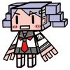

| 桜ノ杜ぶんこ 巡る天使の走馬燈1 | |
| 宮村優 | |
| (2013) | |
桜ノ杜ぶんこ
巡る天使の走馬燈
宮村 優
人間を頂点とし、様々な生命が暮らす世界。
雲ひとつない澄み渡った青空を舞う影ひとつ。
純白の翼は白鳥か鶴のようにも見える、しかしそうでないことは誰の目にも明らかだろう。
なぜなら翼の主は人の形をしているのだから。
当然、人間に翼などない、まして地上から数十メートルの位置を補助もなく飛行することなど不可能だ。
ダブッとしたパーカーにショートパンツと、服装だけとれば人間に見えなくはないが。
女の子っぽくも見える中性的な顔立ちの少年、その外見から十四才くらいの印象を受けるが、あくまでも人間ならの話だ、実際はわからない。
グレーの髪をなびかせて、頬を撫でる春の風に目を細め彼は気持ちよさそうにのびをうつ。
「問題が解決できてよかった。これでやっと編集作業に戻れるよ」
ぽかぽかとした日差しに照らされて、愛らしい顔には笑みが溢れ出す。
しかし次の瞬間、それまでの幸せそうな表情が一変し大きな溜息をこぼす。
「でもきっと編集長怒ってるよね、今回もまた締め切りギリギリだもの」
困ったと言わんばかりに少し癖のある髪の毛をわしゃわしゃと掻きむしり、空中で転げ回る。
だがそれもほんの数秒のこと、すぐに元の屈託のない笑顔が広がっていく。
「まあ、なるようになるか」
前向きなのか何も考えていないだけなのか、スッキリした表情で空の散歩を楽しみ出す。
「それにしても地上は本当に凄いな～、来るたびに街の姿が変わってる気がする。前に来た時はあんな高いビルなかったもん」
眼下に広がる新宿の街並みに感嘆の声を漏らしながら、うんうんと何度も頷く。
その時、彼の蒼い瞳にとあるものが飛び込んできた。
「おや、あれは？」
どこにでもありそうな雑居ビルの屋上に、ひとりの女子高生が立っていた。
それ自体はなんらおかしなことではないが、ただ立っている場所に問題があった。
転落防止のフェンスの先、一歩足を踏み出せば地上へ真っ逆さまなビルの縁に、彼女は危ういバランスを保っている。
自殺志願者らしいということは、一目で理解できた。
だが少年に焦りはない、それどころか道を歩く子猫を見るような眼差しを向けていた。
「うん、彼女は問題ないね。大丈夫」
短く呟いて飛び去ろうとした時、屋上へ通じる扉が勢いよく開き、反射的に視線を移動させる。
開け放たれた扉の向こうからポニーテールを揺らし、現れる新たなる登場人物。
ブレザーに身を包んでいることから、彼女もまた女子高生であることが窺える。
もっとも自殺をしようとしている彼女は化粧をシッカリ施し、明るく染めた髪の毛先を遊ばせ、制服を着崩しピアスに指輪といわゆる今時の女子高生。対してポニーテールの彼女は、アクセサリーの類を一切つけていないどころか、まるで化粧っ気がない。強いて上げるなら髪の毛を束ねる大きな黄色いリボンが自己主張しているくらいだ。
だがそれが、彼女の魅力を最大限に引き出していると言えなくもない。
「ちょ、ちょっとなにしてるの!?」
今にも飛び降りそうな女子高生に、ポニーテールの彼女は問いかける。
「見てわかんないワケ？ 自殺に決まってんでショ」
突如現れた存在に最初こそ戸惑っていた彼女だが、相手が自分とそう年の変わらない少女だと知るや投げやりな口調で返した。
「ま、待って！ 死んでもいいことなんてなにもないんだから！」
「生きてたっていいことなんてないし」
「そんなことないよ、ご飯が美味しいもの！」
「食いしん坊キャラか！ 他になにも思いつかなかったワケ!?」
「え、え～と友達と遊ぶの楽しいよね！」
「はん、アタシには友達なんていないし」
「じゃあ、私が友達になる！ 私は井上未来、アナタは？」
「名乗るわけないないじゃん、バカなの？」
未来と名乗る少女の必死な説得は続く。
あまりにも熱の入ったその様に、少年はつい見入ってしまっていた。
「ん～、名前がわからないと話しにくいね......うん、アナタのことはギャル子ちゃんって呼ぶね！」
「ダサ！ 最悪、ネーミングセンスなさ過ぎるっつーの！ そんな名前で呼んだら飛び降りるから！」
「じゃあ、名前を教えてよ。別に減るものじゃないんだしいいでしょ？」
「時間が減るっつーの」
「どうせ死ぬんだから、時間なんか気にしなくていいじゃない」
「それもそっか......って、死ぬ前提かっつーの！」
「あれ、じゃあ死なないの？」
「いや、死ぬけど......だーー、なにアンタ、ウザイんだけど!?」
未来の返しに思わず突っ込みを入れてしまう彼女。
もう面倒くさいなと言わんばかりに、髪の毛を掻きむしり名乗りを上げる。
「ったく......遠藤真澄」
「そっか、ますみんだ！」
「いきなりアダナとかやめて欲しいんだけど、馴れ馴れしいっつーの」
これ見よがしに深く溜息を吐くが、未来は真澄の態度をまるで気にしない。
「で、ますみん、どうして自殺なんかしようと考えたの？」
「アンタ、アタシの話聞いてないでショ？」
根負けしてしまったのか、そう言いながらもうなだれていた顔を上げ、正面に立つ未来の顔を見つめた。
「フラレたのよ。だ・か・ら・もう生きてる意味なんてないワケ。死ぬしかないでしょ！」
「えっ、そんな理由で死んじゃうの？」
「言ってくれるわね。アタシにとっては一生で一番の恋だったのよ！ アンタ、そこまでの恋したことあるワケ？」
「ない」
「はん、恋もしたことのない女がしゃしゃり出てくんなって話よ。わかったなら帰ってくれる。それともアタシが死ぬところ見ていきたいワケ？」
「ん～、両方嫌だなぁ......自殺なんてやめて、下の喫茶店でパフェ食べない？ 美味しいよ？」
「パフェごときでアタシのブロークンハートが癒されるなんて思わないで！ もう死ぬ！ 今死ぬ！」
「困ったな～、どうしよう......」
平行線をたどるやりとりに、未来もどうしたものかと小首を傾げ何気なく空を見た。
そして思いっきり少年と眼があった。
「て、天狗ぅぅぅぅぅっ!!」
さすがの未来も空を飛ぶ存在に驚き声が裏返る。
「はぁ～、天狗？」
怪訝そうに見つめる真澄。しかし未来の視線は、空に釘付けになっていた。
明らかに自分を見ているであろう眼差しに、少年の顔にきょとんとした表情が浮かぶ。
「あれ、見つかっちゃった？」
「うわ、天狗が喋った！」
「いやいや、天狗じゃないよ。顔赤くないし鼻だって高くないでしょ？ 僕は天使だよ」
「て、天使？ も、もしかして、ますみんを迎えに来たの!?」
「違う違う、偶然通りかかっただけだよ。それに魂をあの世に導くのは、死神様の仕事で天使は関係ないんだ」
パタパタと手を振り否定する少年と困惑する未来。
しかし、未来以上に困惑している人物がいた。
「ちょ......天狗やら天使がなんだって？ なにさっきからワケわかんないこと言ってんのよ？」
真澄の声に我に返り、未来は宙に浮かぶ少年を指さし口を開く。
「あそこ！ ほら、あそこに天使がいるでしょ？」
反射的に指の指し示す方へと真澄は視線を動かす。
しかし、未来が予想していたリアクションが返ってくることはなかった。
「どこにそんなもんがいるって言うのよ？」
「どこって......あそこ！ あそこ！」
「なんも見えないけど？ アンタ、もしかしてクスリでもやってんの？」
真澄が冗談を言っているわけではないというのは、リアクションを見ればわかる。
だが、なぜ自分にはああもハッキリ見えているのかと未来は考えた。
けれど考えても答えなど出てくるはずもない、なにより先に少年が答えを口にしてしまった。
「無理だよ。僕たち天使の姿は、普通の人間には見えないし、声も聞こえないもの」
「じゃあ......どうして私には見えるの？」
「ん～......簡単に言うと君は条件を満たしているからかな、その内容はちょっと言えないけど」
「そうなんだ？ よかったら名前を教えてくれる、天使さん？」
「僕はカヲル。だけど君は面白いね。ついさっきまで僕の存在に驚いていたのに、もうスッカリ受け入れているんだもの」
「だってこうして目の前にいるんだもの、そうなんだなって受け入れるしかないでしょ？」
「あはは、本当に君は面白い子だね、未来ちゃん」
真澄の周りをくるくる回りながら、カヲルは屈託のない笑みを浮かべる。
「ねえ、カヲルくん、天使なら真澄ちゃんを助けてあげて！ 自殺なんて馬鹿げてるよ」
「誰がバカだって？ バカって言うヤツがバカだって知らないワケ？」
未来の独り言に思わず真澄が反応する。実際には独り言ではないが、彼女の目には悪ふざけをされているようにしか映らない。
「どいつもこいつも人をバカにして！ 死んでやるわよ！」
キッと睨み付けられ、どうしようと未来は眼で助けを乞う。
そんな未来にカヲルは優しく微笑みかける。
「大丈夫だよ、真澄ちゃんは自殺なんてしないから」
「どうしてそんなこと言えるの？ ほら、今にもトウ！ って跳んじゃいそうじゃない」
「僕たち天使はね、生き物の寿命が見えるんだよ。そして真澄ちゃんの寿命はずっと先、つまり今日ここで死んだりすることはあり得ないんだよ」
「......本当に？」
コクリと頷くカヲルに、未来はしゃがみ込んでしまう。
「わーーー、やっちゃった！」
「こんな場面に遭遇したら、誰だって飛び降りるって勘違いしちゃうよね」
「するよー！ もぉー、ますみんたら紛らわしいんだから！」
「はぁ～、私がなんだってぇ!?」
「違うの、こっちの話だから気にしないで！」
「したくなくても目の前で騒がれちゃ気になるっちゅーの！」
「あはは、だよね......」
「アンタ、さっきからなにしてんのよ？」
睨みをきかせたまま呆れ口調で問いかけてくる真澄に対して、未来は苦笑いを返すしかできない。
そしてなにかを思いついたといわんばかりに、再びカヲルへと視線を移した。
「だけど、死なないってだけで大怪我はするかもしれないでしょ？」
「ん～、それもないかな、第一真澄ちゃんからは死のうっていう気迫っていうか、オーラみたいなモノが見えないもの。恐らくだけど、未来ちゃんが来ちゃったことによって、色々と後に引けなくなっちゃってるだけなんじゃないかな？」
淡々と語られる言葉に、またもや未来はうなだれた。
「え、それじゃ私が悪いの？」
「未来ちゃんは悪くないよ。悪かったのはタイミングだね」
などと言われても救いになりはしない。
さて、どうしようと頭を抱えてしまう未来の肩をポンポンと叩きカヲルはウインクをした。
「このまま立ち去っちゃうのが一番だと思うよ」
「いやいや、それはダメでしょ！」
「どうして？ 未来ちゃんがいなくなれば、真澄ちゃんも頭を冷やして大人しく帰ると思うけど？」
「この状況で帰りますって言えないよ！ とんでもない人でなしになっちゃう」
「だけどその程度のことで、問題が解決できるんだからいいじゃない」
「それは、そうかもしれないけどぉ～」
またまた頭を抱えて悶える未来に、真澄の不審な目は強まるばかり。
「さっきから独り言ばかり言って、マジでチョー邪魔だから帰ってくんない？」
「ほら、彼女もああ言ってることだし」
「言われても帰っちゃダメでしょ！」
「じゃあ、どうすればいいって言うの？」
カヲルの問いに、ほぼ即答で未来は答えた。
「カヲルくんがなんとかして！ 神頼みならぬ天使頼みで、ね！」
キラキラと期待に満ちた瞳を向けられて、今度はカヲルが苦笑する。
「僕が手を貸すまでもなく、アッサリ解決できる問題なんだけど......」
「お願い！」
ガシっと両手で力強く手を握られ、カヲルは観念した。
「わかったよ。天使たる者、困っている人は見捨てておけないしね」
「やった、ありがとう！」
嬉しさのあまりカヲルに抱きつき、未来はそのままの勢いで頬へキスをした。
「み、未来ちゃん！」
「えへへ、せめてものお礼。あげられるものなんかなにもないし」
「別になにもいらないよ。天使は見返りを求めないものだし......中には例外もいるみたいだけど」
真っ赤になりながら、カヲルは唇の触れた頬に触れる。
そしてなにもない虚空に向かい声をかけた。
「リンちゃん、お願い」
次の瞬間、何もなかった空間に音もなく一匹のハムスターが姿を現した。
しかし明らかにハムスターではない、その証拠に背中から生えた翼を羽ばたかせ浮いているのだから。
「はぁ～い、天界奇跡管理局のアイドル、リンちゃんが呼ばれて華麗に参上なのです！」
見た目通りの可愛い声で名乗りを上げるリン。
しかし、カヲルの顔を見るなり愛らしい表情から一転驚きへと変わり、すぐに呆れ顔へと移っていく。
「カヲルさん......ほんの数十分前にお別れしたばかりなのに......私に会いたくての呼び出し......じゃないですよね？」
「リンちゃんは魅力的だけど残念。そうじゃないんだ」
「でしょうね。そうだとは思いましたけど」
なんともいえない複雑な表情で、リンはぷかぷかと浮きながら小さく息を吐く。
「ハ、ハムスターが喋った！」
あまりの展開に、つい突っ込みを入れてしまった未来へ、リンがジト目を向ける。
「なんですか、この小娘は？」
「この子は未来ちゃんっていうんだけど......それよりも承認いい？」
「お仕事ですから、ちゃんと承りますけど......またなんの得にもならなさそうなことに、首を突っ込んでる系ですか？」
「どうだろう？ 少なくとも未来ちゃんは喜んでくれるかな」
「やっぱり、それ系ですか......いっつもそれで損をしてるのに、ホントお人好しなんですから」
苦笑し続けるカヲルに深い溜息を吐き、リンはコホンと咳払いをして姿勢を正す。
「奇跡の対象者はこの子でいいんですね？」
「ううん、未来ちゃんじゃなくて、あっちにいる真澄ちゃん」
さされた指の先にいる真澄を目で捕らえ、リンの表情に一瞬戸惑いが浮かんだ。
「そうなんですか？ てっきりこっちの子かと......」
「そう思っても仕方がない状況だけど、違うんだよ」
「話はわかりました。今回はどんな奇跡をご要望ですか？」
「まず──」
「ちょっと、なにボーっと明後日の方向見てんのよ!?」
放置され続け耐えかねた真澄が、ヒステリックな声を上げる。
「ゴ、ゴメンね、ますみん！ ちょっと立て込んでて」
「自殺しようっていう人間を目の前にして、なにを立て込むって言うのよ？」
「あはは......そ、そうだよね」
「口だけで飛び降りないとか思ってバカにしてんでしょ!?」
「そういうわけじゃ......」
金網を掴んでいた真澄の指が一本、また一本と外れていく。
突然の行動に未来の口からは、言葉が出てこない。
今にも飛び降りそうな一触即発な緊張が場を支配していく。
どうしようと助けを求めカヲルたちの方を見るが、向こうは向こうで立て込んでいるようで途方に暮れるしかない。
「それはまた高くつきそうなものをご希望ですね」
相も変わらず呆れ顔のリンに、カヲルの苦笑は止まらない。
「お願いできるかな？」
「さっきも言いましたけど、お仕事ですから」
「じゃあ、お願い」
拝むように頼まれ、今度はリンが苦笑する。
次の瞬間、どこから出したのか彼女の身体の数倍はありそうなノートパソコンのような物体が宙に出現する。
「カヲルさんのカードを貸して下さい」
促され取り出した一枚のカードをリンに手渡す。
両手でシッカリと受け取ったカードを、ノートパソコンにあるふたつのスロットの片方に挿入し、続けてこれまたどこから出したのか、リンが自分のカードを残ったスロットへ差し込む。
「天界奇跡管理局登録番号壱弐壱八、登録管理者名リンの名において奇跡の行使を許可します。いつでもどうぞ」
言い終わるのと同時にエンターキーの入力がなされたのを確認し、カヲルは天に向かいコールする。
「ミラクル・ダウンロード！」
刹那、天から光が降り注ぎカヲルの身体を包み込んでいく。
「え、なに？ どうしちゃったの、カヲルくん？」
目を開けているのもやっとの光に、未来は目を細め説明を求める。
「少し黙っていて下さい、ノイズが入ったら大変です」
よくわからないが口に手を当てて押し黙り、光の柱に包み込まれたカヲルを見つめていた。
ほどなくして光は目映さを弱めていき、そして四散し青空に溶けて消える。
「あれって......天使の輪？」
先ほどまではなかった光の輪が、カヲルの頭上に浮いていることに気づき、未来は無意識に口にしていた。
だが、その問いに答える者は誰もいない。
まだこの奇妙な儀式が終わりを迎えてはいないのだと直感的に理解した。
「奇跡のダウンロード終了を確認しました」
リンの言葉に力強く頷き、カヲルはゆっくりと目を閉じていく。
「それじゃ、まずひとつめの奇跡から、スタートエグゼ......リターン！」
「な、なに!?」
思わず驚きの声を上げる未来。
カヲルの頭上に浮いた天使の輪が、輝き出し高速で回転を始める。
未来の見守る中、天使の輪の慌ただしい動きとは対照的に、微動だにしないカヲル。
光は更に増していき七色に染まりカヲルを飲み込み、そして元の色へと戻り動きを止めた。
「奇跡の終了確認」
事務的に発せられるリンの言葉に、コクリとカヲルは頷く。
「これなら彼女も納得してくれるかな」
独り言のように呟いたかと思うとゆっくりと宙に浮き、先ほどと同じく目を閉じた。
「ふたつめの奇跡をスタートエグゼ......リターン！」
再び輝き出す天使の輪。だが先ほどとは違い一瞬目映い光を発しただけで、すぐに落ち着く。
「奇跡の発動を確認、ただいま実行中です」
淡々と告げられるリンの言葉に、改めてカヲルは頷く。
「あー、もう！ ウザイウザイ！ もうどうでもいい、死んでやる！」
ヒステリックに上げられた悲鳴に、未来は我に返り一気に緊張が走る。
しかしその時、この場の空気にそぐわぬ明るい声が響き渡った。
「え～、本当に死んじゃうの？ もったいないな、せっかくこれからいいことがあるのに人生棒に振っちゃうんだね」
「だ、誰よ!?」
新たなる登場人物に驚いたのか、再び金網をシッカリと掴み真澄は周囲を見渡す。
だが、屋上に真澄と未来以外の姿はない。とはいえ空耳と言うにはあまりにもハッキリしていた。
「なによ今の？ だ、誰か隠れてるの!?」
「上だよ上、僕はここにいるよ」
「上？ なに言って......ぎゃぁぁぁぁー！」
言われるまま空へ視線を移した真澄の絶叫が響き渡る。
これまで浮かんでいた戸惑いの表情はよりその色を強め、思わずその場にへたり込んでしまう。
「ア、アンタなにもんよ!? なんで、空なんて飛んでるのよ!?」
「天使だからね、空くらい飛べるよ」
「て、天使ぃ!?」
「うん、悪魔には見えないでしょ？」
にこやかに微笑むカヲルとは対照的に、真澄の顔は引きつり笑うことなど出来なかった。
「ま、まさかアタシを迎えに来たの？」
「違う違う、ただ僕は忠告しに来たんだよ。今は死なない方がいいよって」
「はぁ～、どういうワケ、死なない方がいいって？」
いまだ顔を引きつらせたまま、それでもカヲルを睨み付け真澄は質問を投げかけた。
「ちょっとね、力を使って君の未来を見てみたんだよ」
「アタシの未来を見た？ そんな真似できるワケないじゃん！」
「できるよ、天使だもん」
カヲルの言葉が本当だという証拠はどこにもない、それでもなぜか奇妙な説得力に真澄は押し黙る。
「今から三ヶ月後に彼氏ができるよ。しかも君をフッた相手より圧倒的に素敵なね」
戸惑いを浮かべていた真澄の顔に光が差し、あっという間に花が咲く。
「マジで!?」
もの凄い勢いで食いついてくる真澄に、カヲルはあくまでもにこやかだった。
「マジだよ」
「嘘だったら殺すわよ!?」
「嘘じゃないから大丈夫」
「......騙したら承知しないわよ!?」
「間違いなく本当のことだよ」
笑顔を絶やすことなくカヲルは真澄の横へ降り立つ。
「それでもまだ死ぬっていうの？ 約束された幸せを投げ捨てちゃうの？ もったいないよ。確かに失恋は辛いだろうけど、その百倍は楽しい日々が待っているんだもの」
いったん言葉を句切り、真澄へと手を差し出す。
「死にたいって言うなら僕は止めない。けど、精一杯生きるっていうなら、この手を取って」
カヲルの顔と手を交互に見比べやけに真剣なトーンで真澄は口を開く。
「もう一回確認、今の本当にガチでマジなんでしょうね？」
「もちろん」
次の瞬間、瞳を輝かせ力強く真澄はカヲルの手を取っていた。
今の今まで死ぬと言っていたのが嘘のように、実に軽やかなステップで屋上をあとにする真澄を見送ってカヲルは大きく息を吐く。
「これで一件落着かな」
「まだ終わってないですよ」
傍観者に徹していたリンが、呆れた表情でカヲルの顔の前に静止する。
「もう一度言います。ホントお人好しなんですね、あんなことのために奇跡を使うだなんて」
苦笑で返すカヲルに、咳払いを小さくひとつしリンは言葉を続ける。
「まあ、いいですけど。あたしが損をするワケじゃないですから......今回の奇跡にかかった経費は八万三千ＡＧです。はい、暗証番号を入力して下さいね」
事務的に語りながら、ノートパソコンから伸びたテンキー端末らしきものをカヲルへと差し出す。
「八万三千......そんなに？」
「そんなにです。内訳を説明しますか？」
コクリと頷くカヲルを尻目に、リンは端末へと視線を下ろす。
「相手に認識させるが三千で、未来の閲覧が八万です」
「未来の閲覧が八万......そんなにするの？」
「はいです。未来を知り情報を他者に教える行為は、運命を大きく変えてしまう可能性がありますから、そりゃそれくらいかかりますよ。むしろ安いくらいだと思いますよ」
「あはは......それじゃ、六回払いでお願いします」
「六回ですね、承りました」
パスワードの入力を確認し、リンはエンターキーを叩いた。
「支払い処理完了。はい、カードのお返しです」
スロットに差していたカードを返却され、カヲルは力が抜けたように座り込む。
「では、お仕事も終わったので失礼しますね、カヲルさん」
言い終わるやいなや、まるで煙のようにリンは消え、あとにはカヲルと未来のふたりだけが残された。
「よっこいしょっと」
おじさんのようなかけ声を上げ、隣に腰を下ろす未来。
そこで改めてカヲルは彼女の姿を見る。
なぜ改めて見たのか自分でも理解はできなかったが、深く考えることなく視線を送った。
パッチリした目は力強くかつ愛嬌に溢れ、キリリとした眉毛と相まって生命力に満ち溢れているように映る。
形の良い鼻に笑みの似合う唇、すらっと伸びた手足は細すぎることなく、むしろ絶妙な健康美を醸し出す。
吹き付ける春風になびくポニーテールを押さえつけ、屈託のない笑顔を浮かべる。
「えっと、未来ちゃん......前にどこかで会ったことあったかな？」
自然に吐いた言葉にカヲルは理解した。なぜ改めて彼女の姿をマジマジと観察したのか、その理由がまさに今の言葉だった。
「天使でもそんな古典的なナンパするんだね」
言われた意味が一瞬わからずキョトンとするカヲル。だがしかし、すぐに顔を真っ赤に染めブンブンと手を振った。
「違う違う、そういう意味じゃなくて、言葉通り会ったことないって聞いてるの」
「照れちゃって、カヲルくんって可愛いね」
「で、ど、どうかな？」
しかし、その問いに対して返ってきたのは否定の言葉。
「ううん、初めて会うけど？ そもそも天使がいることを今日知ったくらいだもん」
横に振られる首に、それはそうだよなと納得しながらも、いまだに続く奇妙な感覚に内心戸惑っていた。
「そう、だよね......だけど、なんだろう、なにかが引っかかるんだ......なにかを忘れているような......」
「思い出せないってことは、大したことじゃないって誰かが言ってたけど、それもそうなんじゃない？」
「そう、なのかな？」
「井上未来......間違いなく、記憶にある名前なんだけど......ん～、思い出せない」
「誰にでも思い出せないことってあるよ。そういう時は、無理に思い出そうとしても思い出せないよね」
「確かにそうだね......」
「それよりありがとう、私のお願いを聞いてくれて！ 本当に本当にありがとうね！」
唸るカヲルの手を握りしめ、未来はブンブンと上下に揺らす。
「お礼なんかいらないよ。困っている人を手助けできたんだから」
「でも未来を見たりできるなんて、天使って凄いんだね、そんな力を持ってるなんてビックリ」
感心したように顔を覗き込む未来に、今度はカヲルがゆっくりと首を横に振る。
「天使にはそんな力はないよ」
「えっ......それじゃさっき言ったのは嘘、なの？」
戸惑いの色を含んだ声に、カヲルは再び首を横に振った。
「嘘なんかついたりしないよ。言ったことは全て本当のことさ」
「だけど未来を見る力なんてないって」
「僕たち天使にはないけど、神様にはその力があるからね」
意味がわからないと言いたげに、小首をかしげる未来。
「わかりやすく言うと、天使は神様の力を借りて奇跡として使ってるだけなんだよ」
「そうなんだ？ だけど神様の力が使えるなんて、やっぱり凄いと思う。なんだってできちゃいそうだもん！」
「ううん、凄いのは神様であって僕じゃないから、それにタダで使えるわけじゃなくてお金がかかるんだよ。だからどんなことでもできるっていうのは少し無理があるし、使いたい放題ってわけにもいかないんだよ」
「え、神様ってお金を取るの？」
「うん、でないと際限なく使っちゃう可能性もあるしね。それはやっぱり色々と問題あるから」
「あ、もしかして、さっきのリンちゃんとのやりとりって......」
ポンと手を叩く未来にカヲルは頷く。
「彼女は奇跡管理局員......奇跡の使用を承認するのと、それにかかった経費を徴収するのがお仕事なんだ」
そこでなにかに気づいたように、口に手を当てた未来の顔色が青くなる。
「もしかして、私のワガママのせいで無駄遣いさせちゃった？」
「未来ちゃんが喜んでくれたから、無駄じゃないよ。気にしないで」
「リンちゃんが言ってたのもわかる気がする。カヲルくんってお人好しなんだね」
「そんなことないって自分では思ってるんだけど」
苦笑するカヲルを微笑ましく、親しみのこもった瞳で見つめながら、未来はおもむろにポンと手を叩く。
「ところで、今更こんなこと言うのもあれだけど、天使のこととか奇跡のこととか私に話しちゃっていいの？」
「どうして？」
「もしかしたら、誰かに話しちゃうかもしれないでしょ？ いいの？」
「あー、そういう意味か......別に問題はないよ。僕たちは、別に存在を隠しているワケじゃないもの」
「そう......なの？」
「でも、未来ちゃんのことを思うなら、誰かに話したりはしない方がいいと思うよ」
またもや小首を傾げる未来に、カヲルは言葉を続ける。
「多分、病院に行くことを勧められちゃうと思うから」
「......そうだね、天使に会ったなんて言ったら、その瞬間可哀想な子認定されちゃうね」
しみじみと納得する未来を尻目に、カヲルは立ち上がると、埃を払うようにお尻を叩く。
そして、よしと小さく呟きゆっくりと宙に浮いていく。
「じゃあ、締め切りが迫ってるから、帰ってお仕事するね」
「え、締め切り？ お仕事ってなにをしてるの？」
「走馬燈を作る仕事だよ。もしかしたら君が見ることになる走馬燈は、僕が編集した作品かもね」
「私の見る走馬燈......？」
「バイバイ、未来ちゃん」
ウインクをした次の瞬間、リンがそうであったようにカヲルは消えていた。
あまりにも一瞬の出来事に、狐に摘まれたような表情を浮かべる未来。
夢か幻でも見ていたのではないか、本当は布団の中で寝息を立てているのではと、つねった頬は痛かった。
「いったぁ～......もっと手加減すれば良かった」
赤くなった頬を撫でながら、下ろした視線の先に飛び込んでくる白い羽根。
未来はそれを拾い上げると、大の字になって寝転がる。
そして太陽に透かすようにかざし、ニッコリと微笑んだ。
「カヲルくんか......また会えそうな気がする」
空に消えた少年の顔を思い出し、唇がメロディーを奏でる。
誰もいない屋上に、少女の鼻歌だけが響き渡る。
その音色は、見上げた青空にも負けないほど、どこまでもどこまでも澄み渡っていた。
天界──
神たちが治め天使たちが暮らす、人々が天国と呼ぶ世界。
人間達の住む地上と隣り合わせでありながら、異なった時間、理が支配する別世界。
生命としての一生を終えた魂が集い、新たなる肉体を得るまでを過ごす束の間の楽園。
天界は大きく別けて三つのブロックで構成されている。
ひとつは神達の住まうエリア、ひとつは天使達の住まうエリア、最後に地上での生を全うした魂達が住まうエリア。
三つに区分こそされているが、それぞれの行き来は自由、ゆえに天界は様々な姿をした者が住まうバラエティー豊かな場所と言えよう。
地上での仕事を終えたカヲルが、異世界へ通ずる門『ヘブンゲート』をくぐり、空を舞う。
同時に大聖堂の鐘が荘厳な音を上げ、天界中に時を知らせる。
「うわ、もうこんな時間？ ヤバっ、早く戻って仕事しなきゃ、編集長に怒られちゃう」
思わぬハプニングに、予定の時間より大幅に遅れて帰ってきたカヲルは、慌てて純白の翼を広げ羽ばたく。
建ち並ぶ高層ビルの間を実に優雅に飛ぶ彼の隣を、白い鳩が風を切り並走する。
「やあ、こんにちは、気持ちいい風だね」
挨拶をするカヲルに鳩は「クルックゥ」とひと鳴きして応える。
天界にいるのは神と天使、それ以外は全て魂。この隣を飛ぶ鳩も地上での生涯を終えて天界へとやってきた存在に他ならない。
数十年から数百年をここで過ごし、新たなる肉体を得て地上へと還っていく者。
その時、再び鳩として生まれ落ちるか、他の生命に姿を変えるかは神のみぞ知る。
程なくして視界は開け、身体を傾けて離れていく鳩に手を振り、カヲルはゆっくりと高度を下げていく。
天使エリアのメインストリートから、やや離れた所に広がる自然豊かな公園を目指して。
いや、正確にはその隣にある建物へ。
良い言い方をすれば歴史のある、悪い言い方をするならば、立派とは言い難い古いだけが特徴の雑居ビルがゴール。
出入りする存在がないのを確認し、カヲルは地面へと降り立ち翼をたたむと、エントランスホールを抜けエレベーターへ乗り込む。
そして八階のボタンを押し、手持ち無沙汰から壁に貼られたフロア案内へと視線を移す。
白いプラスチックプレートに彫り込まれた『天界走馬燈編集部』という文字に指で触れたのと、ほぼ同時に『チン』とベルの音が響き、扉が左右に開く。
開け放たれた先から流れ込んでくる鬼気迫る空気。
忙しなくマウスをクリックし、キーボードを叩く音が何重にもなってカヲルの耳へと飛び込んでくる。
地上では毎秒誰かしらが死んでいる、ゆえに走馬燈編集部は常時修羅場。
ピリピリと張り詰めた空気を肌に感じながら、音も立てずそーっと自分の机を目指すカヲルだったが、次の瞬間ピタリと足が止まる。
「カヲルぅぅぅ！ カヲルはいるかニャぁぁぁぁ!?」
酒やけしただみ声が、編集部内に響き渡る。
だが全員いつものことかと気にする素振りも見せず、黙々と自分の作業を続けていく。ただひとりを除いて。
そのただひとり、カヲルはしまったという顔をしながらも呼ばれた方へと歩き出す。
「お呼びですか、編集長？」
フロアの一番奥に置かれた一際大きなデスクに座る翼の生えたデブ猫が、カヲルの存在に気づき聞こえるように舌を打つ。
「先週の作業報告書を見させて貰ったニャ。いつものことだが、それでもあえて聞かせて貰うニャ。あの報告に嘘はないかニャ？」
「え、えっと......あはは、間違いないです......」
「ふざけんニャ、ボンクラ！」
バンと激しく机を叩く音に、一瞬フロアが静まりかえるが、すぐになにもなかったかのように全員が作業へと戻る。
「ふざけてるつもりはないんですけど......」
カヲルの言葉に編集長は、全身の毛を逆立たせ怒りを露わにする。
「ふざけてるつもりはニャいだと？ これのどこがふざけてニャいって？ あぁぁぁ～？」
眉間を痙攣させながら、カヲルに見えるようにモニタを回転させある箇所をトントンと爪で叩く。
「さあ、ここになんて書いてあるのか声に出して読んでみろニャ！」
「あ、はい......さ、作業進捗状況ゼロ％、ですね......」
「ですねじゃないニャ！ ゼロってなんだゼロって、昼寝でもしてたんか、ワレ!?」
「いえ、毎度のことではあるんですけど、取材に時間が......」
「何度言えばわかるニャ！ そんなもん必要ないニャ！ お前は走馬燈編集部員で記者じゃないニャ！ それとも転職したいっていうアピールかニャ？ だったらさっさと辞表を出しやがれニャ！」
再び机を叩き、よりいっそう茶色い毛が逆立つ。
「お前の勝手でいつもいつも納期のデッドギリギリニャ！ しかも今回は、もう二十四時間を切っているニャ、絶望的ニャ！ これまで奇跡的に間に合ってきたからいいようなものの今回はヤバ過ぎるニャ！ もし締め切りを破ったらシャレにならんと理解していニャいのか!?」
「はい、もちろん理解しています」
「はん、怪しいものニャ、どう理解しているか説明してみろニャ」
「走馬燈がなければ死者は自らの死を認識できず、成仏することなく地上を彷徨い続ける恐れがある、ですよね」
「わかってるならなぜちゃんとしないニャ!? お前がどうなろうとワシの知ったことじゃないニャ。だけどお前の失敗はそのまま上司であるワシの責任に直結するニャ！ もし万が一ご臨終までに間に合わなければ大問題ニャ！ 神様のところに行って頭を下げまくらニャきゃいけないニャ！ 余計な仕事を増やすニャ！ 実務をしなくてすむ楽なポストだから、したくもない努力をして編集長まで上り詰めたっていうのに......ふざけんニャ、ワシは働きたくないニャ！ 無駄な労力を使わされるなんて真っ平ごめんニャ！ ワシを楽させるためにキビキビ働きやがれニャ！」
唾を撒き散らしながらまくし立てられ、カヲルは苦笑することしかできない。
「ヘラヘラしやがって、バカにしてるのかニャ？」
興奮冷めやらぬ様子でタバコを取り出し火を点けると、心を落ち着かせるように煙を吐き出す。
「もうなん十回と言ってきたかわからニャいが、無能な部下のためにもう一度言うニャ。余計なことはしないで、与えられた仕事だけしやがれニャ」
「だけど、編集長......」
反論しようとしたカヲルの言葉を遮って、机の上に置かれた黒電話のベルがけたたましく鳴り響く。
「まったく、こんな時にどこの馬鹿野郎ニャ？」
毒づき点けたばかりのタバコを灰皿にこすりつけ、鳴り止まぬ受話器を取り上げる。
「はい、こちら走馬燈編集──」
あからさまなほど不機嫌な対応を見せていた編集長の声がピタリと止まった。
そしていきなり立ち上がったかと思うと猫背をぴんと伸ばし直立不動。
不振に思っているカヲルなど気にもかけず、ペコペコと頭を下げ猫なで声を上げる。
「こ、これは死神様！ はい、はい、えっ、カヲルですかニャ？」
自分の名前が出てきて思わずカヲルは耳をそばだててしまう。
「いえいえそんな滅相もニャい......はいはい......そうなんですニャ、部下達には常に相手のことを思いやり丁寧な仕事をしろと......はい、効率ばかり追い求めている編集部が多いようですが、締め切りギリギリまで魂を込めて制作に当たるが、当社のスローガンで......そんな、当然のことですニャ！ はい、はい......では、失礼しますニャ！」
終始電話の向こうにいる相手にお辞儀をし続け、受話器をそっと置く編集長。
ドサッと椅子に腰を下ろし長い息を吐く。
「あ、あの、今の電話は？ 僕の名前が出ていたみたいですけど、いったい？」
カヲルの声に編集長は天井を仰いでいた顔を向け、先ほどまでの不機嫌な表情が嘘のように、にこやかに微笑みかける。
「死神様ニャ。お前の作った走馬燈が実に素晴らしいと、神様達の間で話題になっているそうニャ。それで特別報奨金が会社に支給されることになったと、そういう報告ニャ」
「そ、そうなんですか？ それはなんと言ったら......光栄です」
喜んでいいものか判断に困り愛想笑いを浮かべるカヲルから視線を外し、編集長はスポーツ新聞を手に取る。
「もういい、さっさと作業に戻るニャ」
「いいんですか？」
「締め切りが迫ってるニャ！ さっさと片付けるのが、今のお前の仕事ニャ！ 死期は延びニャいんだからキビキビするニャ！」
「では、作業に戻ります」
数分前までとは打って変わってホクホク顔の編集長に礼をし、カヲルはその場をあとにした。今日取材を終えた少女の走馬燈を作るために。
だが不思議なことに、今カヲルの脳裏を横切ったのは、取材対象の少女ではなく、屋上で出会った少女の顔だった。
「未来ちゃんか、面白い子だったな」
無意識に緩んでいく頬を挟み込むように手で叩き、気合いを入れる。
「さあ、頑張って仕上げないと！」
編集長にお小言と新たなる仕事を頂いて、カヲルは自分の席へと腰を下ろす。
「毎度毎度ご苦労さん」
事務用の椅子がギシッと軋むのと同時に声をかけられ、左隣の席へとカヲルは視線を向ける。
同期で同僚のサモンが端末を操作する手を休めることなく、ニヒルな笑いを浮かべ紅い瞳だけをこちらに向けていた。
編集部の中でも一、二を争う敏腕編集、その上男のカヲルが見ても惚れ惚れする程の甘いマスクの持ち主で、長身でギリシャ彫刻を彷彿させる引き締まった肉体に憧れる女子社員は少なくはない。
「自業自得だから仕方がないよ。サモンの十分の一でも僕が優秀なら怒られたりしないわけだし」
「まあ、俺が優秀なのは周知の事実だが、そう悲観すんなって。生きてりゃそのうち良いこともあるさ、なんなら女の子のひとりでも紹介してやろうか？」
相変わらず作業をする手を止めることなく爽やかに、白い歯を覗かせる。
「ちょっと聞き捨てならないわね。カヲル君に女を紹介する？ そんな真似したらアンタの恥骨を砕くわよ」
後ろから発せられた声に振り向くと、右隣の席の主でありサモン同様同期のハルカがウインクで出迎えてくれた。
彼女は編集部の中で、サモンと一、二を争うもうひとりの敏腕編集。
サモンが女子人気を独占しているなら、ハルカは男子の人気を独占していた。
艶やかな金色の髪は緩やかなウェーブを描き、エメラルドの瞳は見る者を虜にする。目元にある泣きぼくろと肉厚な唇が大人びた印象を与えるが、なによりも目を引くのはその豊かに実った乳房。
ビシッと着込んだスーツの胸元だけがやけに窮屈そうに見えるのは気のせいではないだろう。ダメだと思っていてもつい目が行ってしまう。
カヲルの視線に気づいたのか両腕で挟み込み大きな胸を更に強調し、服の上からでもわかるほどハッキリと谷間を作り色っぽく微笑む。
「私の胸に興味あるの？」
「い、いや......えっと、ごめん、そういうつもりじゃ......」
耳まで真っ赤に染めあたふたする姿に、ハルカはクスッと小さく笑う。
「もぉ、ホントに可愛いんだから、見たかったらいくらでも見てくれていいのよ？ カヲルくんだけは特別な・ん・だ・か・ら」
「ハ、ハルカちゃん......」
「たく、随分俺と対応が違うじゃないか」
そこで初めて手を止め、サモンは身体ごとハルカの方を向く。
「当然でしょ、アンタとカヲルくんじゃ月とスッポンなんだから。もちろん言うまでもないけど、アンタがスッポンね」
「念を押さなくたってわかってるよ」
深い溜息を吐きながらカヲルの肩に腕を回し、サモンは疲れ切った瞳をハルカへと向ける。
「気をつけろよカヲル、この女はお前の貞操を狙ってる雌豹だぞ」
「ハルカちゃんは、そんな子じゃないよ？」
「カヲル君の言う通りよ！ アンタ、ホントに恥骨を砕いてあげましょうか？」
スーッと細められていくハルカの眼差しに、サモンの背筋に言いようのない悪寒が走った。
「こえーな......お前なら本気でやりそうだから笑えねーよ」
口元をひくつかせ露骨に狼狽えるサモンに、ハルカはフンと鼻息を荒げた。
だが次の瞬間、フェロモン全開の笑みを浮かべ、椅子ごとスライドさせカヲルへ近づく。
そして肩に回されたサモンの腕を払いのけ身体を密着させる。
「ちょ......腕に胸が当たって......」
全身を真っ赤に染め狼狽えるカヲルに妖艶な笑みを浮かべ、胸の谷間へ二の腕を埋もれさせていく。
「うふふ、真っ赤になって本当に可愛いんだから、そういうところも大好きよ」
「ったく、イチャつくなら仕事が終わってからにしてくれよな」
小さく息を吐きサモンは再び仕事へ戻る。それを見てカヲルも慌てて端末へと向き直る。
「ハルカちゃんゴメン、仕事に戻らないとまた怒られちゃうから......」
申し訳なさそうに謝る姿に、絡めていた腕を放しハルカも自分の席へと戻っていく。
「そうね、サモンじゃないけど、この続きは就業時間を終えてからにしましょうね」
ウインクをしながらの投げキッスに照れながら、編集長に手渡されたファイルに目を通し始める。
「えっと......森田雪子ちゃん十七才、性別は女の子。死因は交通事故、死亡日時は地上時間で四月二十八日の午後四時十五分、死亡後の行き先は天界っと......」
他の編集部員は以上の情報だけ目を通せば十分と判断を下すが、カヲルは違った。
身長体重スリーサイズ、血液型に家族構成と書かれたデータ全てに目を通しチェックを入れていく。
それがすんだところで、走馬燈編集ソフト『メモリーズ』を起動させ新規作成を選択。ファイルに書かれた対象者のシリアルナンバーを素早い動作で入力。コマンドは実行され魂へのアクセスが開始される。
程なくして展開されていく膨大な思い出。
カヲルはモニタに映し出されていく思い出を真剣な眼差しでチェックしていく。
蒼い瞳に映し出されていく、地上に生を受けてからこれまでの記憶たち。
膨大なデータを早送りすることなくひとつひとつ確かめては、ノートにペンを走らせる。
白い紙に描かれていくコンテ。どのシーンのどこを何秒使うかモニタと睨めっこしながら綿密に組み立てていく。
通常これらの作業は端末上で行うが、カヲルにはアナログ作業の方が性に合っていた。
走馬燈の再生時間に制限はないが、短すぎても長すぎても良くはない。
対象者がしっかりと己の歩んできた人生を振り返りつつ、余韻を残す作りに仕上げなければならず、編集者のセンスが問われるポイントでもある。
カヲルは何度も修正を繰り返し文字を重ねていく。真っ白だった紙はいつしか真っ黒に染まり、次のページへと範囲を広げていく。
他の編集なら早い時点でコンテを切り上げ次の作業へと取りかかっているところだがカヲルは決して妥協しない、自分が納得できない物は、それを見る相手も満足するはずがないと全行程中で一番時間を費やすことにしている。
果たしてどれほどの時間が経過しただろう、ノートを走っていたペンがピタリと止まり、カヲルの眉が跳ね上がった。
モニタに映し出されているのは、友達と思われる少女との会話。
周囲の風景は鮮明に映し出されているというのに、目の前に立つ少女の顔がまるでモザイクでもかかったかのように不鮮明な上、声には奇妙なエフェクトがかかっている。
メモリーズによって呼び出された思い出は、魂に刻まれた記録。例え本人が覚えていなくても経験したことは全て保存されている。
だが、問題を抱えどうしたらいいのかと強く思い悩んだ時、記憶に乱れが生じる。今映し出されている映像のように。
対象──森田雪子は、なにかしらの問題を抱えている。恐らく原因は、この顔の不鮮明な少女に関係しているのだろう。
「やっぱり、このままにはしておけないよね」
誰に言うわけでもなく呟くと、カヲルは立ち上がり出口へと向かった。
「あーーーーーーー、もう！」
苛立ちを隠そうともせず、少女──森田雪子は、自室へと通じる扉を力任せに蹴り飛ばす。
しかしそれでも怒りは収まらず、開け放たれた扉へ向かい、手に持っていた鞄を思いっきり放り投げた。
加減なしに放たれた鞄は壁にぶつかり中身が四散する。
昨日掃除したばかりの部屋に散らばる教科書や筆記道具を目の当たりにし、自業自得だというのに舌を打つ。
床に散乱した教科書たちを蹴り飛ばし、ズカズカと大股で室内に入るとそのままベッドへダイブ。
スプリングが軋む音を聞きながら雪子は枕に顔を埋め足をジタバタさせた。
「だーーー！ どうして素直に謝れないの、私の馬鹿！ 大馬鹿野郎！」
こだまする絶叫、そして訪れる静寂。
だが、そんな静寂をなんの前触れもなく明るい声が打ち消した。
「そんなにイライラしてちゃ、せっかくの可愛い顔が台無しだよ？」
「だ、誰っ!?」
突如響き渡った声に、雪子はガバッと起き上がり部屋の中を見渡すが誰もいない。
「空耳？ だけど、あんなにハッキリした空耳とかある？ そこまでまいっちゃってるってこと？」
ガックリ肩を落とし深い溜息を吐くと、そのままベッドに向かい後ろ向きで倒れ込む。
小さく華奢な身体を受け止めて再びスプリングが軋みを上げるが、その音は雪子の絶叫によってかき消えた。
「ぎゃあぁぁぁぁぁぁぁぁっーーー！」
「そんなに驚かれたら、さすがにビックリしちゃうよ」
天井から生えた生首──カヲルが、ベッドの上で大の字に横になる雪子に微笑みかけた。
「お、お化けっ!?」
咄嗟に天井に生えた生首目がけて雪子は、ありったけの力で枕を投げつける。
高速で向かってくる枕に動じることもなく、カヲルはヒョイと顔をそらし渾身の一撃を回避すると、落下を始める枕と共にひらりとベッドへと降り立った。
あまりの光景に言葉を失い、雪子はカヲルと天井へと視線を交互に送る。
「心配しなくても、穴とか開けたりしていないから」
視線に気づきカヲルが声をかけるが、雪子は小さな悲鳴を上げ後ずさってしまう。
「お、お化け......！」
「違う違う。ほら、足があるでしょ？」
「じゃあ、妖怪！」
「それも違うかな。僕は......」
釈明しようとカヲルが口を開いた時、新たなる登場人物の怒鳴り声が部屋の中に響く。
「うるさい！ なにさっきから騒いでるの!?」
カヲルと雪子が揃って開けっ放しの扉へと視線を向けると、雪子の母が不機嫌そうに立っていた。
「だって、こいつが!?」
「こいつ？ 誰のこと言ってるのよ、アンタは？」
「誰って、こいつよこいつ！」
カヲルを指さし訴えかける雪子だが、返ってきたのは母の呆れ顔。
「誰もいないじゃない。ふざけるのもいい加減にしなさい！」
踵を返し立ち去る母の背中とカヲルを交互に見ながら、わけがわからないと表情で訴える雪子。
「無駄だよ、僕の姿は君にしか見えないし、声だって聞こえないもの」
疑問に答えるべく返ってきた言葉に、雪子は狼狽する。
「や、やっぱりアンタ、妖怪でしょ!?」
「違うよ。僕は天使さ」
「天使ぃ!?」
素っ頓狂な声を上げ雪子は目を見開く。
「自己紹介が遅れたね、僕はカヲル。よろしくね、雪子ちゃん」
「ちょ、なんで私の名前知ってるのよ!?」
「ん～、天使だから、かな？」
「答えになってないんだけど」
ジト目でカヲルの頭のてっぺんからつま先まで視線を巡らせベッドに腰を下ろすと、余裕が出て来たのか足を組み頬杖をつく。
「まあ、少なくとも人間じゃないのは間違いなさそうね。それによく見ると可愛い顔してるし」
「あ、ありがとう」
「で、その天使がなんの用？ まさか私の美しさに一目惚れして押しかけてきたとか？」
「確かに雪子ちゃんは可愛くて魅力的だけど、そうじゃないよ。君の抱えている問題を解決するお手伝いができないかなってやってきたんだ」
ピクリと雪子の眉間にシワが寄り、ツリ目がちな目がスーッと細くなる。
「助ける？ あんたが、私を？」
あからさまに不審がる雪子の態度にも気を悪くすることなく、カヲルは笑顔で頷いた。
「そんな話を鵜呑みにすると思ってんの？ ただただ胡散臭いったらありゃしない」
「いきなり信じろって言っても無理があるだろうけど、本当のことだよ」
「本当のことねぇ～、天使だって言うんなら、それなりの力が使えるんでしょうね？」
「大抵のことはできると思うけど」
「で、願いを叶え終えたらどうする気よ？ 魂でもよこせって言うんじゃないでしょうね？」
「言わないよ。僕は悪魔じゃなくて天使だから見返りは一切求めないよ。ただ困っている人の力になりたいんだ」
「胡散臭い......新興宗教の勧誘を受けてる気分よ」
完全に疑ってかかる雪子に対して、あくまでもカヲルは笑顔を絶やさない。
「間に合ってるからいいわと言いたいところだけど、ダメ元で力になってもらおうかしら」
口角を上げながら告げ、雪子は足を組み直す。
「本当？ それで、僕はなにをすればいいのかな？」
「私の体重を五キロ減らして、代わりに胸のカップをふたつ上げて」
「......それじゃないよね、抱えてる問題って」
「いくつもある問題のひとつよ！ それともやっぱりできないって言うわけ？」
口を尖らせ上げられる抗議の声には、同時にどうせできっこないという挑発が孕まれていた。
「それくらいはできるけど......」
「できるのっ!? じゃあして！ すぐして！ 今してよ！」
恐ろしく俊敏な動きで立ち上がり、カヲルの肩に手を置き鋭い眼差しで詰め寄る。
あまりにも必死な姿にカヲルは圧倒され、瞬間言葉を失った。
「え、えっと......できるけど、それって必要？ 体重五十三キロってむしろ少し細い位なんだから、それ以上痩せる必要ないんじゃない？ それに胸のサイズだって八十......」
「だーーーーー！ なんで、あんたがそんなこと知ってんのよ!?」
肩に置いた手を前後に激しく揺らし、猛禽類のごとく殺意のこもった目で睨みつける雪子。
「簡単に言うと天使だから......かな？」
人形のようにガクガクと身体を揺すられながらカヲルは答える。
正確にはここに赴く前にファイルでプロフィールを見たからだが、嘘はついていない。
「もう最低！ 天使最低！ プライバシーの侵害だわ！ 個人情報保護条例って知らないの!? って、痛っ！」
猛烈な勢いで噛み付いていた雪子が、突然頭を抑えてしゃがみ込む。
どうしたんだろうと雪子を見ると床を転がる空のペットボトル。状況から判断して、これが頭に激突したに違いない。
「だからうるさいって言ってるでしょ！ 今度騒いだら晩御飯抜きだからね！」
視線を上げたカヲルの目に飛び込んできたのは、扉の向こうで踵を返し立ち去ろうとしていた母親の背中だった。
「ううぅ～......痛い......たんこぶになってるぅ......」
「大丈夫？」
「ちっとも大丈夫じゃないわよ！」
痛みのためぷるぷると震える雪子。上目遣いの瞳の端には、うっすらと涙が溜まっていた。
「え～と......体型の変更だったね？ 叶えるのはいいけど、本当にそれでいいの？ 後悔しない？ もっと解決しなきゃいけない問題があったりしない？」
「......なによ、まるでなにか事情を知ってるみたいな言い回しするじゃない」
涙を指でぬぐいながら、雪子は怪訝そうな眼差しを再び向ける。
「友達に関係する悩みがあるんじゃないかなって推測はしているけど、実際はなにも知らないよ」
「なにもないわよ」
「なにもないってことはないよね？ そのことで、とても思い悩んでいるでしょ？」
「しつこいわね。なにもないわよ、あんたに話すことなんてね。それを話すってことは、あの子のデリケートなことをアンタに教えることになる......そんな真似するくらいなら死んだ方がマシよ」
「雪子ちゃん......」
「それにね、これは私の問題なの......自分がやらかした失敗は自分で解決しなきゃいけない。誰かにどうにかしてもらおうなんて絶対にダメ。そんなの誠意がなさ過ぎる。そんな真似したらそれこそ終わりよ。もう私はあの子の友達を名乗れなくなっちゃう。だからアンタにしてもらうことも話すこともない、自分の力だけで解決してみせるんだから！」
強い意志が宿った眼差しに見つめられ、カヲルは自分の出る幕はないことを理解した。
「わかった。そうだね、それが一番良いのは間違いないもの。ゴメンね余計なお節介しちゃって」
「べ、別にいいけど......」
にっこりと微笑まれ、雪子は思わず赤面し顔を背ける。
「じゃあ、ボクは帰るね。友達と早く仲直りできることを祈っているよ、バイバイ」
雪子が再び視線を戻した時、すでにカヲルの姿はそこにはなかった。
まるで夢でも見ていたかのような状況に、無意識につねった頬は痛かった。
「やっぱり今の夢じゃなかったのよね？」
赤くなった頬を撫でながら雪子は思い出したようにハッとし、誰もいない部屋で今日一番の叫びを上げた。
「胸を大きくしてから帰れぇぇぇぇぇぇっ！」
数秒後、雪子の頭に中身の半分入ったペットボトルが炸裂していた。
地上から戻ったカヲルは、編集作業を再開していた。
いつものようにノートに描かれていく詳細なコンテ。
とはいえ出来上がったコンテには空白が見られた。
ケンカをしてしまった友達とのエピソードを挿入しようと考えていたが、いまだ相手の顔は不鮮明であり、やりとりも聞き取れない。
仕方がないので作業を前倒し、影響のない場面から加工を施していく。
きっと数日以内には全て問題を解決し、フィルターのかかった思い出も鮮明に映し出されると信じて。
だが、二日過ぎても三日過ぎても変化が見られない。そしてついに一週間が過ぎ、カヲルは再び地上へと降りることを決めた。
「我慢できないで来ちゃったけど、雪子ちゃんからお願いされない限りできることなんてなにもないし、しちゃいけないんだよな......」
ぷかぷかと宙に浮きながら、カヲルはどうしたものかと雪子の家を見つめていた。
「ここで今ボクが出て行って、まだ仲直りしてないみたいだけどどうしたの？ って聞くのもおかしいよね......ていうか、怒られるシーンしかイメージできない......。やっぱりボクが彼女にしてあげられることなんてなにもないんだ」
とはいえ、このまま帰るという選択肢もカヲルにはなかった。
いったいどういうことになっているか、雪子を取り巻く状況を理解しておきたいという思いが地上に足止めさせる。
「いってきます」
頭を悩ませていると、制服に身を包んだ雪子が姿を現す。
カヲルは見つからないように心がけ、彼女の後をついて行く。
「しばらく様子を見させてもらおう。もしかしたら例の相手のこともなにかわかるかもしれないし」
誰に言うわけでもなく呟いた言葉、本来なら誰の耳にも届くことなく宙に溶けて消える声。
「ずいぶん熱い眼差しを向けておるではないか、ああいう娘が好みじゃったか？」
凜とした声にカヲルの動きが止まる。
そしてゆっくりと振り返ると、ひとりの少女が浮いていた。
美しい銀の長髪をなびかせて、どこか物憂げな瞳を向ける小柄なゴスロリ少女。
否、少女というのは正確ではない。彼女もカヲル同様、見た目と実年齢がイコールではない。一見してその凹凸のない体型から小学生にも見えるが、むしろカヲルの何倍も生きている。
もちろんそんな超常な存在が人間であるはずがない。だが彼女の背にはカヲルたち天使のような純白の翼はない。
代わりに小柄な身体にはあまりにも不釣り合いな、闇を具現化したような漆黒の大鎌を携えていた。
そう、彼女は天使よりも上位の存在である神。その中でも死神と呼ばれるものだった。
「シキ様......お久しぶりです」
「うむ、久しいのぉカヲル、元気そうでなによりじゃ」
「お勤めを終えたところですか？」
手に持った大鎌を一瞥しカヲルは問いかける。
「うむ、たった今地獄に送り届けたところじゃ。近頃は悪さをする輩が増えて天界よりも地獄送りの方が圧倒的に多いのぉ」
応えながら、まるで重さなどないかのようにクルリと大鎌を回したかと思うと、次の瞬間その手にはなにも握られていなかった。
「一仕事終えて帰ろうかと思っていたところでおぬしを見つけての。なにをしておるのかと思い見ておれば、いたいけなＪＫをストーキングしておるではないか。興味にかられ思わず声をかけてしもうた。なんじゃ、ようやく女に目覚めたのか？ だとしたらそれは大変めでたいことじゃのぉ。浮いた話のひとつも耳にせんから、男に興味があるのではないかと心配しておったが、杞憂に終わってなによりじゃ」
ふざけているのか真面目なのかわからないシキの態度に、カヲルの顔に苦笑が浮かぶ。
「冗談じゃ、そんな困った顔をするでない」
クスリと笑いシキは目を細める。
「其方が地上にいる理由などひとつしか考えられぬ。なるほどのぉ、今度の受け持ちはあの娘ということか」
「はい」
「それはまた奇遇じゃのぉ、あの娘は妾の担当でもある」
「そうなんですか？」
「うむ、また其方の職場に賛辞の電話をかけてしまいたくなるほどの走馬燈を作ってやって欲しい」
「あれ、前にかけてきてくれたのは、シキ様だったんですか？」
「さよう、其方は死神の間ではちょっとした有名人じゃしのぉ」
「あはは、ありがとうございます」
「おっとすまない、職務の邪魔をしてしまったな。妾はそろそろ戻る。其方は其方の勤めを果たせ」
「はい！」
大きく頷くカヲルに満足げな表情を浮かべ、シキは天界へと帰って行った。
「さて、雪子ちゃんを追いかけなきゃ」
小さくなった雪子の姿を見つけ出し、カヲルの尾行は再開された。
電車に数駅揺られ、雪子は改札をくぐる。
すると雪子の存在に気づき、ひとりの少女が寄りかかっていた壁から身を起こし駆け寄ってきた。
だが、そんな彼女に気づいた雪子は、バツが悪そうに顔をそらす。
「おはよう、今日も良い天気だね」
明らかに不自然な態度を気にすることなく、彼女は明るい口調で話しかけてきたが、雪子は目をあわせようとしない。
それでも少女は怯むことなく言葉を続けようとする。
「あのね、この前の事なんだけど......」
「話すことなんてなにもないから！」
「ちょ、雪子!?」
制止を振り切って雪子は全力でその場を走り去ってしまった。
ポカーンと呆気にとられ、遠ざかる背中を見送るだけの彼女。
「もうあんな遠くまで......さすが陸上部。追いかけるだけ無駄、だよね......」
あとに残された少女の深い溜息が、学園へ向かう生徒達の喧騒に紛れて消える。
それを耳にしたのは唯一、上空で見守っていたカヲルだけだった。
「彼女が雪子ちゃんの......」
それからもカヲルはふたりから距離をとり見守り続ける。
体育の授業で、休み時間で、ちょっとした時間を見つけては、少女は雪子に声をかけ続けていた。
だが、毎回同じことの繰り返し。少女が歩み寄り雪子が取り付く島もなく拒否をする。
頑なな態度をとり続ける雪子の姿に、カヲルは首を傾げるしかない。
友達と仲直りしたがっているのは、話をしてわかっていた。その思いは純粋で間違いがないと。
なのに見ている限り、自分からのその機会を潰している。これではいつまで経っても仲直りなんてできるはずがない。
なぜだろうと考えていると昼休みを迎え、いつものごとく彼女から逃げ出す雪子。
そして誰もいない校舎裏へとやってきた。
「誰もいないようね......ここなら落ち着いてお昼を食べられるわ」
ふーと溜息を吐き芝生の上へ腰を下ろすと、ランチボックスのフタを開ける。
大好物の鶏の唐揚げを箸でつまみ上げるが、口へと運ぼうとはせず再び溜息を吐く。
そして数秒間沈黙していたかと思うと忌々しげに目を吊り上げた。
「だーーー、もう！ なんでこの私がこんな逃げ回るような真似しなきゃいけないのよ!? まったく、なんだってあんなにしつこいのよ？ あからさまに避けてんのわかんないわけ？ 少しは空気読みなさいよね！」
誰もいない校舎裏に響き渡る叫び。八つ当たりでもするかのように唐揚げを勢いよく口の中へ放り込み、荒々しく咀嚼してから胃袋へと流し込む。
ペットボトルのお茶で一息ついたところで、深い深い溜息が零れ出す。
つい今し方までの怒りに震えていたのが信じられないほど、落ち込んだ表情で肩を落とし小刻みに震えていた。
「なにやってんのよ私は......悪いのは全て私なのに......私があんな酷い事を言わなきゃこんなことになってないのに......。あの子はなにも悪くない、それどころか心配してくれたのに......あんな許されないことを言った私に声をかけてくれてるのに、無視するなんて最低......。自分のクズっぷりが泣けてきちゃう......どうして私っていつもこうなの？ 謝らなきゃダメだってわかってるのに、どうして素直に謝れないの？ 酷い事を言ってゴメンねって......たったそれだけのことなのに、なんでいらない意地なんて張っちゃうの？ 深く傷つけておいて逃げるなんてどうかしてる......。あの天使に偉そうなこと言っておいてなんてザマなの？ あー、死にたい......」
自責の念からなのか、頭を掻きながら身悶える。
そして再び深い溜息を吐き、まるでお通夜のようにそれ以降言葉を発することなく、黙々と弁当を口へと運び続けた。
「謝る気はあるのに上手くいってないのか......。なにかきっかけさえあればいいんだけど」
どんより落ち込んだ雪子を観察しながら、カヲルはどうしたものかと思案する。
「今まで見てきてわかったのは、押しつけられれば押しつけられるほど、雪子ちゃんは反発しちゃう子だってことだね......。ここでボクが出ていってもやっぱり取り付く島なく追い返されちゃうんだろうな......」
ん～と腕を組み唸ってみても答えは出てこない。少なくとも雪子に対するアプローチに関しては──
「これは、お友達の方に話を聞いた方が早いかもしれないな......」
児童公園のブランコに彼女は揺られていた。
挫けることなく雪子に話しかけてはみたものの、部活があるからと逃げられてしまいさすがにうなだれてしまう。
「はぁ～......どうしたら話を聞いてもらえるんだろう？ なんであの時余計なことを言っちゃったのかな......。あんなこと私なんかに言われたら怒って当たり前なのに......もう許してくれないのかな？ 嫌だな、仲直りしたいよ......」
上空で一部始終見ていたカヲルは、ここでも首を傾げてしまう。
「おかしいな......ふたりとも言ってることがバラバラだ。どっちも自分が悪いってどういうことなんだろう？ なんて考えてみてもわからないよね。とりあえず彼女と話をしよう」
コクリと頷き、地上へ目がけて急降下。ブランコの前でピタリと止まる。
「ぎゃーーーー！ なんか降ってきたぁぁぁぁっ！」
空から人が降ってくるなどという、およそ日常生活を送っていて想像をすることもない事態に遭遇し、彼女は大きくバランスを崩しそのまま後ろへ倒れてしまう。
咄嗟にカヲルは手を出すが一歩届かず、彼女はしたたかに大地へ尻餅をついた。
「いったぁぁぁーいっ！」
お尻をさする彼女へ差し出される手。
瞳の端に映るその手に、顔を上げた彼女が見たのは純白の翼を持つ天使だった。
「驚かせてゴメンね。僕のこと覚えてるかな、未来ちゃん？」
そう、雪子の友達は、かつて地上で出会った少女、井上未来だった。
「もちろん！ お久しぶりだね、カヲルくん！」
差し出された手を握りしめ、未来は立ち上がる。暗雲立ちこめていた顔にパーッと光が射し、かつて見せた笑顔が現れる。
「覚えてくれてたんだね、良かった」
「忘れるわけないよ！ だって、天使だよ？ 忘れろって言われても無理だよ」
お尻の汚れを払いながら、未来は明るい口調で話しかけてくる。
「こっちにいるってことは、またお仕事？」
「まあ、そんな感じかな」
「そっか、そういえば前に走馬燈を作ってるって言ってたよね？ 走馬燈って死ぬ直前に見るっていうあれのこと？」
「それのことで間違いないよ」
「へぇ～、あれって天使が作ってるんだ」
以前出会った時と同じく小気味よく喋る未来。
ただ、明るく振る舞ってはいるが、前回のような躍動感は感じられない。
どこか無理をしているような、作っているような違和感を覚えずにはいられなかった。
「未来ちゃん、なにか悩みでもあるの？」
ブランコに腰掛け投げかけられた質問に、未来は一瞬言葉を失う。
「ど、どうして、そんなこと聞くの？」
「さっき大きな溜息を吐きながら、泣きそうな顔をしていたから」
「えっ、見てたの？」
「ゴメンね、見てた......。それで心配になって、ね」
「そ、そっか、恥ずかしいところを見られちゃったね」
あははと恥ずかしそうに笑いながら隣のブランコに腰を下ろす。
視界を行ったり来たりする未来にカヲルはなにも言わない。ただ見守るだけ。
ふたりの間に会話はない。どこか遠くで遊ぶ子供の声と、ブランコの軋む音だけが響き渡る。
「実はね、友達と喧嘩しちゃったんだ」
ブランコをこぎ真っ直ぐ前を見つめたまま、未来が沈黙を破った。
「大切な友達なの？」
「うん、一番の友達」
「それじゃ、早く仲直りしないとね」
「それはそうなんだけど、なかなか上手くいかなくて」
足で急ブレーキをかけ、未来は苦笑した顔をカヲルへと向ける。
その瞳に不安の色を浮かべながら。
パクパクと声にならない声を発する唇が、ようやく音を形成しカヲルの耳へと届けられる。
「あのね、少し話を聞いてくれる？」
首を縦にカヲルが振るのを確認し、未来は言葉を続けた。
「私がね、余計なことを言ったせいで雪子......あっ、友達の名前ね。とにかく彼女を怒らせちゃったの。何度も謝ろうとしたけど話も聞いてもらえなくて......もしかしたらこのままダメになっちゃうのかな？」
「相手が本当に大切な友達ならわかってくれるよ。だけど、話も聞いてもらえないほど怒らせるような事ってなに？ って、ゴメンね。言えないこともあるか」
だが、未来は首を横に振る。
「雪子がお父さんとケンカをしたって言うから、早く仲直りした方が良いよって言っちゃって......」
「ん？ それだけ？ それで雪子ちゃんは怒ったっていうの？」
あまりに些細な理由にカヲルは聞き返してしまった。
果たしてそんな理由でケンカになるものなのだろうかと。記憶にバグが発生するほどのことに繋がるものなのかと。
「それだけって言うけど、他人に家族のことで口出しされたら、普通の人はいい思いしないと思うよ......きっとね」
「だけど......」
ここで未来の言葉を否定しても意味はないと、カヲルはノドから出かかっていたものを飲み込み、他の言葉を紡ぐ。
「仲直りしたいなら、僕が奇跡で解決してあげようか？」
雪子には断られたが、未来はなんと答えるだろう。そんな思いにかられながらもカヲルは提案する。
それに対する未来の答えは、雪子同様否定だった。
「ありがとう。だけど、それはできないよ。これは私の問題だもんズルはダメ。そんなことをしちゃったら雪子にあわせる顔がなくなっちゃう。ちゃんと目を見て自分の言葉で謝らなくっちゃ」
力強い瞳で語られる言葉に、カヲルはそれ以上なにも言うことはできない。
ただ「そっか」と短く答えることしか。
「じゃあ、そろそろ帰るね。またね、カヲルくん」
地面に置いていた鞄を手に取ると、ブンブンと力一杯手を振り未来はその場を後にした。
残されたカヲルは天を仰ぐ。
「だけどやっぱりわからないな、家族のことっていってもあの程度のことで、ここまで話がこじれるなんて......しかもやっぱり未来ちゃんは自分が悪いと思ってるみたいだし、いったいどういうことだろう？」
考えたところで答えなど出てくるはずはないと理解はしていても考えずにはいられない。
足をブラブラさせ、いったん天界に戻ろうかと考えたその時、未来の消えた方から悲鳴が上がった。
「はぁ～、今日も散々だった」
駅のホームに設置されたベンチに座り、雪子はぐったりしていた。
未来のことが気になって仕方がない。なにをしたって考えるのは未来のことばかり。
おかげで心は常にここにあらず、意識は散漫で集中力の欠片もありはしない。
部活中などやる気が見られないと、顧問に叱られ腕立て伏せを百回もやらされ、腕の筋肉が限界に達していた。
これもあれも全ては自分のまいた種だと理解してはいても、やるせない気持ちになるのは仕方がない。
「いつまでもこんな状態を続けていていいわけないよね。やっぱ......保たないよ......」
だらしないとは思いながら周囲に誰もいないしと、雪子はベンチの上に横になる。
「だけどなぁ......謝ろうと思ってるのに、未来の顔を見ると避けちゃうんだもの。ホント嫌になっちゃう。さっさと謝らないと、取り返しのつかないことになるってわかってるのに、どうして私はこんなにダメな子なの？ うん、明日こそは......いや、今週中には絶対に謝る！ 絶対ね！」
ぐでーっと脱力しながら、決意に燃える雪子の耳に、女の子の話し声が聞こえてくる。
こんなだらしないところを見られるのは恥ずかしいと慌てて身を起こし姿勢良く座りなおすと、同じ制服に身を包んだひとりの少女が、携帯を耳に当てながらホームに入ってくるのが映った。
別にどうってことのない日常の風景、雪子が気に止める必要など本来ならなにもない。
しかし、少女の話している内容を偶然耳にし、雪子の意識はそちらに持っていかれてしまった。
「だからね井上さんが......ほら、二組の井上未来さんだよ、知ってるでしょ？」
携帯で話す少女に見覚えはない。だけど締めているリボンの色から自分と同じ二年生なのはわかった。
そんな彼女が言う二組の井上未来といえば、どう考えてもあの井上未来以外考えられない。
話しに夢中で、自分が注目されていることなど知るよしもない彼女は、電話の向こうにいるであろう相手との会話を続けた。
「そうそう、あそこの階段から井上さんが落ちちゃって......救急車とか来て大変だったんだから！ 足とかおかしな方向に曲がってるし、頭からたくさん血が流れてるし、意識も全然ないみたいだったし、見ていて怖かったんだから。怖くて、しばらく動けなかったんだよ。......だけど、大丈夫だよね？ まさか死んだりしないよね？」
少女の言葉に、雪子の顔から血の気が引いていく。
痛いほど噛みしめられた唇は紫になり、膝がガクガクと激しく笑う。
あまりにも現実味のない話に、嘘だと思いながらもそれを否定する術もない雪子にできることは、ただ少女の話に耳を傾けることだけ。
「えっとね、確か浜村総合病院に搬送されるって言ってたよ。うん、やっぱり間違いない」
無意識のうちに雪子は立ち上がっていた、だが膝は笑ったまま止まらない。今にも崩れ落ちそうなほど危ういバランスを保つのが精一杯。
「こんな時に震えてる場合!? ここで行かなきゃ一生後悔しちゃうでしょ！ 動きなさいよ、このバカ！」
なおも震え続ける膝を力一杯何度も雪子は殴りつけた。
痛みに顔を歪めもするが、そんなことはどうでも良かった。今は一刻も早く未来の元へと駆けつけたい。それ以外のことなど頭の中にない。
鈍い痛みと痺れを感じながらも、膝の震えが止まったことを確認し雪子は走り出す。
大切な友達の元へと、脇目もふらず全力で。
「未来......未来......待ってなさいよ、今すぐ行くから！ だから、死んだりしたら承知しないんだから！」
雪子は走った。試合でもこんなに真剣に走ったことなどないほど無我夢中に。
太ももは腫れ酸素不足に目はかすみ、肋骨が締め付け胃の中からなにかがこみ上げてくるのを飲み込んで、ただひたすらに走り続けた。
「はぁ......はぁ......はぁ......どうしてこんなことになっちゃうの？ 未来......お願い無事でいて......」
いつしか溢れ出した涙を拭おうともせず雪子は未来の元へと急ぐ。
いや、自分が泣いているということすらわからないほどに取り乱し、そして同時に走ることに集中していた。
「このままお別れなんて絶対に嫌！ 一生後悔しなきゃいけなくなっちゃう！ そんなの耐えられるはずないじゃない......。だからお願い、神様でも悪魔でもなんでもいいから、未来を救って！ そうよ、天使！ 聞こえてるなら出て来なさいよ！ どんな問題だって解決してくれるんでしょ!? だったら、未来を助けなさいよっ！」
けれど叫びに応える者は誰もいない。ただ虚しくかき消える。
「なにが天使よ！ いらない時に現れて、必要な時に出てこないなんてアホぉっ！ もう、アンタなんかに頼らないわ！」
痙攣を始める足がもつれ前へ進むことを拒むが、雪子は止まらない。止まるわけにはいかなかった。
やがて見えてくる目的地。その中に未来がいる。そう思うとどこからそんな力が沸いてくるのか、肉体が加速する。
「はぁ......はぁ......待ってて、今行くから......今すぐ行くから！」
正面玄関に辿り着くのと同時だった。正面の自動ドアが開き、中から人が出て来たのだ。
慌てて急ブレーキをかける雪子。次の瞬間彼女は唖然として思わず言葉を失った。
「雪子？ どうしてこんな所に......って、ボロボロじゃない。どうして泣いてるの？ どこか痛いの？ ねぇ？」
驚きの表情を浮かべた未来が駆け寄り、雪子の肩を掴む。
しかし、雪子はパニックに陥り事態を把握できずにいた。
それでも絞り出すようになんとか言葉を発する。
「どうしてって......アンタが病院に運ばれたって聞いたから......」
途切れ途切れの言葉に、未来はキョトンとした表情で応える。
「運ばれてはいないよ。自分の足で来たんだもの」
「へ？ 自分の足で？」
返ってきた言葉に素っ頓狂な声を上げる雪子。慌てて未来の足へ視線を向ける。
「階段から落ちて足が折れたんじゃ......頭から血も出て、意識不明で、生死の境目で......え？ え？ え？ どういうこと!?」
「階段を踏み外して足を捻挫しただけだけど？」
「ねん......ざ？ それだけ？」
「それだけって酷いんだから。すっごく痛かったんだよ？」
「あ、ごめん......だけど良かった......本当に良かった......ひっく......」
「え、ゆ、雪子!?」
気が緩んだのか、しゃくり上げて泣き出す雪子。
そんな彼女に最初こそ驚いた未来だったが、優しく抱きしめ頭を撫でてあげる。
頬を伝う涙は止めどなく、親友の温もりの中でしばらく枯れることはなかった。
「はい、スポーツドリンク」
病院の中庭で座る雪子にペットボトルを差し出す未来。
しばらくペットボトルと未来の顔を交互に見つめ、雪子はぎこちなく両手で受け取った。
「あ、ありがとう」
「どういたしまして」
未来は柔らかな笑顔を浮かべ雪子の隣へと腰を下ろすと、ペットボトルのフタを勢いよく開けコーラでノドを潤した。
「はぁー、染みる！ って、飲まないの？」
「あ、うん、いただきます......」
促され、雪子も未来に習いジュースを口にする。
部活とここまで全力で走ってきた疲労でカラカラに乾ききった身体に、スポーツドリンクが染み渡っていく。
「くぅーーーー、美味しい！ 飲み慣れてるはずなのに、これってこんなに美味しかったっけ？」
「うふふふ」
夢中になってペットボトルを傾ける姿に、未来の口から笑いがこぼれる。
「な、なに、なんで笑ってんのよ？」
いきなり笑われて、雪子は口を尖らせる。
「ごめんごめん、嬉しくて」
「嬉しいってなにが？」
「だって、こんな風に話すの久しぶりだから」
「あー、うん......」
バツが悪そうに俯く雪子に、未来は恭しく頭を下げた。
「この前はごめんね」
突然の謝罪に俯いていた顔を上げ、雪子が詰め寄る。
「なんでアンタが謝るのよ!?」
「なんでって......私が悪かったから......私が余計なことを言ったせいで、雪子に嫌な思いをさせちゃったんだもの」
「はぁ？ なに言ってんのよ！ 全然違うでしょ、私が全部悪いんじゃない！」
「どうして、雪子が悪いの？」
本当にわからないという風に小首を傾げる未来に、雪子は戸惑いの表情を浮かべる。
「どうしてって......いや、だってほら、未来は私のことを思ってお父さんと仲直りしろって言ってくれたわけじゃない。なのにあんな酷いことを言っちゃって......アンタを傷つけちゃったんだもの！」
「別に私は傷ついてないよ。だって雪子は本当のことを言っただけでしょ？」
「本当のことだからって、親のいないアンタなんかに、なにがわかるんだなんて言っていいはずないじゃない......」
「親がいないことを私は後ろめたいだなんて感じてないもの。施設のみんなは優しいしね。だから傷ついたりしないよ？ むしろ家族のいない私が、家族のことに口出しなんかするべきじゃなかった。そんな資格なんてないんだから」
「違う！ 家族がいるとかいないとか、そんなのは関係ない！ アンタは私のことを思って忠告してくれた。なのに私が聞く耳を持たなかっただけじゃない......悪いのは、やっぱり私よ......アンタじゃない......」
空になったペットボトルを握り潰し立ち上がると、雪子は未来に向かい深々と頭を下げた。
「ごめん、あんな酷いことを言っておいて許してなんてムシが良すぎると思う。ううん、許してくれなくてもいい......でも、お願い......私にもう一度チャンスをちょうだい。友達でいて......」
真摯なその姿に、未来の口元が綻ぶ。
飲みかけのコーラを置くとゆっくり立ち上がり、再び雪子を抱きしめた。
「何度も言ってるでしょ、気にしてないって。......私こそごめんね。そして、これからもよろしく。......大好きだよ、雪子」
耳元で囁かれる言葉に、雪子は何度も頷いた。
こうして長かったふたりのすれ違いは終わりを告げ、手と手を取り合う。
だが、ふと未来の頭に疑問がよぎる。
「でも、雪子が話してくれた電話の子って誰なんだろう？ 階段から落ちた時、周りには誰もいなかったんだよ？ 万が一私が気づいていなかっただけだとしても、どうして大袈裟に話す必要があるの？ いくらなんでも生死の境を彷徨うなんて、話を大きくするにしてもしすぎだよ」
「私に聞かれてもわからないわよ」
「ん～、その子に見覚えある？ どんな子だった？」
「どんなって......でっかいリボンを付けたちょっと縦ロール気味なツインテールの子だったけど......私は見覚えないけど、未来の知り合いなんじゃないの？ そんな口ぶりだったし」
「そんなわかりやすい子なら忘れるわけないと思うけど......ん～、やっぱり私も知らない子だと思う」
「まあ、いいじゃない、それよりお腹空いたからなんか食べに行くわよ！」
頭を傾げ続ける未来の手を引き雪子が走り出す。
疑問は解決されなかったが、それでも仲直りができたのだからいいかと未来の心は晴れ晴れとしていた。
手と手を取り合って走り去るふたりを、見つめるふたつの影が上空にあった。
ひとりはカヲル、そしてもうひとりは未来たちの学校の制服に身を包んだ大きなリボンをつけた縦ロール気味のツインテール少女。
「どうやら上手くいったようですね」
大きな瞳をカヲルへ向け、にっこりと微笑む少女。
「うん、これも全てリンちゃんが協力してくれたからだよ、ありがとうね」
「お礼は結構です。これもお仕事ですから」
「それでもありがとうね」
「もぉ、カヲルさんたら......照れくさいじゃないですか」
少女──リンは、ほんのりと頬を染め身をよじる。
「だけど、奇跡を使って私を人間に変身させてまで、あんなお芝居をする必要あったんですか？ カヲルさんが言えばすむ問題だったんじゃ？」
「僕じゃきっと話を聞いてもらえなかったと思うから」
「確かに天の邪鬼っぽいですしね」
「それと久しぶりに、リンちゃんのこの姿も見てみたかったしね。もちろんいつも可愛いけど、とってもチャーミングだよ。うん、いいものを見られたな」
「もぉ、おだててもなにも出ませんよ？ そういうのは好きな人に言ってあげて下さいね」
まんざらでもない微笑みを浮かべながら、リンは端末を取り出す。
「もう少しこの姿でいたい気もしますけど、私も忙しいので......奇跡終了です」
エンターキーを叩くリン、同時に彼女の姿が人のそれからハムスターへと変化し、カヲルの頭上から光の輪が消失する。
「今回の精算金額ですが五百ＡＧとなります。まあ、お手軽な奇跡ですから、お小遣い程度ですみましたね」
「それでも今の僕には死活問題なんだけどね」
苦笑しながら差し出されたテンキーに暗証番号を打ち込むのを確認し、リンは精算処理を終えた。
「支払い処理完了。はい、カードのお返しです」
「ありがとう、お疲れ様」
「ありがとうございます。カヲルさんもお疲れ様でした。では、そろそろ失礼しますね。またです」
天から差す光に照らされて、リンの姿が空に同化し消えていく。
ひとり残されたカヲルは、雪子達が消えた方を見つめ微笑んだ。
「僕も帰って仕事しなきゃ」
編集部に戻ったカヲルはメモリーズを立ち上げ編集作業を再開する。
すでに大枠は完成しているので、あとは今まで不鮮明だったシーンからの選定と挿入、細かな修正と演出効果を残すのみ。
未整理のフォルダーを開き、これまでまともに見ることのできなかった思い出の再生を試みた。
モニタに浮かび上がる教室、雪子の目を通して見た風景が鮮明に映し出されていく。
「よし、成功だ」
小さくガッツポーズをとり、目の前で展開されていく思い出に意識を集中させていく。
小学校の恐らく授業参観だろう。クラス中がソワソワし親の訪れに気恥ずかしさを感じながらも、格好付けようといつもよりもすましている。
雪子もそんなひとり。チラチラと何度も教室の後ろを盗み見ては、やってきた母親に無言の眼差しで注意を受けていた。
そんなことを何度か繰り返しているうちに、視線のすみにひとりの女の子が飛び込んでくる。
そう、彼女の名前は井上未来。明るく元気なみんなの人気者。雪子は彼女と同じクラスになってから笑顔しか見たことがない。
いつでも笑っている子──それが雪子の未来に抱いていたイメージだった。
だが今、雪子の目に映る未来は頬杖を突き、ひとり窓の外を見つめていた。
いや、見つめていたというのは正確ではないのかもしれない。なぜなら未来の瞳にはなにも映し出されていないように見えたから。どこかここではない遠くを見ている、そんな風に感じられて、なぜか胸が締め付けられた。
それからというもの、ただのクラスメイトにしか過ぎなかった未来のことが気になり、気づけばいつも彼女の姿を追い求めるようになっていた。
しかし、どれだけ観察してみても、あの時の胸を締め付ける表情が現れることはなかった。
次第にあれはたまたまだったのではないかと思い始めた頃、再び雪子はあの顔を目にする。
学校全体が盛り上がった運動会。大勢の父兄も押し寄せ、まさにお祭り騒ぎ。それにも関わらず未来だけは、まるでどこか違う場所にでもいるかのように孤独に映った。
三度目はそれから数ヶ月後。まもなく行われる学芸会で雪子達のクラスは劇をすることになった。
クラスの中心的存在な上に可愛い未来がヒロインに推薦され、彼女以外考えられないだろうと誰しも納得したにも関わらず、辞退したのだ。
「せっかくの晴れ舞台なんだから、違う人の方が良いよ」
未来の発した言葉を、本当の意味で理解した者は誰ひとりいなかった。けれど、頑なな態度に結局は別な女の子が選ばれた。
雪子も大きな役を貰え、両親に絶対見に来てと、ことあるごとに催促するほど嬉しくて楽しみにしていた。
全員の頑張りで劇は大成功。鳴り止まない拍手。みんなが誇らしい気持ちに満ちあふれ笑顔が絶えることはなかった。ただひとりを除いて。
雪子は気づいた、未来があんな表情をする時は、決まって父兄が参加する行事の時だと。
そのことに気づき興奮した。誰も知らない未来の秘密を知ったと。溢れ出す好奇心は抑えきれず、本人へ直接聞いてしまっていた。
「井上の両親って仕事かなんか忙しい人？ 今まで一回も行事に参加したことないでしょ？」
突然投げかけられた質問に、一瞬未来の目が見開くが、すぐにいつもみんなに見せるような笑顔が浮かぶ。
「ううん、違うよ。生まれた時から私には両親がいないの」
明るい口調で告げられる言葉に、雪子の心は凍った。聞いてはならないことを聞いてしまったと。
なのに言葉が止まらない、黙ってしまってはおかしく思われると口を開き続ける。
「事故かなんかで死んじゃったってこと？ それじゃ、おじいちゃんとかと暮らしてるの？」
言葉を発した瞬間死にたくなった。どうしてそんなデリカシーのないことを聞けるのかと、自分の無神経さに怒りがこみ上げる。
一度発した言葉は取り消せない。胃がキリキリと痛むのを感じながら、未来の反応を待つ。
だが、雪子自身が自己嫌悪に陥るほどの質問に対して返ってきたのは、やはり笑顔といつもの明るい口調だった。
「ううん、親戚とかもいないから、私の家は施設なの」
激しいショックを受けた。そんな境遇の人間はドラマの中にしかいないと思っていたから。そしてそんなことを笑顔で語れてしまう未来に対して言いようのない感情が芽生える。
なぜなら雪子は気づいていたから、どれだけ笑顔で取り繕おうと、明るい口調で話そうとも、目の前にいる少女は寂しいのだと。寂しいからこそあんな表情をしてしまうのだと。
「さ、寂しくないの？」
「施設のみんなは優しいし、物心をついた時からそうだったから平気だよ」
恐らく未来の言っていることに嘘はないのだろう。嘘ではないが、しかしだからってなんとも思っていないはずがない。
興味本位で踏みいってはいけない場所を、土足で上がり込んでしまったような激しい後悔に襲われる一方で、雪子の中に強い思いが生まれる。
「ねえ、私と友達になってよ。井上の友達になりたいの！ 悲しいこと困ったことがあったら助けあう、助けることができなくても側にていて一緒に悩めるそんな友達に！ アンタとなら親友になれそうな気がするの。ダメ？ ううん、ダメって言ったってなるんだから！」
その時の未来の顔を、きっと雪子は一生忘れない、泣きそうになりながらも必死で向けてくれた笑顔を。
これまで未来が周囲に向けてきた作り物の笑顔ではない、本当の笑顔だったのだから。
「こんなことがあったんだ」
映し出される思い出に、カヲルの胸に暖かなものが広がっていく。
それ以降は雪子の宣言通り、常にふたりで行動するようになっていた。
悲しい時も辛い時も、もちろん嬉しい時も、何気ない日々を。
場面は変わり、ふたりは同じ中学に通っていた。
担任から言い渡された用事を終え、雪子は教室へ帰ってきたが、扉の前で立ち止まる。
中から複数の女子が自分の話をしているのが耳に飛び込んできたからだ。
「なんかさー、森田って生意気じゃない？」
「あー、わかるわかる、偉そうだし可愛げないよね」
「でしょ？ ずーっと前からアイツにムカついてるのよ。腹立つわ」
「私も私も！ もう二度と生意気な態度とれないように、痛い目に遭わせちゃう？」
「痛い目って、どうするのよ？」
「全員で無視するってどう？」
「それいいね！ そうしようか？」
本人がすぐ側にいるとも知らずに、笑いはしゃぐ少女達。
天の邪鬼な性格と、歯に衣を着せない物言いのせいで、自分を嫌う人間がいるのは知っていたが、こんな風に見せつけられてはさすがに雪子も言葉を失う。
だが、次の瞬間、廊下にまで響き渡る声に俯いていた雪子の顔が上がる。
「森田さんは生意気なんかじゃないよ！ 今の言葉訂正して！」
「い、井上？ なによアンタ、アイツの肩を持とうっていうの？」
話に割り込んできた未来に、それまで陰口を叩いていた一団がざわめく。
「肩を持つとか持たないとかそういうんじゃないよ。ただ、みんなが言ってることに納得ができないだけ。確かに森田さんはああいう性格だから誤解されがちだけど、本当は優しくて素敵ないい子なんだから、影で悪口を言われる筋合いなんてない」
「アンタはつるんでるからそんな風に言えるのよ。実際アイツのことを嫌いだっていう人間はもっといるはずよ」
リーダー格と思われる女子が、睨み付け吐き捨てるが、未来は一切怯まない。
「性格のあうあわないがあるのは仕方がないもの。森田さんと仲良くできないことに文句を言うつもりはないの。ただ、だからって悪口を言っていいことにはならない、無視なんかしていい理由にはならない。アナタにとっては気に入らない相手なのかもしれないけど、私にとっては誰よりも素敵な相手なんだから！ 友達を悪く言うことは許せない。だからさっきの言葉訂正して」
「アンタも生意気よ。いいの、これ以上森田の肩を持つっていうなら、アンタも無視するからね！」
「いいよ、好きにすれば！ その代わり訂正して」
大勢にたったひとり挑む未来、その表情には怯えや戸惑いなどなかった。
「おい、お前等いい加減にしろよ。さっきから聞いてりゃ気に入らないから無視しようとか気分悪いんだよ。どう考えたって井上の方が正しいじゃねーか」
ひとりの男子が堪らず未来の加勢に加わる。それに呼応するように、その場にいる他のクラスメイト達が少女達に侮蔑の視線を送った。
「な、なによ、アンタには関係ないでしょ!?」
「いいや、関係あるね。だって俺クラス委員だもの。クラスの問題を解決する義務があるんだわ。もし、これ以上くだらないことするっていうなら、先生に全部報告しなきゃいけねーんだが、どうするよ？」
体格の良い男子にギロっと睨み付けられ、少女は押し黙る。
このままムキになって言い返しても、痛い目に遭うのは自分達だと理解し負けを受け入れた。
「わかったわよ......仲良くはできないけど、無視はしない......それとさっきの言葉は訂正するわ。それでいいんでしょ？」
歯ぎしりをしながら、忌々しげに告げる少女に、未来はいつもの笑顔を送った。
「うん、ありがとう」
教室の中が一件落着した外で、雪子は声を押し殺して泣いていた。
女子のイジメは陰湿でタチが悪いことを知っている。
これまで何人もがイジメのターゲットにされ泣いているのを知っていた。
イジメる側は軽い気持ちでも、される方にとっては一瞬で地獄と変わる。
閉鎖された学校という箱庭で、それがどれほど恐ろしいことか。
なのに、未来は自分のために立ち向かってくれた。イジメの標的にすると言われても怯むことなく。
それがどれだけ凄いことか、どれだけ勇気が必要なことか。
もし立場が逆だったとして、自分に未来と同じ真似ができるかと聞かれたら恐らく答えはノーだろう。
親友だと言っておきながら、結局は自分の身が可愛いに決まっている。
雪子の目には未来はとても眩しく映った。
あんな凄い人間がいるのかと、そしてそんな相手にあそこまで言ってもらえることを誇りに思う。
だからこそ変わりたいと思った。未来の親友だと胸を張って言えるくらい成長したいと。
眩しい彼女のような存在に自分もなりたいと。
この日を境にふたりは本当の親友になった。
「素敵なエピソードだね。本当に仲が良いんだ」
これまで閲覧できなかった思い出を見終わり、カヲルの創作意欲に火がついた。
すでに作り終わっている走馬燈をバラし、高速で構成を組み替えていく。
「絶対に満足してもらえる走馬燈にしてみせる」
鬼気迫る勢いで編集作業に取りかかる姿に気圧され、周囲の席に座る同僚達が息をのむ。
ただカヲルの顔から笑みが消えることは最後までなかった。
「カヲル、カヲルはいニャイか!? いるならさっさと来るニャ！」
完成した走馬燈を提出し終え、一息ついていたカヲルの耳に編集長のダミ声が響く。
なんだろうと思いながらも呼ばれるままに向かうと、いつものように仏頂面で編集長が出迎えた。
「なんですか、編集長？」
「さっき提出した走馬燈はボツニャ」
「へ!? ボ、ボツですか？ なにか問題でもありましたか？」
突如言い渡されたまさかの言葉に、カヲルは戸惑いを隠せない。
「詳しい話は、応接室でお待ちの方がしてくれるニャ」
「......誰ですか？」
「行けばわかるニャ！ お待たせしては失礼ニャ。いいからさっさと行くニャ！ あと無礼を働いたら減給ニャ！」
唾を撒き散らしまくし立てる編集長に押され、カヲルは一礼をしその場を離れた。
まったく事態が飲み込めず、軽いパニックに見舞われながらも辿り着いた応接室。
カヲルの到着にソファーに座る人物がニヤリと笑う。
「お勤めご苦労じゃ」
ゴスロリに身を包んだ銀髪の死神シキの登場に、カヲルの顔に浮かぶ戸惑いの色が濃さを増す。
「シキ様？ なぜ、こんな場所に？ どういうことですか？」
「まあ、とりあえず座ったらどうじゃ。見下ろされておっては萎縮して話しづらい」
まるで萎縮した素振りなど見せずに促され、カヲルは向かい側のソファーに腰を下ろす。
「それで、これはどういうことなんですか？」
「慌てるでない。物事には順序というものがある」
そう告げると、目の前に置かれた日本茶を手に取り口に含む。
カヲルはただ待つことしかできない。
「そう熱い眼差しを向けるでない。照れくさいではないか」
「すみません......」
「冗談に決まっておろう。其方は真面目じゃのぉ」
クスクスと愉快に笑うシキに、調子を崩され続けてしまう。
「さて、其方編集長になんと言われここへ参った？」
「完成した走馬燈をボツられた理由を、応接室にいる人物が説明してくれると......」
「それは正確ではないのぉ。厳密にはボツではなく先送りじゃ。未完成品を受領することなどできぬからのぉ」
「いえ、ちゃんと完成させました。確認して頂ければわかるはずです」
「確認するまでもなく未完成品じゃよ。なぜなら六十年分の抜けがある走馬燈なのじゃからな」
「......すみません、まったく話が見えないんですが」
ますます困惑するカヲルに、シキは微笑みかける。
「すまぬのぉ、其方の反応が面白くて少々意地悪をした。ここからは回りくどい言い回しは抜きじゃ。簡潔に述べるならば、森田雪子の死期が延びたのじゃ。六十年ほどのぉ」
「え？ すみません、やっぱりわからないんですが......。死期が延びたって、どうしてですか？」
「本来なら森田雪子は、交通事故に遭い他界する予定だったのじゃが、運命が変わってしもうた」
「運命がですか？ だけど、人間が自力で運命を変えることはできないはずじゃ？」
「さよう、人間にはできぬ。じゃが、そこに天使が介入したならば話は大きく変わってくる。つまり、森田雪子の運命を変えたのは其方ということじゃな」
スーッと目を細め、観察するようにシキはカヲルを見つめる。
「待って下さい、僕は別になにも......」
「其方、奇跡を使ったであろう？」
「使いましたけど......でもあれで運命が変わるとは......」
「それが変わるのじゃ、本来の定められていた運命では、最後まで森田雪子と井上未来が仲直りすることは叶わなかったのじゃからな」
そこでいったん言葉を句切り、シキはソファーに深くもたれかかる。
一方カヲルは無言で、ただ言葉の続きを待つ。
「詳しく説明するとこうじゃ。今より三日後、森田雪子はこのままではいかぬと決心を固め、無我夢中で井上未来が訪れそうな場所を捜し回る。信号が赤だということを見落としてしまうほど、トラックが迫っていることにも気づけないほど無我夢中でじゃ」
ハッとするカヲルをシキは見逃さない。
「どうやら、ようやくわかったようじゃな」
「はい......僕が奇跡を使いふたりを仲直りさせてしまったから、雪子ちゃんは死の運命から逃れたんですね？」
「さよう。其方は別に命を救うつもりはなかったのじゃろうが、結果として延命に手を貸したことになる」
「......定められた運命を大きく書き換えてしまうなんて......僕は処罰されるんですか？」
真剣な眼差しで問うカヲルをシキはしばし見詰め、そして小さく吹き出すように笑った。
「シ、シキ様？」
「すまぬすまぬ、其方があまりにも切羽詰まった顔をするものでな」
「そりゃ切羽詰まりもしますよ。それで、僕は？」
「処罰など下らぬ。其方はなにも問題など起こしておらぬのじゃから、裁く理由が存在せぬ」
「ですが、死期を延ばすなんて......」
「どうやら其方は勘違いをしておるようじゃから教えてやろう。死期を延ばすこと、運命を操ることは罪ではない。天使が手を貸しそれらを行ったとしても、それはそういう運命だったのだと上書きされるだけじゃ。もっともそれほどの奇跡、いったいどれほどかかるかわかったものではないから誰もしたりはせんじゃろう。今回は偶然そうなったというだけの話でしかない」
「そう......なんですか？ 初耳です」
「話したところで先にも述べた理由から意味はないからのぉ。とはいえ聞かれれば包み隠さず答えるぞ」
クスリと笑い、再び湯飲みを傾けるシキを見つめながら、カヲルはしきりに頷いていた。
「だけど、どうしてわざわざ編集部まで足を運んでくれたんですか？ 電話で十分だったんじゃ？」
「なんとなくじゃ、深読みをするでない」
「別に深読みをするつもりは......。そうですか、なんとなくですか」
「そうじゃ、なんとなくじゃ」
湯飲みをテーブルに置き、シキはゆっくりと優雅な動作で立ち上がる。
「では、用件も済んだことだし、忙しい身ゆえ失礼させてもらう」
「はい、ありがとうございました！」
慌てて立ち上がり会釈するカヲルに、小さく手を振りシキは編集部を後にした。
こうして、カヲルは初めてのお蔵入りを経験することとなったが、不思議と清々しい気分で満ち溢れていた。
「お呼びでしょうか、編集長？」
「呼んだに決まってるニャ、お前の耳は飾りかニャ？」
いつものように編集部全体に響き渡るダミ声に呼ばれやってきたカヲル。
出迎えてくれたのが編集長だけではないという一点のみ、いつもと異なっていたが。
ピンと姿勢良く立ち、ウインクを送るハルカに笑顔を返しながら、カヲルは言葉の続きを待った。
「実はハルカくんに相談をされてニャ。彼女が優秀ニャあまり、つい複数の案件を回してしまったが、ちょっと回しすぎてしまったようニャ。どうにもニャらないから助けて欲しいと相談を受けたニャ」
チラッと隣に立つハルカの顔を盗み見ると、苦笑が浮かんでいた。
「そこでお前の出番ニャ。ハルカくんを手伝うニャ、いいニャ!?」
「わかりました」
「では話は以上ニャ。あとはハルカくんから聞くニャ。例のごとく締め切り厳守ニャ！」
同時に頭を下げたカヲルとハルカは踵を返し己の席へと戻る。
「迷惑かけちゃってゴメンね」
椅子に腰を下ろすと同時にかけられた声に隣を見ると、頭を下げ立っているハルカが飛び込んでくる。
「いいよ、僕とハルカちゃんの仲じゃない。困った時はお互い様でしょ？」
下げていた顔をガバッと上げ詰め寄るハルカ。カヲルの手を取りキラキラとした瞳を向けてくる。
「私とカヲル君の仲！ うん、そうよねそうよね、困った時はお互い様よね！」
「う、うん......」
勢いに押されコクコクと頷くカヲルの姿に、ハルカは満面の笑みを浮かべていた。
「それじゃ早速だけど、カヲル君にお願いしたいのは──」
ハルカは机の上に山と積まれた資料の中から、ひとつのファイルを抜き取り手渡す。
カヲルがファイルを開くのを確認し、それと同時に概要の説明を始める。
「平野憲一郎、四十六才サラリーマン、家族構成は妻と娘。今から地上時間にして二週間後、末期のガンにより他界。もう、どうしたって助からないわ。そういう運命なんだから仕方がないけど」
渡されたファイルに目を通しながらカヲルは説明に耳を傾けていた。
「そうだね、奇跡でも使わなきゃ助からないレベルみたいだ......」
ボソリとこぼれた言葉に、ハルカは反応した。
「助けようとか考えないわよね？」
心配そうにかけられた言葉に、カヲルは苦笑するしかない。
「ないよ。ハルカちゃんの言う通りそういう運命なんだし、なによりそれだけの奇跡を使おうと思ったら、僕の年収が飛んじゃうよ」
「そうよね。馬鹿な心配しちゃった、ゴメンね」
ホッと胸を撫で下ろし、すっかり冷めてしまったコーヒーを口元に運び喉を潤す。
「それと補足だけど、どうやら彼は自分の置かれている状況を理解し、死を受け入れているみたいね」
「そうなんだ？」
ファイルに添付されている写真にカヲルは目を落とす。
白髪交じりの短い髪、見るからに厳格そうな男の姿が、そこにいた。
「スポーツでもしてたのかな、逞しい身体をしてるね。とてもあと二週間で死ぬとは思えないな」
「写真は最新のものじゃないみたいだからね。だいぶ変わっているんじゃないかしら？」
「それで、現在の作業状況は？」
「そのファイルに目を通しただけで、なにも手を付けていないの」
申し訳なさそうに、ハルカはか弱く微笑む。
「ある程度進んでいる他の案件を回しても良かったんだけど、編集途中のものだとかえって手を付けにくいかなって......。カヲル君から見たら、私の作品は物足りないだろうし」
「そんなことないよ。ハルカちゃんの作品はどれも女性らしい繊細さと暖かさを感じるもの。僕は大好きだよ」
「カヲル君に褒めてもらえるなんて光栄だわ」
「本当のことを言っただけだし」
「じゃあ、違う案件の方が良かった？」
「ううん、これでいいよ。こんな風に巡り会ったのも運命だと思うから」
「それでいいなら、構わないけど」
「これでいいよ。ハルカちゃんの代わりが務まるかはわからないけど一生懸命頑張るよ」
「もしなにかあったら遠慮なく言ってね。元はといえば私が悪いんだから、できることはなんだってするわ」
「うん、わかった」
話を終え、カヲルは早速メモリーズを立ち上げ、平野憲一郎の記憶を呼び出す。
写真を見て感じたとおり、平野は実直で勤勉、そして厳格な男だった。
言葉にするよりも行動で物事を示し、これまでの人生を歩んできた。
一見すると不器用な男。しかし不正を働かず、楽をせず、仕事を愛し家族を愛してきた尊敬に値する人物だと、カヲルは閲覧しながら感嘆する。
幾度となく訪れる苦難も苦労も乗り越えて、人生という大海を旅してきた平野。
いつも思うことだが、人生以上に波瀾万丈に満ちた物語はないと、のめりこんでいく。
これほどの人生を送ってきた相手だからこそ、その最後を締めくくる走馬燈は手を抜くことは出来ないと、メモを取る手にも力がこもる。
と、ノートに走らせていたペンがピタリと止まった。
「これは......」
モザイクのかかった映像。そして音声は聞き取れないほど乱れ視聴に堪えない。
これまで何度となく経験してきた現象に、カヲルはノートを閉じ立ち上がる。
「あれ、どうしたの？」
端末をシャットダウンし席を離れようとするカヲルに気づき、ハルカが声をかけてくる。
「取材をしにいこうかと思って」
言ってカヲルはあることに気づく。
「あ、でも今回はハルカちゃんのヘルプなんだから、納品を優先させるべきだよね......」
そんなカヲルに、ハルカは優しく微笑みかけた。
「ううん、お願いした時点で全て委ねてるんだもの、カヲル君の思うようにして。そうしてくれた方が私も嬉しいわ」
「ありがとう、ハルカちゃん」
「手伝ってもらってるのは私なんだもの、カヲル君がお礼を言うのはおかしいでしょ？ こちらこそありがとう」
「あはは、それじゃいってきます」
「はい、お気を付けて」
小さくクスリと笑いあい、カヲルはハルカの横をすり抜け出口へと向かう。
再び地上へ舞い降りるために。
都内にある市立病院、その個室のベッドに平野憲一郎は横になっていた。
カヲルが見た写真に比べ頬はこけ、髪は抜け落ち、逞しかった肉体は二回りは小さくなっているだろう。
ただ、力強い眼差しと厳格な佇まいはいささかも衰えてはいなかった。
「司は相変わらず優秀だな。またテストで百点か、父さんも鼻が高いぞ」
「簡単な小テストだもの。大したことないよ」
ベッドの横に座る司と呼ばれた少女が、恥ずかしそうに眼鏡のつるを指でいじる。
今時の女子高生には珍しく、セーラー服のスカートを短くすることもなく、化粧気もまるでない、綺麗な黒髪を束ねただけの少々地味なイメージの少女。
仮に彼女にあだ名を付けるとするなら、間違いなく委員長だろうというくらい見た目から佇まいにいたるまで、真面目な優等生然としていた。
「お前はもっと自分に自信をもつべきだな」
「そんな大した人間じゃないもの。自信なんて持てないよ」
「大した人間ではないなどと滅多なことを言うものではない。自分を卑下する人間を父さんは嫌うぞ」
「ご、ごめんなさい」
慌てて謝る姿に平野は小さく溜息を吐き、そっと娘の頭に手を置くと優しく撫でつける。
「お、お父さん、恥ずかしいよ......」
「いいから、じっとしていろ」
「う、うん......」
手の平を滑り落ちていく黒髪の感触を味わうように、無言で平野は撫で続けた。
「くすぐったい......。だけど、こんな風に撫でられると、子供の頃を思い出しちゃう」
「そうか？」
「うん、テストでいい点数を取ったり、賞を貰ったりするたび優しく撫でてくれたでしょ？ それがとても嬉しくて、また褒められたいって頑張ってきたんだから」
「そうか」
頭から手が離れるのを確認し、司は鞄を手に取り立ち上がる。
「それじゃ、そろそろ帰るね」
「ああ、気をつけて帰るんだぞ」
「わかってます。また明日来るからね、バイバイ」
小さく手を振り病室を後にする娘の姿を見送って、平野は視線を窓の外へと移すと、深い溜息を吐いた。
「また明日か......。いったい、あと何回明日を迎えられることか」
「死を受け入れていても、今すぐに死んでもいいというわけではないんだね」
「なっ......!?」
窓の外を眺めていた平野の目に信じられない光景が飛び込んでくる。
五階に位置する病室の窓の向こうに立つ少年に、驚かない人間はいないだろう。平野もその例に漏れず絶句し言葉が出てこない。
目があい微笑むカヲル。硬直する平野をそのままに、閉ざされたままの窓をすり抜け病室へと入室する。
「初めまして、僕は天使のカヲル。驚かせてゴメンね」
「天使......だと？」
宙に浮きながら自己紹介するカヲルを一瞥し、平野は眉をしかめる。
「そう。いきなり信じろって言っても無理かもしれないけど、見ての通り人間ではないよ」
「確かに空を飛ぶ人間など見たこともないな......それで、天使がなにをしに来た？ 俺を迎えに来たのか？」
平野の言葉を、カヲルはゆっくりと首を横に振り否定した。
「名乗るとみんな同じ反応をするけど違うよ。キミの死期はもう少し先だし、魂を迎えに来るのは僕の仕事じゃないもの」
平野の顔に安堵の色が浮かぶのをカヲルは見逃さなかった。
「そうか、俺はまだ少しは生きられるのか」
「うん。いつとは言えないけど、少なくともあと二、三日でどうこうなるということはないかな」
「なるほどな、天使か......」
「随分アッサリ受け入れるんだね。最近の人間は順応力が高いな」
「最初こそ驚いたが、死を目前にして怯えるのも馬鹿らしいと思っただけだ」
「なるほどね」
平静を取り戻した平野に感心し、カヲルは先ほどまで司の座っていた席へと腰を下ろした。
「で、迎えに来たのでないのなら、天使がなんの用だ？」
「簡単に言うと人生相談かな？」
思いがけない言葉に、平野の口から失笑がこぼれる。
「人生相談だと？ 間もなく死を迎えようとしている俺に人生相談とは、タチの悪い冗談だ」
「残り少ない人生だからこそ、片付けておきたい問題があるんじゃないかな？」
カヲルから視線を外し、平野は天井を見つめる。
「強いて上げるなら、司......娘の花嫁姿が見られないのが残念だ」
嘘を吐いているわけではない、しかし例の問題がそれではないことをカヲルは瞬時に理解していた。
とはいえ、追求する気は起きない。それをしたところで恐らく話してはくれないだろうということは、天井を見つめたままの瞳でわかる。
事を急いで心を閉ざされるという失敗を森田雪子で経験しているだけに、同じ轍を踏むことはなかった。
まずはコミュニケーション。お互い心を許しあえなければ話せない話はある。
ましてや、記憶にエラーが発生するほどの問題ならなおのこと。
余命までまだ少し時間もある。カヲルは腰を据えて、平野と向き合おうと心に決めた。
「娘さんって、さっきお見舞いに来ていた子だよね？」
なおも天井を見つめたまま、平野はああと短く答えた。
「さっき見かけたけど、可愛い子だね。それに凄くいい子なんだろうな～って、見ていて伝わるよ」
「優しくて親思いのいい子だよ。親バカと言われるかもしれないが、自慢の娘だ」
「親なんて、みんな親バカなんじゃない？ それだけ愛情が深いってことだもの」
「そうだな、君の言うとおりだ」
目の前に立つ天使の姿を、値踏みするように平野は見つめる。
「それにしても天使、か......。君達は余命少ない者の元を訪れては、こんな真似をしているのか？」
「僕がちょっと変わってるっていうか......他の天使は滅多に地上へは降りてこないかな？」
「そうか......」
応えて平野は再び視線を天井へと移し、しばらく宙を見つめていたかと思うと、ゆっくりとまぶたを閉じていく。
「少々疲れた、寝かせてくれ」
「じゃあ、帰るけど、また来ても構わないかな？」
「......好きにすればいい」
まぶたを閉じたまま答える平野に頭を下げ、カヲルは来た時と同じように窓をすり抜け病室を後にした。
ただひとり残された平野は、気配がなくなるのを感じ、窓の外へと目を向ける。
「あんなものが来るなんて、いよいよお迎えも近いということか......」
哀愁の漂う笑みを浮かべ、眠りへと落ちていった。
「おかえりなさい。取材上手くいった？」
作業の手を止め、編集部に戻ってきたカヲルをハルカが出迎える。
「ううん、しばらく地上へ通うことになりそうだよ」
「手強い相手なの？」
「そういうわけじゃないけど、少し腰を据えて話を聞いてみたくなってね」
「なにか手伝う？」
「今のところは大丈夫。ハルカちゃんは自分の作業を続けて」
「わかったわ。だけど力が必要な時は遠慮なく言ってね？」
「うん、そうするよ」
会話を終え席に着くと同時に端末を立ち上げ、平野の思い出を初めから再生し直す。
もしかしたら前回には気づかなかったなにかがあるのではと、目を皿にしてモニタを凝視する。
映し出されていく記憶の数々、誕生時のものから幼少時代を経て学生時代、ラクビーに青春を捧げ、部のマネージャーと愛を育み、就職と同時に結婚──。
公私ともに順調で、誰もが羨む人生と言っても差し支えはない。
ただ唯一、子宝にはなかなか恵まれなかったが。
夫婦で手をとりあい、根気よく受け続ける不妊治療。子供が欲しいと願うふたりはけして諦めない。
平野という人間の実直な生き様に時間を忘れ、食い入るようにモニタを見つめていると、突然画像が乱れ始める。
「やっぱり、ここか......結婚して約七年目、ここで画像が乱れるんだよな。いったい、ここでなにが？」
乱れたまま再生されていく思い出。
次第に乱れは激しさを増し、もはやモザイクどころか砂嵐レベルと言っても過言ではない。
「彼にとっては、よほど大きな問題がこの期間に起きたってことだよな」
しばらく続いた砂嵐がようやく晴れ、次に映し出されたのは赤ん坊を抱く平野の姿。
念願の子供を授かり、妻と喜びを分かち合う場面は、見ているだけで胸を締め付ける。
そこから先、平野の思い出の大部分を占めていくのは家族であり、娘──司だった。
目に入れても痛くないという言葉がまさにピッタリなほど、平野は司を愛していた。
両親に溢れんばかりの愛情を注がれて、司はすくすくと真っ直ぐに育っていく。
なんの不満もない幸せな日々。しかしどういうわけか、以降所々にエラーが生じる。
「こういう乱れ方は珍しいな......こんな風に飛び飛びでなるなんて、あまり経験がないよ」
その後も視聴を続け、最新の思い出が終わったところで、カヲルは首を傾げてしまった。
「最後まで見たけど、ちっとも原因がわからない......。やっぱり本人に聞くしかないか」
両手を小さく挙げ降参のポーズを取ってから、カヲルはマウスに手を伸ばしクリックを繰り返す。
「とりあえず前半は問題ないし、先に編集しちゃおう」
考えてもわからないならやれることをやろうと、カヲルは気持ちを切り替え作業に没頭していく。
カチカチとマウスの音を響かせて。
「お父さん、起きてる？」
開かれた扉から顔を覗かせる愛娘の姿に、平野の目尻が優しく下がる。
「ああ、起きてるよ」
父が起きているのを確認し室内に入ると、司はいつのも定位置へと腰を下ろす。
「どう、今日は調子いい？」
「ボチボチだな......学校の方はどうだ？」
「私もボチボチかな。特に変わったことのない平和な一日」
「そうか......」
「うん」
流れる沈黙。けれどそこに気まずさはない。側にいるのが当たり前で、気遣いのいらない自然な空気。
家族だけが醸し出すことの出来る雰囲気の中、ゆったりと時間が流れる。
「すまんな、司にも母さんにも迷惑をかけて」
不意にかけられた言葉に、司は柔らかな笑顔を返す。
「迷惑なんてかけられてないよ？」
「俺がこんなことになったばかりに、母さんは働きに出なければいけなくなった......。おかげで司が家事をこなさなくてはいけなくなったんだ。迷惑でないわけがないだろう？」
顔に刻まれた深いシワをより深くする父に、司は変わらず笑顔を向け続けた。
「働きに出るようになってお母さん、生き生きしてるよ。仕事に燃えてるって見ていてわかるもの」
「そう、なのか？」
「お父さんのことを心配はしているし、なかなかお見舞いに来れないことを申し訳なさそうにはしてるけど、それでも迷惑をかけられてるなんて絶対に思ってないよ」
「だが......」
「私だって全然平気だよ？ 家事をするようになって色んな発見もあるし」
「......気を遣っているなら不要だぞ？」
「気なんか遣ってないよ？ 最近ね、料理に凝ってて色んなレシピを試すのが楽しくて仕方がないんだから」
「あの小さかった司が、料理か......」
感慨深い口調の父に対して、司は小さく吹き出し笑い出す。
「もう、いつの話？ こう見えて立派な大人なんだから」
「親にとって子供は、いつまで経っても子供だ」
司を見つめる優しい眼差しに、愛情の深さがにじみ出ていた。
「しかし、そういうことならなにか作って食べさせてもらいたいものだ。とはいえ、この身体では無理な話だな」
「ううん！ お父さんが食べられるメニューを調べてみるね。作るのは看護婦さんに許可をもらって、お許しが出たらだけど」
「それは楽しみだ」
微笑みあうふたり。けして他者が割って入ることの出来ない聖域が、そこにはあった。
再び流れる沈黙。部屋を包む空気はどこまでも優しく、どこまでも温かい。
どれくらいそうしていただろう。気づけば病室は朱色に染まり、日没を迎えようとしていた。
「そろそろ帰るね？」
椅子から立ち上がり鞄を手にする司に、平野は「ああ」と短く返す。
父の言葉を確かめて帰路につくため歩き出すが、扉の前で足を止めクルリと向き直る。
「じゃあ、また明日来るから」
「ああ、わかった」
ひらひらと小さく手を振り病室を後にする背中を見送って、平野は目を閉じた。
そして、まぶたに覆われたまま口を開く。
「確か、カヲル君だったな」
「......よく、気づいたね？」
ゆっくりと開かれていく瞳には、上半身を窓から生やしたカヲルが映っていた。
「まあ、なんとなくな」
「なんとなくですか？」
「ああ......」
短いやり取りをしながら、窓から残りの身体半分を通り抜けさせ、カヲルは病室に着地を果たす。
平野に見守られる中、昨日同様先ほどまで司が座っていた椅子へと腰を下ろすと、にこやかな微笑みを浮かべた。
「宣言通り今日も来ました」
「そのようだな」
「迷惑だったかな？」
天井を見つめたまま視線を合わせようとしない平野に、カヲルは恐る恐る質問をした。
「訪ねてきてもいいと言ったはずだ。問題ない」
怒っているわけではないことを確認し、ホッと胸を撫で下ろすカヲルに、平野の視線が向く。
「娘が帰るまで待っていてくれたようだしな。心遣いのできる相手をむげにするほど子供ではないつもりだ」
窓の外で待機していたことまでバレていたかと、カヲルは気恥ずかしさを覚える。
「司ちゃん、毎日お見舞いに来てくれるんだね」
「帰り際、あの子はいつもまた明日と告げていく。その言葉の意味がわかるか？」
突然の質問に、カヲルは首を傾げ頭を捻る。
「言葉通りの意味以外に、なにかあるの？」
「明日も来るから、それまで死ぬなと言いたいんだよ」
「病気のことを、司ちゃんは？」
「聡明な子だ。病名を告げたことはないが、このザマから想像はついているだろう」
自嘲気味に平野は笑う。
「なのに悲しそうな顔をしないんだね。ずっと笑ってた......」
「受け入れているのだろう。悲しもうと泣き言を吐こうと事態は変わらない。それならばと......正直助けられているよ」
「強い子だね」
「だから心配はしていない。俺が逝っても逞しく生きていけると。悲しみで足を止めるような子ではない。どんな困難だって乗り越えていくはずだ」
「似てる。やっぱり親子だ」
カヲルの言葉に、平野は目を細め探るように視線を漂わせる。
「俺について詳しそうな言いようだな」
「死を受け入れているみたいだから言うけど、キミが他界する際に見ることになる走馬燈を作るのが僕の仕事。その関係で色々と......」
「走馬燈？ なるほど、人生相談とやらは、その一環か」
「出来る限りキミの人生を締めくくるのに相応しいものを作りたいから......それで思い残しなどないか調査というか、取材に伺っているというわけなんだ」
「ようやく話が繋がった......。だが詳しいのは、俺のことだけのようだな」
「詳しいといっても全てを知っているわけじゃないけど」
「だろうな。こうして連日訪ねてきているのがなによりの証拠だ。思い残しがあるに違いない、だがそれがなにかはわからない、だから人生相談と銘を打って、聞き出そうというのか」
見事に言い当てられて、カヲルは驚きを隠せない。
子供も騙せないほどわかりやすすぎる反応に、平野は自分の推理が間違いではないと確信した。
「あっ、でも今の言い方だと、やっぱり思い残しがあるのかな？」
ハッとした表情で見つめるカヲルに、苦笑を浮かべ目を閉じる。
「さてな」
これ以上話すことはないと言いたげに、押し黙ってしまう平野に、これ以上ここにいても仕方がないかとカヲルは立ち上がる。
「じゃあ、僕も帰るよ。また来るね」
「好きにすればいい」
目を閉じたまま告げられる言葉に、小さくお辞儀をしてカヲルは病室をあとにした。
「また来るか......。まだ生きられるわけだ......早く決断をしなければな」
呟かれた言葉は誰の耳に届くことなく病室にかき消えた。
いつもなら真っ直ぐに平野の病室へ向かうカヲルだったが、その日は違った。
抜けるような青空に浮かび、眼下に広がる学校へと視線を向けていた。
より正確に言うのなら、ただひとりの生徒──平野司へと。
初めて見た時から、真面目そうな女の子だとカヲルは思っていたが、事実中身は外見を裏切らなかった。
学力が優れているだけではなく、人が嫌がることを率先してこなし、教師達の信頼も厚い。
平野が自慢の娘だと言うのも、単なる親バカではないと頷けるほど、司はお手本のような生徒。
ただ、あまりにも真面目なため、融通が利かないとごく一部の生徒からは反感を買っている。
自分は間違っていないと胸を張り堂々としている司にとっては、彼女たちの言葉など雑音にすら感じていないようだったが。
優等生なだけではない。強い信念を持ち、自分の道を真っ直ぐに歩んでいる。それが司という少女だった。
けして世渡り上手とも、器用な生き方とも言えない。それでも評価をしてくれる人間にはとことん慕われる姿に、平野が重なる。
「本当、似たもの親子だ」
無意識の内に、カヲルの顔に笑みがこぼれる。けれど、同時に頭の中は大混乱。
昨日、病室から戻ると平野の思い出を幾度となく繰り返しチェックした。
その中でわかったことは、あのエラーが出る箇所の前後は、決まって家族と過ごしている場面だということだ。
記憶というものは断片的に記録されるものではない。経験した時間がそのまま全て残る。
つまり抜け落ちているのは、家族と過ごしている風景と言うことになる。
そしてエラーが起きる頻度は、妻よりも司との繋がりでの中の方が高かった。
だから、平野の抱えている問題は司に関わることなのではないかと推測し、こうして観察にきたわけだが──
「当てが外れたかな？」
キビキビと風紀委員の仕事をこなす司を眺め、カヲルは頭を掻く。
平野の司に対する愛情の深さは本物だ。
これまで見てきた思い出と、直接話してみてそれは間違いない。娘に対して不平不満などないだろう。
また司も父親を愛している。それが演技ではないのは一連の行動を見ていれば理解できる。
司は裏表を使い分けるようなタイプではない。父親に似て不器用すぎるほど実直だ。
このふたりの間に問題があるとは到底思えない。お互いを尊重し、愛している今時珍しい、理想と言ってもいいほどの家族なのだから。
「ん～、ということは、奥さんの方なのかな？」
頭を悩ませそうこうしているうちに、気づけば帰り支度を済ませた司が昇降口から姿を現す。
この後、病院へ向かうのだろうと、カヲルはその後を追った。
「奥さんの方は、明日でいいかな」
「じゃあ、また明日ね」
いつものように別れを告げ、司が病室を後にするのと入れ違いに、カヲルは平野の前に姿を現す。
もはや驚かないどころか、表情ひとつ変えない平野にペコリと頭を下げる。
「今日も来ました」
「見ればわかる」
素っ気ない言葉に「ですよね」と苦笑いを浮かべながら着席する。
しかし座ったはいいが、取り立てて話題がないなとカヲルはここでも頭を悩ませた。
司と違い会話もなく、何分も同じ空間にいられる自信もないなと考えていると、まるで助け船のように平野が口を開く。
「聞いてもいいか？」
「死期以外のことなら」
断りを入れつつ、カヲルは無意識に姿勢を正し質問を待った。
果たして、どんなことを聞かれるのかと内心ドキドキして。
「天使がいるということは、あの世も存在するのか？」
「あの世？ あー......うん、こっちで言うところの天国と地獄は存在するよ」
「俺が死んだら、そのどちらかにいくわけか」
「そうなるね」
コクリと頷きながら、この質問の意図がどこにあるのかと探っていると次の質問を投げかけられる。
「その後、俺はどうなる？」
「天国なら、生まれ変わるまでの期間をあちらで過ごすことになるかな」
「......地獄なら？」
「魂が浄化されるまで、永遠とも思える責め苦を受け続けなければいけない......でも、キミは天国行きが決定しているから、心配無用だよ」
「なら、生まれ変われるわけだな？」
「すぐにというわけにはいかないけど、将来的には」
「そうか......」
短く答え、平野はゆっくりと目を閉じていく。
訪れる沈黙。一切言葉が交わされることなく流れていく奇妙な時間。
どれほどの時間が過ぎたのかわからないほど感覚が麻痺し始めた時、目を閉じたまま平野が重い口を開いた。
「できれば、司の父親として生まれ変わりたい」
「本当に仲がいいんだね」
それ以降、会話が再開されることはなかった。
仕方がないと席から立ち上がり、カヲルはまた来る旨を伝えて病室を後にした。
誰もいない編集部にマウスのクリック音が響き渡る。
もうどれだけ見たかもわからないほど、繰り返した平野の思い出を今一度再生し、意識を集中させ眺めていた。
見たところでなにもわからないかもしれない。今日は早めに休んで明日、平野の妻の元へ向かえばいいのかもしれない。
そうは思いながらも止めることが出来ない。
カヲルは、問題の場面の前後を見ては巻き戻す事を繰り返す。
不妊治療に明け暮れる毎日からの砂嵐。視聴に耐えないほどの乱れがしばらく続き、生まれたばかりの司を抱く姿が映し出される。
これまで見たものとなにひとつ違わない展開。
当然だ、記憶はあくまでも記録にしかすぎない、過去をやり直さない限り同じ物が再生されるのは道理。
けれど、この中になにかヒントがあるはずなんだと再び巻き戻す。
見ては巻き戻し、また見ては巻き戻す。どれだけその作業を続けたかわからない。
もしかしたら無駄なことをしているのではないか？ そんな疑問が首をもたげ出した時、違和感のようなものを覚えた。
なにかがおかしいと──
その正体がなんなのか確かめるため、また巻き戻し意識をこれまで以上に研ぎ澄ます。
「どこに違和感があるんだろう？」
答えを導き出せないまま場面は進む。
不妊治療を終えた妻を、産婦人科の待合室で出迎える平野。
何度となく見た光景。だが今まで意識していなかった画面の隅に映るあるものを目にし、慌てて一時停止をかける。
そこに映し出されていたのは、ひとりの妊婦。特に変わったことなどなにひとつない彼女の姿に、カヲルの中でバラバラだったものが急速に組み上がっていく。
「わかった、これか！」
張り上げた自分の声に驚き、反射的に口を押さえ周囲を見回してしまう。
全員退社した後だったと思い出し、安堵の溜息を吐き、今一度静止中の画面に目をこらした。
「なるほど、そういうことか......どうして今まで気づかなかったんだろう」
原因を解明した喜びよりも、どこか複雑な気分に襲われながら端末の電源を落とした。
翌日、平野の病室にカヲルの姿はあった。
もはやすっかり見慣れた光景だが、いつもと違う点がある。
初めて病室を訪れてから昨日まで、カヲルは常に気を遣い、司が帰るのを待ってから姿を現していた。
しかし、今頃司は授業の真っ最中だろう。
「今日は早いんだな」
「迷惑だったかな？」
「それならそう言っている」
「あはは、だよね」
微笑むカヲルにつられ、平野の口元もかすかに綻んだ。
「色々あったが、いい人生だった。後悔などなにもない。心から幸せだったと言える」
おもむろに語り出す平野。その言葉はカヲルに告げているというより独り言に近い。
いつもと違う雰囲気に、カヲルは口を挟むことなく耳を傾ける。
「それでも気がかりがないわけではない......。どうしたらいいのかわからないことは、俺にだってある。なにが正解なのか......正解などないのかもしれないと」
真剣な眼差しで話を聞くカヲルを一瞥し、窓の外へと平野は視線を移す。
静まりかえる病室。だが数秒間続いた静寂は、平野の言葉によって破られた。
「司は俺と妻の間に生まれた子ではない......あの子は養子だ」
穏やかな口調で語られる真実。けれどカヲルは微動だにしない。
「その反応から察するに......今更聞くまでもなく知っているということか」
窓の外に視線を向けたまま告げる平野に、カヲルはコクリと小さく頷く。
「気づいたのは数時間前だけど」
これまで閲覧することの出来なかった思い出の正体に、カヲルは行き着いていた。
むしろなぜそこに考えが至らなかったのかと、答えを知る今となっては思わずにはいられない。
天使と人間ふたつの種の違い、流れる時間の概念の違い。理由はいくつもあるが、今までは気づけなかった真実。
産婦人科の待合室に映るひとりの妊婦の姿が回答を導き出してくれた。
その妊婦に変わったところなどなにもない。大きなお腹を慈しむように撫でていただけだ。
当たり前すぎることだが、人間は妊娠をするとお腹が大きくなる。
個人差はあるにせよ、意図的に隠さない限り一目で妊娠中だとわかるだろう。
だが、平野の妻のお腹が膨れることは一度もなかった。
砂嵐が発生しているシーンは、時間にすると約三ヶ月。たった三ヶ月で出産をすることなどあり得ない。
なら考えられる答えは一つしかない。司は平野の妻が産んだ子供ではないということだ。
ただ、わからないことはある。いや、結局何もわかっていない。
カヲルが見つけ出したのは、あくまでも問題であり回答ではないのだから。
「だけどなにが気がかりなのかわからない。キミが他界しても司ちゃんなら心配ないと言っていたし、血は繋がっていなくても親としての愛情が本物なのは間違いないんだもの」
「ああ、愛しているよ。血は繋がっていなくても本当の娘だと思っている。初めてこの手に抱いた時から一度だって他人だと思ったことはない」
「なら、なにが気がかりなの？」
「俺は満足している。司のおかげで毎日が幸せだった。どれだけ満ち足りた時間をプレゼントされたか......あの子を迎えることが出来たのは、俺たち夫婦最大の幸運だ。なあ、天使がいるなら神もいるのか？」
「うん、神様は存在するよ」
「そうか......なら、神に感謝しないとな。俺には過ぎた娘を与えてくれてありがとうと」
外に向けていた顔をゆっくりと動かし、カヲルを見つめる瞳は、とても優しいものだった。
「俺には不満も後悔もない、そんなことを言ったらバチが当たる。だからこそ、このまま親子として逝きたい......あいつの父親として」
いったん言葉を句切り平野は目を閉じる。そして、ゆっくりと口を開いていく。
「あの子は自分の出生を知らない。妻は今が幸せなのだからあえて教える必要はないと考えている。しかし、果たしてそれでいいのだろうか？ 俺はずっと自問自答を繰り返してきた。あの子には本当の親を知り、会う権利があるのではないかと」
閉じていたまぶたを開き、再びカヲルを見つめる瞳は、戸惑いの色に満ちていた。
「なのに、同時にこうも思えてしまう......。妻の言うとおりなのではないか、話したところで無駄に混乱させるのではないか......いや、違う。そんなものは詭弁に過ぎない、本当は自分が可愛いだけなんだ......。もし、本当の親ではないと知られたら、これまでのようにはいられないのではないかと......俺を見るあの子の目が変わってしまうのではないかと......」
握りしめた拳が、震えているのをカヲルは見逃さない。しかし、だからといってかける言葉が見つからない。
無責任なセリフを吐くわけにはいかないと押し黙り、自らの不甲斐なさを恥じた。
病室を後にしたあとカヲルは天界には戻らず、公園のベンチに座りボーっと青空を眺めていた。
「手助けをしたいってやってきたのに、なにも出来ないなんて情けない......。あんな悩み、奇跡を使ってもどうにもならないよ」
流れゆく雲を眺め、珍しく口をついて出る弱音。
どうせここには、自分を認識できる者などいないのだからと、はばかることなく深い溜息を吐く。
「溜息をひとつ吐くと、幸せがひとつ逃げちゃうんだよ、カヲルくん」
「うわぁぁっ！」
油断していたところに名前を呼ばれ、驚きのあまり身体が跳ね上がる。
「うふふ、驚きすぎなんだから」
「えっ......み、未来ちゃん？」
おかしそうに笑う未来の姿に、カヲルは先ほどとは違った意味で驚きを隠せない。
「お久しぶり......っていうほどお久しぶりでもないか。カヲルくん、こんにちは」
「こ、こんにちは、こんな所でなにを？」
なんとか気を取り直し質問をすると、未来はニコリと微笑みヨイショっと隣に座る。
「散歩。そういうカヲルくんは、今回も仕事？」
「うん。それにしても良く会うね。地上でこんなに会う相手は初めてだよ」
「もしかして、運命の赤い糸で結ばれてるのかも」
冗談口調で語る未来と、本気ではないとわかりつつも赤面してしまうカヲル。
「真っ赤になって、カヲルくんってウブなんだね」
「も、もぉ、からかわないでよ」
「あはは、ゴメンゴメン。でも、ドンヨリした顔よりそっちの方が可愛くていいよ」
「......そんなにドンヨリした顔してた？」
「うん！」
大きく頷かれ、思わず項垂れてしまう。
「格好悪いところを見られちゃったね」
「ん～、別に格好は悪くないけど、どうしたの？ なにか悩み事？」
「ちょっと行き詰まっててね」
「そうなんだ？ よかったら相談に乗るけど？」
「未来ちゃんが？」
「うん！」
迷いのない笑顔で、再び未来は力強く頷いた。
「カヲルくんには、この前話を聞いてもらったでしょ？ だから、そのお返し。なんて、私なんかに話してもなんの解決にもならないか」
頭を掻きながら視線を向ける未来に、カヲルは微笑み返す。
「そんなことないよ。僕ひとりの手には余るから、お願いしてもいい？」
自分で口にしておいてカヲルは驚いていた。
こんなにも素直に相談に乗ってもらおうと思えた自分自身に。
なぜかはわからないけれど、未来にはなんでも話せてしまいそうだなと口元を緩め、切り出した。
「今受け持っている人がね、血の繋がっていないことを子供に告げた方が良いかどうか悩んでるんだよ。僕にはどうするのが正解なのかわからなくて、なにも言えなかった......。未来ちゃんはどう思う？」
「カヲルくんが受け持ってるってことは......その人、もうすぐ死んじゃうの？」
未来の問いに、カヲルは無言で頷く。
「だったら簡単じゃない。絶対話した方がいいと思う！」
気持ちいい程キッパリと言い切る未来の顔は、真剣そのものだった。
「あのね、実は私、孤児なの。生まれてすぐ施設に預けられて、今も暮らしてる」
告げられる身の上。すでに未来の事情を知っているカヲルだったが、口を挟まず耳を傾け話しの続きを待った。
「だから親がなにを考えているのかとか全然わからなくて、親の立場には立てないけど、子供の立場になら立てるっていうか、もし自分がその子だったらどうだろうって考えてみたの」
「未来ちゃんは、話してもらいたいんだ？」
「例え血は繋がっていなくても、自分を大切に育ててくれた親に変わりないもの。感謝はしてもその逆はあり得ない」
「だけど、そんなことを突然切り出されたらショックなんじゃない？」
「ちょっとはヘコむかもしれないけど問題ないよ。そんなことで思いは揺るがないし、やっぱり感謝の気持ちが勝つと思うもの」
「そっか」
「それにね、もし答えを出せないまま死んじゃったら、悔いが残るんじゃないかな？ 自分に関わることで悔いを残されるなんて、私なら耐えられない......。それなら自分が傷つく方がはるかにいい。安心して旅立てるように、心を軽くしてあげたいよ」
一瞬、未来に司の姿が重なり、カヲルの中で最後のピースがカチリとはまる。
気づいた時には立ち上がり、今来た道の先を見つめていた。
本日二度目となるカヲルの来訪にも平野は動じることはなかった。
「なにか忘れ物か？」
「さっきの話の答えを伝えにね」
ピクリと平野の眉が跳ね上がる。
「......聞こうか？」
鋭い瞳に見つめられ、カヲルは姿勢を正す。
「結論から言うと、話した方がいいと思う」
「そう思うに至った理由はなんだ？」
観察するように目を細める平野に、カヲルは深々と頭を下げる。
突然の行動に平野は一瞬戸惑いを見せるが、すぐに平静を取り戻す。
「ごめんね、実は人に話しちゃったんだ。その相手は僕の知り合いで、生まれてすぐに施設に引き取られ、両親の顔も知らない女の子」
頭を下げたまま語られる言葉を、平野は黙って聞いていた。
「その子がこう言うんだ。血は繋がっていなくても、大切に育ててくれた親に変わりはない。感謝はしてもその逆はあり得ない、例え本当のことを聞かされてもその思いは変わらない、自分ならそう考えるって。彼女と司ちゃんは違うけど、それでも司ちゃんも同じことを言うんじゃないかな？ 今回の件で色々調べさせてもらったけど、知れば知るほど司ちゃんはいい子だよ。真面目で真っ直ぐで親思いの素敵な子。そんなことは僕が言うまでもなくわかってるよね？」
平野は何も答えない、ただ黙って耳を傾けるだけ。
それでもカヲルは構わず言葉を紡ぐ。
「キミと司ちゃんが似ていると言ったのを覚えてる？ 似ていて当然だよね。司ちゃんは大好きなキミを見て育った。父親の姿に憧れて、尊敬して、自分もそうありたいと願ったから、あんなにも似ている。嫌いな相手を真似たいなんて誰も思わない。司ちゃんにとってキミは最高の父親なんだよ。娘の愛情を、思いを信じてあげて。真実を知ったからといってなにかが変わることはないと」
「信じろか......親が娘を信じられなくなったら、お終いだな」
その時、病室の扉がガラッと開き、司が姿を現す。
意識をカヲルへと向けていた平野は、不意の登場に驚きを隠せない。
しかし、そんな平野を気にすることもなく、司は室内をキョロキョロと見回していた。
「どうした？」
「話し声が聞こえたような気がしたから、誰かいるのかなって......だけど、気のせいだったみたい」
「気のせいって......」
言いながら視線をカヲルに向けると、頭を下げ窓から外へと出て行く姿が目に飛び込んでくる。
「どうしたの、お父さん？」
不思議がる司の声に、慌てて視線を戻す。
「いや、なんでもない......」
「そう？」
小首を傾げながら、いつものようにパイプ椅子へ腰を下ろす。
「あ、日曜日にお母さんお見舞いに来るって」
「そうか」
「それとね、先生に聞いたら、料理作ってきても大丈夫だって。かなり色々制限されちゃったけど、頑張って美味しいの作ってくるから、期待してて」
「それは楽しみだ」
「どうしたの？ そんなに見つめて......どこかおかしい？」
熱い眼差しを向けられ、居心地が悪そうに身をよじらせる司に、平野は微笑みかける。
「大きくなったなと思ってな......。もうすっかり大人だ」
「おかげさまで立派に成長しました。これもお父さんとお母さんのおかげです」
笑いながらペコリと頭を下げる娘の姿を見守る瞳はどこまでも優しい。
「これならいつ嫁に行っても大丈夫だ。......好きな相手はいないのか？」
「話が飛躍しすぎ！ それにそんな相手はいません」
「こんなに美人なのにもったいないな」
「もぉ、親バカなんだから。私なんていいところ中の中だよ」
「そんなことはないだろ？」
「一度うちのクラスを見せてあげたいよ。綺麗な子や可愛い子、大人びた子がたくさんで、私なんて霞んで見えるから」
「それでも俺には、お前が一番可愛いと思えるはずだ」
「本当、親バカなんだから」
「親なんだ、親バカなのは当然だ」
苦笑する司の頭に手を置き、そのままゆっくりと撫でつける。
今ではすっかり小さくなってしまった平野の手が行き来するたび、子猫のように目を細めた。
「ねえ、なにかあった？」
頭を撫でられながら、司は問いかける。
「どうしてそう思う？」
「なんとなく、いつもと違うかなって」
「なにも変わらないさ。今も昔も俺はお前を愛しているよ。そしてきっとそれはこれからも変わらない」
「知ってるよ。お父さんの愛情を疑ったことなんて一度だってないもの。改めて言うと照れくさいけど、感謝してます」
「感謝、か......」
平野は無言で頭を撫で続けた。司はただ黙って父に撫でられ続けていた。
なにもない、だけど愛情に満ちたふたりだけの時間がゆっくりと流れていく。
「お前に大切な話がある」
撫でていた手を止め、平野は重々しく口を開いた。
父の雰囲気からなにか感じ取ったのか、司は姿勢を正しメガネをくいっと持ち上げる。
「大切な話って、なに？」
様々なものが平野の中を駆け抜ける。
子供は望めないだろうと宣告された日のことを、初めて司と出会った時のことを、腕に抱いたその温もりを、共に過ごしてきた夢のような幸せな日々を。
まるで走馬燈のように映し出されていく場面に、胸が熱くなっていくのを感じていた。瞳にこみ上げてくるものを感じながらも止めることができない。
「どうしたの......どうして泣いてるの？」
生まれて初めて見る父の涙に、司は狼狽え不安げな表情を浮かべた。
「すまない、なんでもないんだ......ただ感謝していたんだよ。司と出会えて良かったと、満ち足りた日々だったと」
「お父さん......」
戸惑う司に、涙を拭おうともせず平野は言葉を続ける。
「お前は、俺と母さんの本当の子供じゃないんだ......。まだ小さかったお前を引き取り、今日まで育ててきた」
「えっ......？」
「だからといってお前のことを一度だって他人だと思ったことはない、血は繋がっていなくても正真正銘俺たちの子供だ。本物以上に本物の家族だ......それだけは信じて欲しい」
全てを伝え終え、口をつぐむ平野。
果たしてどんな反応が返ってくるだろうと息をのむ。
訪れるしばしの沈黙。平野にとっては永遠とも思える時間を破ったのは、探るような司の言葉だった。
「大切な話って......それ？」
「ああ、そうだ......」
今にも気を失いそうなほど張り詰めた緊張から、ゴクリと唾を飲み込んだ。
「なんだ、そんなことなんだ。驚かせないでよ、どんな深刻なことを言われるんだろうってビクビクしちゃった」
いつもの口調で笑いながら語る司の姿に、平野は呆気にとられる。
「そんなことって......今のは冗談ではない。本当のことなんだぞ？」
「私が養女だなんて、随分前から知ってるもの」
想像だにしていなかった言葉に、平野はパニックに陥っていた。
「知っていた、だと？ いつからだ？」
「中学二年の時かな？ 書類を出すのに戸籍謄本が必要で、その時に」
「どうして、今までそのことを黙っていたんだ？」
「必要だった？ 別に話しても話さなくてもなにも変わらないと思ったから。私がお父さんの娘であることに変わりないでしょ？」
にこやかに語る娘の姿に、止めどなく涙が溢れ出す。
「俺はなにを心配していたのだろう......。俺の娘は、俺が思っていた以上に大人で、優しい子じゃないか......そんなことにも気付ないだなんて親失格だ」
「失格だなんて言わないで。お父さんは私にとって満点の父親なんだから」
「ありがとう......ありがとう......」
しゃくりあげて涙する父の手を取り、愛おしそうに頬に擦りつける。
「お礼なんて言わないで。娘が父親を思うのは当然のことだもの、恥ずかしいじゃない」
「司......」
「お願い。一分でも一秒でもいいから長生きしてね」
司の言葉に、平野は何度も何度も頷いた。
窓の外からカヲルは一部始終見ていた。
「親子の問題に奇跡なんか必要ない。思い合う気持ちさえあれば、乗り越えられないものなんてないんだから」
純白の翼が空を駆ける、気持ちよさそうに伸び伸びと。
「よし！」
周囲に迷惑のかからない程度の気合いを入れて、カヲルが編集長から手渡されたばかりのファイルをめくる。
新たなる案件を始める時、いつも緊張が走る。
今度の相手はどんな人生を歩んできたのだろう。幸せに満ちたものであったらいいのになと。
そして、そんな人生を締めくくるに相応しい走馬燈を作りたいと。
仕事モードにギアを入れ、いつものように担当者のデータを一語一句逃さないよう目でシッカリと追っていく。
「沢村渉、七十才無職、家族構成は妻と息子。ただし数年前に離婚し子供とも絶縁状態。今から地上時間にして二週間後に死亡、死因は衰弱死......」
淀みなく読み進めていたカヲルの瞳が、ある項目に差しかかったところでピタリと止まり、眉間に深いシワを刻ませた。
「死亡後の行き先は......地獄、か──」
誰に聞かせるわけでもなくポツリと呟き、資料の続きを読み進めていく。
編集者の元に回される資料には、死後の行き先が記載されてはいるが、明確な理由は記載されていない。
考えたところでなにも始まりはしないと、やるべきことをこなしメモリーズを立ち上げる。
モニタに展開されていく沢村渉の記憶を真剣な眼差しで見つめながら、ノートにメモを走らせていく。
特に代わり映えのないといっては語弊はあるが、大きな波風を立てることなく沢村は社会に適応して生きていた。
人並みに勉学に励み、恋をし家庭を持ち、仕事に明け暮れた。
誰かを貶めることも傷つけることもなく恥じることのない、ある意味お手本のような人生を送ってきたと言える。
少なくともこれまで見てきた限り、地獄に行くような理由はどこにも見当たらなかった。
しかし、五十代のある場面でエラーが発生する。
その日は、いつものようにタクシーを運転し仕事に従事していた。
それ自体はなんら変化のない、これまで幾度となく見てきた光景。
だが、突然映像は激しく乱れ出し、音も聞き取れない。
以降、エラーは頻繁に起こるようになり、その日を境に人生が転落したことを物語っていた。
視聴を終え、カヲルは椅子に深くもたれ掛かり目を閉じる。
地獄に行く者の多くが、記憶にエラーを生じさせる。障害の原因が、天界ではなく地獄へと向かわせる要因となっていることが多い。恐らく沢村もその例に漏れないだろう。
地獄へ送られる程の傷を癒すことなど到底かなわない。いつものようにフォローを入れたところで、どうにかなることはないだろう。カヲルはこれまでの経験で、それを痛いほどよく知っていた。
犯してしまった罪が消えてなくならない限り、真の救いは訪れない。当然だがそんなことは不可能だ。奇跡でも使わない限り、既に起きてしまった過去を改変する事などできるはずもない。
罪は罪、いかなる理由があるにせよ償わなければならない。同情の余地が仮にあったとしてもカヲルが奇跡を使うことはない。つまり沢村に救いを与えることなど実質不可能。
けれど、このままなにもしないという選択肢もカヲルの中にはなかった。
罪を償うため沢村は、死後地獄へと堕とされる。安らぎなど存在しない、長い長い日々が始まる。犯した罪を悔い改め、魂が輝きを取り戻すまで、永遠ともいえる責め苦を受け続けるだろう。
救いはなく救うことも出来ない。それが罪を犯した者の末路。
それでも絶望を抱えたまま逝かせてしまうのも違うとカヲルは考えていた。
確かに救うことは出来ないが、なにかしてあげられることはないだろうかと。
人生のほとんどを、誰に責められることもなくまっとうに生きてきたのもまた事実。
七十年という月日に敬意を表して、なにかをしたいと思った時には行動に移していた。
端末をシャットダウンし、処理が終わる前に席を立ち上がり歩き出す。
咎人の元へと。
築五十年はゆうに過ぎているであろう古い木造アパートの一室に、沢村はひとりで住んでいた。
裸電球の照らす薄暗い四畳半一間の隅っこで、壁に身体を預け膝を抱えている老人の姿は、見ているだけで痛々しい。
ボロボロの畳を見つめる瞳に光はなく、ただどんよりと濁り淀んでいた。
カラカラに乾いた唇、皮と骨だけになった年老いた肉体。全身から生気が感じられない、いや、生きようという意志を感じない。沢村は生きることを放棄していた。
「こんばんは」
突如かけられた声に、沢村は反応しない。
ついに幻聴が聞こえるところまできてしまったかと、乾いた唇を歪に笑わせる。
「あれ、聞こえなかった？ それじゃ、今度はもっと大きな声でっと......こんばんは！」
再び響き渡る幻聴に、俯いていた顔を上げる。上げたところでそこにはなにもないだろうと思いながら。
だが、考えを裏切るようにそれはいた。
薄暗い部屋の中央に浮く、羽の生えた少年が。
場にそぐわぬ存在に沢村は顔色を変えることなく、唇を歪ませる。
「幻聴だけではなく、幻覚までもか......」
投げやりな態度を示す沢村に、カヲルは笑顔で答える。
「初めまして、僕はカヲル、見ての通り天使だよ」
「はは、天使？ これはいい......お迎えに来てくれたのか？」
「どうしてみんな同じリアクションをとるんだろうね。違うよ、ただ話をしたくてやってきたんだけど」
「そうか......迎えに来てくれたわけではないのか......」
暗い影を落とし顔を伏せる沢村に、カヲルは問いかける。
「死にたいの？」
単刀直入に投げかけられた問いに、沢村は「ああ」と答えた。
「見たところ、食べるものも食べてないみたいだけど、どうしてそんな真似を？」
「どうして？ はは......死にたいからに決まっているだろう」
力なく肩で笑い、顔を上げカヲルを見つめながら言葉を続ける。
「もう生きていることに疲れた......楽にさせて欲しい」
「残念だけど、そんな真似をしても楽にはなれないよ」
「......どういうことだ？」
思いがけない答えに、沢村は反射的に聞き返していた。
「君が今しようとしているのは自殺だもの。自殺を犯した人間は、一切の例外なく地獄へと墜ちる。安らぎなどない苦しみが待っているだけだよ」
「では自殺をしなければ、天国にでも行けると言うのか？」
沢村の言葉にカヲルは答えることが出来ない。例え自殺をやめたところで、地獄行きは変わらないだろう。恐らく原因は違うところにあるのだから。
「はは、わかりやすいな......。やはり俺は地獄行きか......それも当然な話か」
自虐的な笑みを浮かべる沢村。
「なにか思うことがあるなら話してくれないかな？ もしかしたらなにかしてあげられるかもしれない」
笑顔を浮かべ続けるカヲルに、沢村は鼻で笑った。
「天使に懺悔か......俺には過ぎた演出だな」
「そんなことないよ、天使は誰にだって等しく接するものだから」
「はは......どうせ死ぬまですることもないんだ。聞いてもらおうか」
「いいよ、僕は神様ではないけど、困っている人の声を聞くことくらいは出来るから」
「俺は、人を死なせてしまった......いや、殺したと言った方が正解か......」
開口一番飛び出してきた言葉が全てだった。
同族殺しはいかなる理由があれ地獄行き、同時に沢村の記憶にエラーを生じさせる原因。
ようやく全てが繋がり納得しつつ、カヲルは耳を傾け話に意識を集中される。
「あれは今から十七年前......俺は当時タクシードライバーをしていた。インフルエンザにかかり一週間以上仕事を休んだおかげで、売り上げが届かず俺は焦っていた。客を捜すため周囲に意識を向け流して走っていた......。いつもならそんな真似をするわけがない。なのにその日は焦りから、前方への注意を怠ってしまった。気づいた時には信号を無視して横断歩道へ突っ込んでいた......」
胸を掻きむしるように掴みながら、絞り出すように語る沢村の目に涙が浮かぶ。
「今でも鮮明に思い出す。真新しいランドセルを背負った男の子の驚きに満ちた顔を......撥ねた瞬間の感触を......。俺は取り返しの付かないことをしてしまった......おかげで仕事はクビになり、家族もバラバラだ。自業自得だとしてもあんまりだ......」
悔しさのためか唇を噛む沢村だったが、次の瞬間肩を落とし全身から力が抜けていく。
「いや、俺のことはいい。それよりも死なせてしまった少年に申し訳がない......彼の未来を奪ってしまった......。償いたくても償いきれるものじゃない、どうしたって取り返しの付かない罪悪だ......」
乾いた肌を伝う涙が、畳にいくつもの染みを作り出す。
そして、カヲルに向けて懇願の眼差しを向ける。
「なあ、天使だって言うなら俺の願いを叶えてくれないか？」
「願いって？」
「あの子供の両親に会わせて欲しい。出所してから何度となく連絡を取ろうとしたんだが、所在がわからないんだ。誰に聞いても教えてくれない......だから！」
「会ってどうするの？」
「謝るに決まっている。謝って償えるものじゃないのはわかっている。だけど、それでもせめて謝りたい......」
必死の形相で訴える沢村に、カヲルは首を横に振る。
「ごめん、それはできないよ」
「どうして!?」
「誰も君に居場所を教えてないのは、会いたくないからなんじゃないかな？ 君の顔を見たら嫌でも事故のことを思い出してしまう。十七年という月日は、ただの月日じゃない、子供のいない世界を受け入れ諦めるために費やした時間だともいえる。なのに君が出て行ったら、その苦労も水の泡だ。だからその願いを叶えることは出来ない」
「俺は謝ることすら出来ないのか......」
「それが罪を犯した者が、背負わなければならない十字架だよ。こんなことを言うのは酷なんだろうけど、仮に謝ったとしても、救われるのは君の気持ちだけだよ。救ってあげたいという気持ちはもちろんあるけど、この場合優先するのは、相手の気持ちだから......。だから、ごめん。それでももしなにかをしたいと願うなら、残された家族の幸せを祈ってあげてほしい」
泣き崩れる沢村に、もうかける言葉はなかった。
ビルの谷間を走る車のヘッドライトが作り出す光の川を見ながら、カヲルはくすんだ夜空を飛んでいた。
「人間って凄いよね。より幸せになろう、豊かになろうと貪欲だもの。数十年前までは、車がこんなに増えるなんて思ってもみなかった。想像を超えた進化だよ」
賞賛の言葉を投げかけながらも、カヲルの顔は空模様と同じくどこか曇っていた。
「だけど、生活が豊かになっていく代わりに失われていくものも多い。それこそ数十年前までは、死亡原因の上位に交通事故がくるなんて考えもしなかったもの」
豊かになろうと願えば願うほど弊害が生まれる、交通事故、環境汚染、代表的なところでは戦争があげられる。
その他、人間関係の軋轢や摩擦。現在の社会はストレスの温床。
願った世界と逆行するこれらの矛盾を孕みながら、地上は危ういバランスの上に立っている。
「それにしても僕は無力だ、救うどころか傷つける結果になっちゃった......」
立ち去ろうとするカヲルに沢村は「天使のくせに冷たいな」と苦笑気味に呟いた。
そして「だが、それでいい......それだけのことをしたんだ。許されようなんておこがましかった......残された家族の幸せを祈りながら俺は逝く」と言葉を紡ぎ、まるで置物のように沈黙した。
今回の件でカヲルは改めて思い知る。
交通事故は多くの人間の命を奪いさるが、同時に人生を狂わされ、もがき苦しみ地獄へ墜ちる者も多数いるのだと。
一瞬の不注意が招く不幸の連鎖。悪気はなかったと嘆いたところで許されはしない、悪気はなくても人は死ぬ。ならば償うのは当然。
加害者もまた被害者だという言葉があるが、それは違う。
加害者はどこまでいっても加害者でしかない。その事実をシッカリ受け止めていくしかないのだと。
しかし、そんな彼らにも救いはあっていい、絶望しかない世界などあってはならないと。
罪の意識が消えない以上、沢村の記憶にはエラーが残り続け、とても編集することなど出来ない。
けれどそれで問題はなかった。辛い思いばかりの十七年を振り返るよりも、幸せに満ちていた五十年の日々を沢村に送ろうとカヲルは決めていた。
後悔で忘れてしまった、あの輝かしかった日々の中で逝かせてあげるのが、せめてもの手向けだと。
それくらいの救いは許されるに違いない。彼の半生は人に誇るに値しているのだから。
ならば、五十年という時に敬意を表し称えよう。
「さて、帰ったら早速編集にとりかからなくっちゃ！」
気合いを新たに入れ直し、拳を握りしめる。
光の川を泳ぐように飛んでいたカヲルの姿が、闇に溶けこみかき消えた。
後にはただ、人々の喧噪と車が奏でるエンジンの音色だけがこだましていた。
一仕事を終え、カヲルは桜の枝に座り休憩を取っていた。
降り注ぐ暖かな日差しと、撫でるように吹き付ける春風の心地よさに、目を細め伸びを打つ。
「今回も奇跡に頼らないで解決することができて良かった」
つい先ほど終えたばかりの仕事を思い出し、満足げに微笑みを浮かべ、街の景色に目を向ける。
日曜ということもあり行き交う大勢の人々、ひとりを満喫している者、恋人と愛を語らう者、家族と過ごし幸せに笑顔を浮かべる者。人の数だけ日常という名のドラマは存在する。
今こうして過ごしている時もやがて思い出となり魂に刻まれていくかけがえのない財産。
それらを紡ぎ走馬燈を作るカヲルには、この一瞬一瞬が輝いて見えた。
時間を忘れ見入りながら、次の人物を求め彷徨う瞳に見知った顔が飛び込んでくる。
「あれっ、あれって......」
知り合いがそこにいるからといって、なにも声をかけなければいけない決まりがあるわけではない。
しかし、反射的に飛び降り彼女の目の前に舞い降りた。
「ぎゃーーーー！ なんか降ってきたぁぁぁ」
突然頭上から現れた人影に、彼女は悲鳴を上げ驚きのあまり強かに尻餅をつく。
「うわっ、ごめん、驚かせちゃったね！」
差し出された手を通し、彼女──未来はキョトンとした瞳で、慌てた表情を浮かべるカヲルを見ていた。
「......あれ、カヲルくん？」
「こんにちは、また会ったね」
「やっぱり赤い糸で結ばれているんじゃない？」
おかしそうに笑いながら、カヲルの手を取り立ち上がる。
「大丈夫？ 怪我はない？」
「お尻がちょっと痛いくらいで平気」
お尻をさすりながら喋る口調は明るくて、どうやらたいしたことはなさそうだ。
とはいえ、驚かせてしまったという事実は変わらず、カヲルは深々と頭を下げる。
「ごめんね。そういえば前にも同じように驚かせちゃったっけ......本当にごめんなさい」
「いいよ、悪気があってやってるんじゃないってわかってるから、頭を上げて」
「だけど......」
頭を下げたままのカヲルの瞳を横切る白い影。
なんだろうと思い瞳を動かし追いかけると、未来の足に絡みつくようにじゃれる一匹の犬だった。
「この犬って、未来ちゃんのペット？」
「違う違う、施設はペット厳禁だもの。残念ながら不正解」
見たところ首輪もしているようだし、野良犬ではないことは確かなようだ。
なら、このシチュエーションが意味するところはなんだろうとカヲルは考える。
が、顔に考えが出てしまったのか、早々に未来が答えを口にした。
「迷子みたいなの。それで飼い主を捜してあげてたところ」
しっぽを振り未来の周りをくるくる回る姿に、カヲルはなるほどと頷いた。
「カヲルくんは、いつもの通りお仕事？」
「こっちに来た用件はそうだけど、もう片づいてボーっとしてたところ」
「そうなんだ？ お疲れ様」
「ありがとう。よかったら、飼い主を捜すの手伝おうか？」
「え、いいの？ 時間大丈夫？」
上目遣いで見つめる未来に、カヲルは首を縦に頷く。
「うん。今回は珍しく締め切りまで余裕もあるし大丈夫」
「じゃあ、お願いしちゃおうかな。この子の飼い主もきっと今頃心配して捜してると思うし、そうしてくれると助かるもの」
「わかった。じゃあ、ちょっと空から捜してみるね」
翼を優雅に羽ばたかせ、カヲルはゆっくりと上昇していく。
そして視界を塞ぐ遮蔽物がない高さでピタリと止まり、周囲を見渡す。
「それっぽい人はっと......」
人間の数十倍ある視力をフル活動させ、飼い主を捜す。
だが、それらしい人影は見あたらない。
「んー、この周辺じゃないのかな？ これは闇雲に捜しても見つからない予感が......」
どうしたものかとしばし考え、もっとも効率的な解決策へと行き着く。
いや、正確にはもっと早い時点で考えてはいたが、ご足労を願うことに少なからず抵抗があった。
「でも、一番確実で間違いないんだから、そうした方がいいよね」
誰に言うわけでもなく、自分に言い聞かせ頷くと、更に上空に向かい声を発した。
「リンちゃん、お願い」
次の瞬間なにもなかった空間に、初めからそこにいたかのようにリンが姿を現す。
「はぁ～い、天界奇跡管理局のアイドル、リンちゃんが呼ばれて華麗に参上なのです！」
いつもの台詞を決め、つぶらな瞳をウインクさせる。
「あっ、カヲルさんじゃないですか。お久しぶりです」
「お久しぶり、元気そうでなによりだよ」
「はい、快食快眠を心がけてますから、いつだって元気いっぱいです。それにしても最近お呼びがかかりませんでしたけど、なにかありました？」
言い終えてから、リンは「あっ」と声を上げおかしそうに笑い出す。
「あたしたち管理局員が呼ばれるなんてそうそうあることじゃないですもの。これが普通なんですよね」
「うっ、ごめんね......しょっちゅう呼んじゃって」
「別に構いませんよ。デスクワークに追われるだけじゃ退屈ですから......。気分転換は大切です」
「そう言ってもらえると助かるよ」
「でも、本当にどうしたんですか？ 三日に一度は必ずコールがあったのに、全然お呼びがかからないから、心配してたんですよ？」
「単純にお金がね......」
「ピンチですか？」
「大ピンチです」
苦笑で答えるカヲルに、リンも苦笑で返す。
「人間のために奇跡を使うからですよ。そんな天使、カヲルさん以外滅多にいませんよ？」
「そういう性分なんだから、仕方がないよね......あはは」
「別にあたしの懐が痛むワケじゃないですから、構わないんですけど」
言って、リンは優しく微笑む。
「それに、カヲルさんのそういうところ嫌いじゃないですよ。なんか天使の中の天使って感じがします」
「あはは、照れるなぁ」
頭をポリポリ掻きながら照れるカヲルに、リンはクスクスと笑う。
「でも、カヲルさんって、彼氏にはいいけど結婚相手には絶対選びたくないタイプですよねぇ。毎月やりくりが大変そうです」
「あう......」
上げて下げてのやり取りにカヲルは項垂れるが、リンは気にせずコホンと咳払いをし姿勢を正す。
「それで、今回はどんな奇跡をお望みですか？」
「えっと、あそこにいる未来ちゃんを覚えてるかな？」
カヲルの指先を追って地上へ目を向けるリン。未来の姿を確認するとこめかみがピクリを震える。
「あー、はい......あたしのことをハムスター呼ばわりした子ですね」
どこからどう見てもハムスターにしか見えないが、カヲルはあえてそのことには触れようとせず微笑みを絶やさない。
「もしかして彼女の担当になったんですか？」
「違うよ、彼女とは偶然会っただけなんだ」
「でも彼女に関することなんですよね？」
「正確には、彼女の足下にいる犬の方かな」
「犬、ですか？」
目をこらし未来の足下へと視線を向けるリン。すぐにその姿を確認し、ああと頷く。
「どうやら迷子みたいなんだ、それで飼い主を見つけたくて」
「......もしかして、そんなことに奇跡を使いたいんですか？」
「まあ、そうかな」
「......お金がピンチなのに？」
「ま、まあ、そうかな」
「......そんなことのために、あたしを呼んだと？」
「う、うん......そうです」
責めるようなリンの眼差しに、つい視線をそらしてしまう。
そんなカヲルの態度に、リンは溜息を吐きながらも仕方がないなと笑みを浮かべる。
「言いたいことがないわけではありませんけど、お仕事ですから結構です。それに気分転換になるからいいと言ったのはあたしですしね」
「ありがとう、リンちゃん」
申し訳なさそうにしながらカヲルは、カードを差し出す。
それを受け取るとリンは、いつの間に出したのか、宙に浮く端末のスロットへ、自身のカードと共に差し込み処理を開始する。
「天界奇跡管理局登録番号壱弐壱八、登録管理者名リンの名において奇跡の行使を許可します。いつでもどうぞ」
いつもの口上を述べエンターキーを叩くと、コクリと頷く。
全ての準備が整ったことを確認し、カヲルは天に向かいコールする。
「ミラクル・ダウンロード！」
天から目映い光が降り注ぎ、カヲルの身体を包み込んでいく。
神の力を体内に宿し、光の輪が顕現する。
「ん～、見当たらないね」
「ワンワン」
しっぽを振り愛嬌いっぱい応える姿に、未来は表情を柔らげる。
「大丈夫、絶対にご主人様を見つけてあげるから」
犬の頭をひと撫でし、よしと気合いを入れて行き交う人へと意識を向ける。
飼い主は恐らく心配して捜しているに違いないと、少しでも挙動がおかしな人がいないか目をこらす。
だが行き交う人たちの中にそれらしい人は見当たらない。皆一様に目的地へ向かい迷いなく歩いているように映る。
「ねえ、匂いでご主人様のいる場所わからない？」
ダメ元で話しかけてみるが、犬は未来の気持ちなど理解せず、ただしっぽを振るばかり。
「だよね......それができるなら、迷子なんかならないよね」
「どうしたの未来ちゃん？」
肩を落とし項垂れる未来に、空から降りて来たカヲルが心配そうな顔を向ける。
「いや、なんでもないから......それで、そっちはどう？」
「飼い主の居場所がわかったよ」
「えっ、本当に!?」
思わぬ朗報に、項垂れていた顔を上げ、ガシッとカヲルの両手を握りしめる。
「う、うん、この先にある公園にいるみたい......」
勢いに押され口ごもるカヲルに、未来はキラキラと瞳を輝かせていた。
「凄いね、さすが天使！ こんな簡単に見つけちゃうとか、尊敬しちゃう！」
掴んだ手を上下にブンブン振り回すほどご機嫌な未来に、カヲルは暖かなものを感じていた。
「こんなに喜んでもらえるんだもの、お金が少しくらい減ったっていいよね」
「ん、なにか言った？」
「あはは、それより移動されたら面倒だし、行こう」
「そうだね！」
力強く頷き歩き出す未来の横顔を見詰め、カヲルは目を細めていた。
まるで、未来という少女の真っ直ぐで汚れない魂に目が眩んでいるかのように。
「だけど井の頭公園か、そんな離れてちゃ、そりゃ見つからないよね......って、どうしたのカヲルくん？」
「未来ちゃんって素敵だなと思って」
「へ？ ど、どうしちゃったの突然？」
「だって真澄ちゃんの時も今回も、キミは誰かのために一生懸命になれる人じゃないか。だから純粋に素敵だなって」
「も、もぉ！ ほら、行くよ！」
誤魔化すように歩き出す未来。
その顔は、耳まで真っ赤に染まっていた。
それから数十分後、公園の一角にふたりはいた。
「カヲルくん、お疲れ様でした」
ペコリと頭を下げる未来に、慌ててカヲルも頭を下げる。
「いえいえ、未来ちゃんこそお疲れ様」
「私はなにもしてないもの。カヲルくんがいなかったら、絶対にあの子を飼い主の元に帰してあげられなかったと思う」
飼い主と一緒に帰って行った方を見ながら語る未来に、カヲルはやんわりと首を振る。
「そんなことないよ、未来ちゃんがあの子の飼い主を見つけようとしていなかったら、こうはならなかったもの。だからやっぱり、未来ちゃんのお手柄だよ」
「ううん、カヲルくんのお手柄だよ！」
「未来ちゃんのお手柄だよ」
「カヲルくんだよ！」
「..............................」
「..............................」
見つめあうふたり、流れる数秒の沈黙、そして──
「あははははは」
「うふふふふふ」
同時に吹き出し笑いあう。
「これじゃキリがないね」
よほどおかしかったのか、未来は目尻に溜まった涙を指で拭う。
「あっ、そうだ......この前はありがとうね」
カヲルの言葉に、未来は涙を拭いながら小首を傾げる。
「えっと......なにかしたっけ？」
「ほら、相談に乗ってもらったでしょ。おかげで全て丸く収まったよ」
話が見えたのか、ポンと手を叩き未来は力強く頷く。
「あー、はいはい。あれ......上手くいったんだね、良かった」
にっこりと微笑む未来の姿に、カヲルも微笑み返す。
「うん。僕がしゃしゃり出るまでもなく、丸く収まってた感じではあるんだけど。今度未来ちゃんに会ったらお礼を言わなきゃって思ってたんだ」
「お礼なんていいのに、前にも言ったけどあれはその前のお返しみたいなものだし」
「そんなものがなくても、未来ちゃんならきっと相談に乗ってくれたでしょ？ だから、ありがとう」
「もぉ、またキリがなくなっちゃうからそこまでね」
制止するようにビシッと手を突き出され、カヲルは口をつぐむ。
もうこれ以上この話が繰り広げられる心配はないと安心したのか、小さく笑う未来。
「それにしても、本当に私にしか見えてないんだね」
何人もの人々が目の前を過ぎ去っていくが、誰も宙に浮くカヲルを気にするものはいなかった。
「どうして私にはこんなにハッキリ見えるんだろう？ もしかして、私って選ばれた存在だったりしちゃう？ 世界を救う勇者みたいな!?」
「あはは、残念だけどそういうのとはちょっと違うかな」
「ん～、初めて会った時、条件を満たしてるからって言ってたけど、それってなに？」
「それはちょっと言えないとも言ったと思うけど？」
「確かに言ってたけど......企業秘密ですか？」
「企業秘密です」
にこやかに微笑むカヲルに、未来はそれ以上追求するのを諦めた。
「それにしても、やっぱり日曜日だけあって、人が多いね」
未来の言葉につられるように、カヲルは周囲を見渡す。
確かに言われてみれば大勢の人間たちが、この場所でそれぞれの時間を過ごしていた。
中でも恋人同士だと思われる若い男女の姿が目立つななどと考えていると、またもや見透かしたように未来が言う。
「カップル多いね、みんなラヴラヴで羨ましい」
「羨ましいって......未来ちゃん、彼氏は？」
ある意味当然の流れで発せられた質問に、未来は口を尖らせ抗議の眼差しを向けた。
「どうせ、彼氏いない歴イコール年齢ですよーだ。意地悪なこと聞くんだから！」
思いがけない反応に、あたふたしながら慌ててフォーローを入れる。
「そうなの？ こんなに優しくて美人なのに？」
「全然だもん。そんな見え透いたお世辞は、かえって私の心を傷つけるんだから」
「お世辞じゃなくて、本当にそう思ってるんだけど......。僕が人間だったら、好きになってると思うもの！」
「つまり今は、別に好きじゃないっていうことだよね、それって？」
「そ、そういう意味でもないんだけど......」
プーとほっぺたを膨らませたまま、未来は顔をカヲルへ近づける。
「そういうカヲルくんはどうなの、彼女とかいるの？」
未来の反撃に愛想笑いが浮かぶ。
「笑って誤魔化そうとしてもダメなんだから。私も話したんだからカヲルくんの番だよ」
目と鼻の先まで顔を近づけられ、カヲルは観念した。
「僕もいないよ......残念ながら」
「むしろそっちの方が意外。カヲルくんて可愛いからモテそうなのに」
「いや、僕なんか全然だよ」
「じゃあ、好きな子とか、気になる子は？」
「好きな子もいないかな。気になる子はいなくはないけど、そういうのとも少し違うというか......」
「それってどんな子？」
「え、えっと......」
ぐいぐい食いついてくる未来に、カヲルはただただ苦笑することしかできない。
「それこそ、未来ちゃんはどうなの？ 好きな子とか、気になる子はいないの？」
「ん～、気になる子か......そうだなぁ～......」
顎に指を当て唸りを上げる未来。とりあえず矛先が自分から外れ、カヲルは内心ホッとした。
だが、束の間の安らぎも未来の一言で消え失せる。
「カヲルくんかな？」
「へ、ぼ、僕っ!?」
「そう、僕」
驚くカヲルに、未来は真顔で頷く。
「ど、どうして？」
「どうしてって......天使なんだよ？ 興味が沸かないわけないでしょ！」
両手を胸のあたりでギュッと握りしめ、興奮気味に語る未来。
けれど、次の瞬間なにかを思い出したように、握りしめていた手をブランと下ろす。
「あー、でもそういう意味で気になる子じゃないのか......。ん～、だったらいないかな」
未来の受け答えに、ホッとしたような、残念なような、複雑な思いをカヲルは感じてしまうが表面上は笑顔を絶やさない。
「だけど、本当カップル多いな～。幸せそうなのはいいことだけど、独り身には目の毒だよ」
近くにあったベンチに腰掛けて、足をプランプランさせながら未来は溜息を吐く。
「溜息をひとつ吐くと、幸せがひとつ逃げちゃうんじゃなかった？」
「うっ、そうでした......」
気まずそうに未来は頭を掻きバツの悪そうな笑みを浮かべる。
かと思えば、なにかを思いついたのかハッとしポンと手を叩いた。
「ねえ、私とデートしない？」
「へ？」
未来の口からそんな言葉が出てくるなど考えるよしもなく、不意を突かれ間抜けな声を上げる。
「デートってしたことないから、どんなのかなって興味があるの。だから付き合ってくれない？」
「だけど、そういうのは好きな相手とするべきなんじゃ......」
「好きな相手とした時に、恥をかかないための予行練習、じゃダメ？」
「ダメっていうわけじゃないけど......」
「もしかして、そろそろ帰らなきゃダメ？」
「いや、それも......今日は、もうこのまま上がりだし」
「じゃあ、私が相手だから嫌とか？」
上目遣いで見つめられ、カヲルはまたも言葉に詰まらせてしまう。
「そんなことは......未来ちゃんは可愛いし魅力的だもの。嫌なわけないよ」
「じゃあ、しよ？」
ギュッと手を握られお願いされては、断ることなど出来るはずもない。
「う、うん......」
「やった！ 我が儘に付き合ってくれてありがとう、カヲルくん」
赤面しながら頷くカヲルに、未来は喜びを隠さない。
しかし、すぐにあることに気づき顔色を変える。
「でもどうしよう......今のままだと、私ひとりで散歩してるように見えるよね？ 誰もいないのに話しかけてたりしたら痛い子確定......。せっかくのデートなのに、回りに気を遣わなきゃいけないなんて、楽しさ半減だね」
「確かにそれはそうだよね......あっ、ちょっと待っててくれる？」
「え？ うん、わかった」
ベンチに未来を残し、カヲルはその場を後にした。
「......全然呼んでくれないと思ったら、今度は随分お早いお呼び出しですね」
愛想笑いをするカヲルに、リンはなんとも言えない複雑な表彰を浮かべていた。
「で、なにかと思えば、デートをしたいから周囲から人間として認識されるようにして欲しい、ですか」
「う、うん......」
「どうしてあたしじゃなくて、あんな小娘と......」
「リンちゃん？」
「はわわわ、な、なんでもないです！ なんでもないですから！」
ブンブン手を振り慌てふためくリン、不思議そうに見つめるカヲルから顔をそらしコホンと咳払い。
「それにしても、あれだけお金がないと言いながら、そんなことに奇跡を使おうだなんて、構わないんですか？」
「ま、まあ、なんとかなるよ」
「呆れて物も言えませんね」
「......ダメかな？」
「いいえ......お仕事に個人的な感情を持ち込んだりしません。あたしだってプロですから」
「ありがとう、それじゃ......」
言いかけたカヲルをリンは手で制する。
「リンちゃん？」
「いつもでしたら奇跡終了後にかかった経費をお話ししますが、今回は内容が内容ですので先にお話しします」
「あ、うん」
「今回の奇跡に必要なのは八百ＡＧです。そして一時間経過するごとに新たに八百ＡＧ加算されていきます」
「短い時間で済めば安上がりと」
「です。また今回は持続系の奇跡ですので終了したい時は、あたしをお呼び下さい。こちらで処理します。以上ですが、なにかご質問あります？」
「なにもないよ」
「わかりました。では、カードを」
促され、自身のカードをカヲルは差し出した。
生まれて初めてのデートをするために。
「お待たせ」
待ち人の声に振り向く未来。
カヲルの姿を認めるや否や、瞳を見開き驚きの声を上げる。
「カヲルくん、その姿......どうしたの!?」
「デートするなら人間の姿の方がいいでしょ？ 天使のままだと未来ちゃん以外に認識されないし」
「あー......うん、そうだね、うん！」
力強く頷き、カヲルの姿を確認する。
青い瞳は変わらないが、天使の大きな特徴である純白の翼はなく、どこからどう見ても人間そのもの。
元々整った容姿と相まって、思わず未来は見とれてしまう。
「......もしかして、似合ってないかな？」
「そんなことない！ 絶対にない！ すごく似合ってるから！」
「そ、そう？ なら、良かった」
ホッと胸を撫で下ろすカヲルを尻目に、未来はチラッと周囲に目を配る。
すると、すれ違いざまに足を止めてカヲルを見ている女の子達。
全員好奇の眼差しを浮かべ、見とれていた。
「本当、どうしてカヲルくんに彼女がいないのか不思議」
「え？ 不思議でもなんでもないと思うけど」
社交辞令と思ったのか、カヲルは笑顔で返す。
不意を突かれた形の未来は、爽やかな笑顔に胸の鼓動が高鳴っていく。
そんな彼女の心の内を知らないカヲルは、いつもの調子で語りかける。
「それで、なにしようか？」
早鐘のように鳴り続ける胸の鼓動を必死に抑えながら、未来は公園の一角を指さした。
「あ、あっちの方に動物園があるの。一回行ってみたいなって思ってて......いい？」
緊張のためか少し噛み気味に語る声に、カヲルは頷く。
「うん、今日は未来ちゃんのしたいことに、とことん付き合うよ」
「そ、そんなこと言っていいの？ 一日中連れ回しちゃうんだから」
「僕は構わないよ。未来ちゃんと一緒にいると楽しいもの」
「......天然って怖い」
「え、なにか言った？」
「な、なんでもない！」
真っ赤に染まった顔を俯かせ、未来は早足で歩き出す。
「あ、待ってよ、未来ちゃん」
一度も振り返らず、どんどん先へ行ってしまう未来を、カヲルは慌てて追いかけた。
「うわ～、可愛い！ 柔らかくてあったかい」
動物園内にあるふれあいコーナーで、モルモットを抱き破顔する未来。
無邪気に笑う姿に、カヲルの顔も自然と綻ぶ。
「本当に可愛い、なにコレ、天使？」
「僕に言われても、返答に困るかな」
「あー、そうだった。カヲルくんは天使だったんだ。ごめんね、モルモットと一緒にしちゃって」
膝に乗せたモルモットを撫で謝る未来に、カヲルは微笑み返す。
「別に謝るようなことでもないけど」
「モルモットと言えば、えーと......そうそう、リンちゃんって元気にしてる？」
「彼女はモルモットではないけど......」
リンが聞いたら恐らく怒るだろうなと思いながら、カヲルは苦笑を浮かべ言葉を続ける。
「元気だよ。とてもね」
つい先ほど会ったばかりのリンを思い出し頷く。
「彼女とっても可愛いよね。ポケットに入れて歩きたいくらい」
「あはは......可愛いのは間違いないね」
「でも、ハムスターの姿をした天使って不思議」
「そうかな？」
「うん、普通はカヲルくんみたいに人の姿をしてるものでしょ？」
「君達人間からするとそういうイメージなんだね。だけど別に天使は人型だけじゃないんだよ」
「え、そうなの？ それじゃ、ハムスター以外にもいたりするの？」
「うん、猫や犬、狐に狸、その他地上にいる様々な動物の姿をした天使がいるんだよ。確かに人型が一番多いけど」
「そうなんだ。それじゃ天国って動物園みたいだね」
「えっと......僕の口からはなんとも言いにくいかな」
「うふふ、そうだね」
おかしそうに笑いながら、未来は優しくモルモットを撫で続ける。
「だけど、そっか......。死ぬって怖いことだと思ってたけど、天国があるならそうでもないんだね」
「自分の存在が消えてなくなると思い、怖い物だと考える人が多いけど、実際はそうじゃないよ。肉体は朽ちても魂は不滅。何度だって新しい肉体に宿り人生を繰り返す。それに残された人たちの心の中に思い出として生き続けるもの。例えその人たちが消えても、子孫に血は受け継がれていく。全てが消えてなくなるなんてそんなことはない、命は巡るものだよ」
「私が死んだら、あっちでカヲルくんに会える？ って、その前に天国に行けたらだよね」
「地獄に行くのは重い罪を犯した者、自ら命を絶った者だけだから......。未来ちゃんは間違いなく天界に行けると思うよ。それに会おうと思えばいつだって会えるさ」
「じゃあ、あっちに行ったらまたデートしようね。なんて、あと何十年先の話かわからないけど」
微笑む未来に、カヲルはただ黙って微笑み返す。
そして愛おしそうにモルモットと戯れる未来に、初めて出会った時に感じたあの思いが蘇る。
「ねえ......やっぱり僕たちって、ずっと昔にどこかで会ってないかな？」
「それってビルで出会うより前ってこと？」
小首を傾げ聞く未来に、コクリと頷く。
記憶をたぐり寄せるように、ん～と唸ること数秒。どことなく申し訳なさそうに未来は口を開いた。
「やっぱり記憶にないかな。前にも言ったけど、天使なんかに会ってたら絶対に忘れっこないと思う」
「そっか......」
「もしかして、私のソックリさんと会ったことあるとか？」
「未来ちゃんのソックリさんか......そうかもね。もしかしたら、前世の未来ちゃんとかだったりして」
「私の前世か......って、カヲルくんて、今何歳？」
「さあ？」
「さあって......自分の年がわからないの？」
カヲルの返事に、未来は不思議そうな眼差しを向ける。
「基本的に天使は不老不死だから、年を数えることに意味はないんだよ。僕たちは未来永劫成長することなく、今が続くだけだから」
「天使って凄いんだね」
「そうかな？ 僕から言わせれば、君たち人間の方が凄いけど」
「どこが？」
興味津々な眼差しを受け止めて、カヲルは問いかけに答える。
「人間はどんなに長寿でも百五十年と生きられない。天使から見たら瞬きほどの生涯だよ。でも、だからこそ生きることの執着や思い入れが激しくて、僕の目には眩しく映るんだ」
「そんなもの？」
「うん、そんなもの。僕は人間を愛しているよ。もし僕が消滅して生まれ変わるようなことがあったのなら、次は人間になりたいって思えるほど」
「あれ、天使って死なないんじゃなかった？」
「基本的にはね。でも、例外はあるし......この宇宙で絶対なことなんてなにもないんだよ。それは神様の力を持ってしても変えられない理なんだ」
「ふ～ん、難しいことはよくわからないけど、カヲルくんにはずっと元気でいてもらいたいな」
「ありがとう」
「どういたしまして」
膝に乗せていたモルモットをそっと地面に置き、未来は立ち上がる。
「じゃあ、次行こうか？ この先に象がいるんだって！」
子供のような笑顔を浮かべ歩き出す未来の後を、カヲルはついて歩く。
少女の後ろ姿に目を細め、ゆっくりと。
「ふ～、堪能した！ やっぱり動物って良いね」
公園のベンチに腰掛け、ペットボトルのジュースでノドを潤す未来。キラキラと瞳を輝かせご満悦。
まるで子供のように喜ぶ姿に、カヲルも嬉しさがこみ上げる。
「未来ちゃんって動物が好きなんだね」
「好き！」
「即答だ......じゃあ、動物園とかにはよく行くの？」
「ううん、小学校の遠足以来かな、だからすっごい楽しかった」
「そうなんだ？」
「家族づれが多いでしょ？ 一家団欒を見せつけられるのはちょっと苦手で......」
両手で持ったペットボトルを指でいじりながら、空を流れる雲を見る。
その瞳は、いつもの明るく澄んだものではなく、どこか愁いを帯びていた。
「友達と行くとかは？」
「友達は動物園なんて子供っぽいって」
ゆっくりと顔を下ろし振り向く未来の顔には、すでに愁いの色はなく、柔らかな笑みが広がっていた。
「だから、カヲルくんが付き合ってくれて嬉しい。本当にありがとうね」
「だからお礼は良いよ。僕だって楽しんでるんだから」
「楽しんでくれてるの？」
「嫌々付き合ってるように見えた？」
「そうは見えないけど......」
「けど？」
「だって、なんだか強引に誘った部分あるし......」
探るように上目遣いを向ける未来に、カヲルは努めて明るく振る舞う。
「気にしすぎ、とっても楽しいよ。最近仕事が忙しかったから、いいリフレッシュになってるもの」
「......本当？」
「本当、本物の恋人なんじゃないかって錯覚しちゃうくらい満喫してるよ」
「カヲルくんたら......」
みるみるうちに体温が上がっていくのを未来は感じていた。
カヲルに悟られてはいけないと顔を背け、火照る身体を冷ますようにジュースを一気に飲み干し、心を落ち着かせる。
「スーハースーハー......よし、もう大丈夫！」
「大丈夫ってなにが？」
「いいの気にしなくても！」
「う、うん、わかった......」
「それじゃ休憩終わり！」
弾みをつけてピョンと未来は立ち上がる。
そして着地と同時に放り投げたペットボトルは、弧を描きゴミ箱へと吸い込まれていく。
「じゃあ、次行こう」
よしとポーズを取り告げる未来に、カヲルは恭しく頭を下げる。
「どこまでもお供しますよ」
かしこまったカヲルの態度に吹き出す未来。コホンと咳払いをし手を差し出すと、芝居がかった口調で命ずる。
「よろしい、ではついて参れ！」
それを受け、カヲルは跪き未来の手を取った。
「ははー、御心のままに」
「....................................」
「....................................」
見つめ合う、押し黙るふたり。
こみ上げてくる笑いを抑えきれず、同時に吹き出した。
「うふふふ」
「あははは」
「うふふふ......あー、おかしい、カヲルくんって面白いね」
「そうかな？ 面白みのない天使だと思うんだけど？」
「ううん、そんなことないよ。私、天使ってもっと格調高くて神秘的な存在だと思ってたのに、全然イメージと違うし」
「......確かに格調高くも神秘的でもないね。ごめんね、夢を壊しちゃって」
けれど、カヲルの言葉に未来は笑顔で応える。
「ううん、私はこっちの方が好きだな。親しみやすいし、楽しいし」
「あ、ありがとう」
「じゃあ、行こう......って......カヲルくん......」
歩き出そうと足を踏み出した未来だったが、一歩目で立ち止まり進もうとしない。
「未来ちゃん、どうしたの？」
不思議に思ったカヲルの声に、未来の顔が真っ赤に染まっていく。
「いや、えっと......」
繋がれたままの手とカヲルの顔を交互に見比べ、未来は口ごもる。
明らかにおかしいその態度に、カヲルは心配そうな眼差しを向けた。
「大丈夫？ なんだか身体が熱いみたいだけど......もしかして、どこか具合でも悪いの？」
「ううん、なんでもない！ どこも悪くないから！」
「だけど、顔も赤いし......」
「本当なんでもないから大丈夫！ 本当に本当！」
「でも......」
「そんなことより行こう！」
「あ、うん」
前を向いて未来は歩き出す、繋いだ手をシッカリと握りしめ。
未来と並んで歩くカヲル。その瞳はまるでおもちゃを与えられた子供のように光り輝き、見る物全てに向けられとどまることがない。
無邪気な姿に苦笑しつつ、未来は優しい口調で問いかける。
「そんなにキョロキョロして、なにか珍しい物でもあるの？」
「なにかって言うか、全部!?」
なおも瞳を輝かせ、繋いだ手をギュッと握りしめカヲルは興奮気味に答えた。
「全部って......特に変わった物とか見当たらないけど？」
「今、目に映っている全てが新鮮で興味深いんだよ」
カヲルの言っている意味が理解できず、未来は怪訝な表情を覗かせる。
「こっちに何度も来てるのに？」
「うん、僕がこっちに来る時はいつも仕事だから、こんな風に人間として大勢の人間に囲まれて街の中を歩くのは初めてなんだよ」
「そうなんだ？」
「凄いね。こんなに人が多いだなんて、まるでお祭りみたいだ......って、あの行列はなんだろう？」
足を止め不思議そうに見つめるカヲルの視線の先を追い、未来は「ああ」と頷く。
アーケードの一角、ある店の前に数十人の人間が列を成していた。
「あそこのメンチカツは美味しいって有名でね、みんなああして並んで買っていくの」
「え、食べ物を買うのに、あんなに並んでるの？」
「うん、そこまでして食べたいって思えるくらい美味しいってこと」
「人間ってやっぱり凄いね。とてもパワフルで情熱的だ」
なにをそんなに感心したのか、頷きながら列を凝視するカヲルに、未来は苦笑い。
「あはは......あんなことで評価されても微妙な気分」
「地上って楽しいな～。何度も来てるのに初めて知ったよ」
「本当、こうして見てると子供みたい、カヲルくんって可愛いね」
クスリと笑われて、カヲルは恥ずかしそうに頬を掻く。
「ねえ、天国ってどんな所？ 動物園みたいな所ってわけじゃないんだよね？」
「地上とほとんど変わらないよ。街並みはほぼ一緒かな？」
「変わらないの？ え、こんな感じなの？ それって商店街なんかもあるってこと？」
「うん、こんなに活気はないけどね。商店街以外にも様々な施設や多くのビルが建ち並んでるよ。違いがあるとするなら、車や電車のような乗り物がないことくらいかな？」
「ビルとか建っちゃってるんだ？」
「似てるのは景色だけじゃないよ。住んでいる天使達はみんな仕事を持っていて、毎日一生懸命働いている。ね、一緒でしょ？」
「全然イメージと違うんだね......。天国ってお花畑が広がってて、天使達が歌っているような所だと思ってた」
「またまた夢を壊しちゃったかな？」
「ううん、意外だけどそういう感情はないかな？ へー、そうなんだっていう感じ」
しかし、言葉とは裏腹に首を傾げる未来に、カヲルは違和感を覚える。
「なにか腑に落ちないことでもあった？」
「腑に落ちないていうか、そこまで同じなのにこっちの街並みを見て、新鮮に思ったりするものなのかなって」
「あー、そういうことか......僕が新鮮だなって感じてるのは、街並みと言うより行き交う人々の方だよ。近くで一度にこんなにも多くの生きた人間を見たことがないから......改めて色んな人がいるな～ってね」
「生きた人間っていうのがポイントだね。だけど生きてる人間と死んだ後の人間ってなにか違うの？ 足がないとか、身体が透けてるとか？」
「魂は肉体を離れると、自分の一番良かったと思える頃の姿になるんだ」
「じゃあ、お婆ちゃんも高校生くらいにまで若返ることが出来るってこと？」
「うん。面白いことに、みんな同じような年齢の姿になるから、地上ほど見た目の違いっていうのを感じられないんだよ」
「へ～、また天国についてひとつ詳しくなっちゃった」
「嫌でも、そのうち詳しくなる時が来るよ」
「それもそうだね。それにしても......」
なぜか急に黙り、周囲を気にする素振りを未来が見せる。
「今度はなにが気になるの？」
「気になるっていうか......わかってはいたことだけど、やっぱりカヲルくんって目を惹くみたいだね」
「どういうこと？」
「気づかない？ 公園の時もそうだったけど、さっきから女の子の注目を浴びてるよ」
「え、嘘？」
慌てて辺りを見渡すカヲル。すると女子中学生と思われる三人組と目があった。
急に振り向かれ少女達は驚きと共に、黄色い声を上げた。
「きゃー、こっち向いた！」
「ヤバッ、チョー可愛い！」
「モデルかな？ どこの国の子だろ？」
自分を見てはしゃぐ少女達に戸惑うカヲル。
手をギュッと握る小さく細い指の感触に驚き向き直ると、未来が形容しがたい笑みを浮かべていた。
「ね、本当でしょう？」
「き、きっと目の色が珍しいんだよ」
「確かに綺麗だけど、そこまで珍しくはないかな」
「......じゃあ、どうして？ ぼ、僕、どこかおかしいかな？ ちゃんと人間に見えてない？」
「もぉ、そういう意味で目を惹いてるわけじゃないでしょ？」
「じゃ、じゃあ、どういう意味？」
「カヲルくんってピュアなんだか鈍いんだか」
「え、えっと......」
「行こう」
言いかけた言葉を遮って、未来は早足で歩き出す。
腕をぐっと引っ張られカヲルはその場を後にした。
立ち去るカヲルに少女達の黄色い声が再び上がると、未来は歩く速度を更に増した。
「───ララララーラー......」
カラオケルームに澄んだ歌声が響き渡る。
それはまさしく天上の歌声。天使であるカヲルは、人間の少女が奏でる奇跡の歌声に心を揺さぶられていた。
微動だにせず聞き入っているカヲルを尻目に、未来は最後のフレーズを口にする。
流れ続けるメロディーが余韻を残しゆっくりと消えていき、一瞬の静寂が生まれる。
が、それはすぐに割れんばかりの拍手の音によって破られた。
「凄い！ 凄いよ、未来ちゃん！ こんな素敵な歌声を聞いたのは生まれて初めてだよ！」
鳴り止まない拍手に、未来は恥ずかしさを隠せない。
「もう、カヲルくんたら大袈裟なんだから」
「そんなことないよ。凄いなんて言葉じゃ言い表せないほど感動したよ！ 僕にもっと語彙があれば、この思いを表現できるのに」
「恥ずかしいから、もうやめて......照れくさいよ......」
マイクを持ったままモジモジする未来に、カヲルは羨望の眼差しを送り続ける。
そんな視線から逃げるように、椅子に座るとテーブルの上に置かれていたジュースをストローで一気に吸い上げた。
「未来ちゃんの歌声も素晴らしかったけど、今の歌も凄くいい曲だね。なんていう曲なの？」
「『愛を忘れない』っていう歌だよ。私、この歌が好きで、カラオケに来る度に必ず歌ってるの」
グラスをテーブルに戻し説明する未来に、なるほどと頷く。
「天国にいる愛しい人へ送る感謝の歌なんだね。僕もすっかり気に入っちゃった」
「好きな物を好きになってもらえると素直に嬉しいね」
まだ少し照れながらもニッコリと微笑む姿に、カヲルは微笑み返す。
「さあ、次はカヲル君の番だよ。天使の歌声を聞かせてよ」
しかし、未来の言葉にカヲルはすまなさそうな表情を浮かべる。
「ごめん、ご期待には添えないんだ」
「え、どうして？ もしかして歌うの苦手？」
「そうじゃなくて、こっちの歌をなにも知らないから」
「そうなの？」
キョトン顔の未来にコクリと頷く。
「なら、どうしてカラオケなんか......。楽しめないでしょ？」
だが、その問いに今度は首を横に振る。
「そんなことないよ。だって、あんなに素敵な歌声を聞くことが出来たんだもの。とてもラッキーだよ」
お世辞ではなく、純粋に向けられる賛辞の言葉に、未来の体温は急上昇していく。
心を落ち着かせようとグラスを手にするが、先ほど飲み干してしまったことを思い出しそっと戻す。
「でも、さっきの歌が好きだなんて、思いを伝えたい相手がいたりするの？」
「別に自分に当てはまるから、好きになるってことはないと思うけど？ 普通はもっと単純に、好きな歌手が歌ってるからとか、詩やメロディーが好きだからとか、そういうものでしょ？」
「そうだけど、歌っている時の未来ちゃん、そんな顔をしてたから」
「どんな顔？」
苦笑しながら受け答えする未来。しかしボソッと呟いた声をカヲルは聞き逃さなかった。
「お父さんとお母さん......だよ」
一瞬、切なさそうな顔を覗かせるが刹那の出来事。すぐにいつもの明るい未来へと戻っていた。
「えっと、歌わないなら私が入れちゃうけどいい？」
リモコンを操作する未来から、これ以上この話題に触れないで欲しいという意志を感じ取り、カヲルは尊重することにした。
「もちろん、こんな特等席で未来ちゃんの歌が聴けるなんて最高だよ」
「もぉ......だけど、カヲルくんのためだけに歌うね」
ウインクと同時にイントロが流れ出す。
先ほど見せた愁いなど微塵も感じさせない歌声に、カヲルはただ聞き惚れるだけだった。
「ふ～、久しぶりにたっくさん歌っちゃった」
カラオケボックスから出るなり伸びをうつ未来はスッキリとした顔で天を仰いだ。
そんな未来にカヲルは目を細め微笑みかける。
「こんな素敵な時間が過ごせるなんて、今日は地上に降りてきてついてるな。まだ感動の余韻が残ってるよ」
「カヲルくんって口が上手いんだから」
「僕じゃなくても、きっと同じことを言うと思うけど？」
「全然。いつも一緒にくる友達は、一度だってそんな風に言ってくれたことないもの」
「それはきっと照れくさいんじゃないのかな？」
「え～、照れくさがるようなタイプかな～。確かに雪子って天の邪鬼だけど」
「あたしがなんだって？」
「へ？」
会話を割って入る聞き覚えのある声に、未来は素っ頓狂な声を上げ慌てて振り返る。
するとそこには予想通りの人物が、腕組みをしながらジト目を浮かべ立っていた。
「ゆ、雪子!? えっ......部活は？」
「終わったわよ。部活帰りじゃなかったら、こんなダサイ格好してるわけないでしょ」
ジャージの上にパーカーを羽織った自分の姿を一瞥する雪子。
「そ、そうなんだ......お疲れ様」
「はいはい、ありがとー。だけど、私が汗まみれの青春を送ってる時に、アンタはデートとか随分充実した休日の過ごし方してるじゃない。まさかシューズを買いに来て、こんな場面に遭遇するなんて思ってもみなかったわよ」
「いや、こ、これは......」
「言い訳するだけ無駄だから。そんな仲むつまじく手を繋いでいて違うとかあり得ないでしょ？」
「うっ......」
無意識のうちに繋いでいた手を見つめて、未来は言葉を詰まらせる。
それまで冷やかしの眼差しを浮かべていた雪子だったが、カヲルの姿を見るなり頬を引きつらせた。
「なっ！ ちょっ......え？ え？ た、他人のそら似？ いや、だけど......え？ ちょ、ちょっと......」
「......こんな所で会うなんて奇遇だね、雪子ちゃん」
「やっぱり、あんたかぁぁぁぁぁぁぁぁぁっ！」
カヲルと雪子のやりとりに、戸惑いを隠せず未来は口を挟む。
「え、どういうこと？ ふたりとも知り合いなの？」
先に反応したのは雪子だった。
「コイツは、あたしの心を弄び、身体を辱めた男なのよ！」
「えーーーーーーーーーーーー！」
響き渡る未来の絶叫。突然の騒ぎに道行く人々は足を止め、なんだなんだと注目する。
「い、いや、なんでもないです！ なんでもないですから！」
慌てふためき周囲にぺこぺこ頭を下げるカヲルに好奇の視線が集まるが、すぐに何事もなかったかのように全員それぞれの日常へと戻っていく。
流れ落ちる冷や汗を拭いながら、カヲルはふたりへと向き直る。
「もぉ、人聞きの悪い。誤解を招くようなことを言わないでよ」
「誤解じゃないわ、事実よ事実！ 人の部屋にまで押しかけてきて、私の胸を胸を......」
ビシッとカヲルに突きつけた指をプルプルと震わせ、雪子は獰猛な瞳を向けてくる。
「カヲルくん、どういうこと、もしかして本当に......だとしたら、さすがに私も怒るからね!?」
雪子に続き、まるで不審者でも見るような疑惑の眼差しを向けてくる未来に苦笑することしかできない。
「誤解だよ。雪子ちゃんになにか悩みがあれば力になるよって以前言ったことがあるんだ。その時体重を減らして胸を大きくして欲しいって......でも色々あって、そのことを忘れてたっていうお話だよ」
「な～んだ。そうだよね、カヲルくんがそんな真似するわけないよね。うんうん、最初からわかってた」
「......そのわりに凄い目で見てたよね？」
「そ、そうだった？ 見間違いだよ、きっと！」
あははと笑って誤魔化そうとする未来、矛先を変えようと雪子へと視線を移す。
「まったく、どうしようもないことを叶えてもらおうとする雪子が悪いんじゃない。そんなの奇跡に頼ってどうにかするものじゃないでしょ？」
「どうしようもないことじゃない！」
「まあまあ、胸を大きくしたいなら──」
ガルルと唸りを上げる雪子をなだめだす未来へ、カヲルは心の中でエールを送った。
程なくして説得は終わりを迎え、冷静さを取り戻した雪子が改めてカヲルをマジマジと見る。
「な、なにかな、雪子ちゃん？」
「今更だけど、なんで人間になってんの？ 天使クビになったの、アンタ？」
「違う違う。天使のままだと都合が悪いから人間の姿になってるだけ」
「都合って......未来とデートするってこと？」
先ほどとは違った種類の探るような眼差しを向けられ、カヲルは言葉に困る。
そんな姿に未来が助け船を出した。
「デートに誘ったのは私の方だから......」
カヲルに向けていた視線を未来へと向け、雪子はずいっと顔を近づける。
「ところで、もっと根本的な話なんだけど、アンタらどういう関係？ なんで未来がこの天使と知り合いなのよ？」
確信を迫られ一瞬言葉に詰まるが、未来は変に誤魔化すような真似をせず簡潔に述べる。
「自殺しようとしてた女の子がいて、それを助けようとした時に知り合ったの。それから偶然何回か会うようになって......今日だってたまたまなんだから」
未来の言葉に、雪子は深い溜息を吐き、呆れたと言わんばかりに肩をガックリと落とす。
「アンタ、またそんな面倒ごとに首を突っ込んで......。もう、病気ね病気」
「そ、そういう雪子こそ、どういう経緯でカヲルくんと知り合ったの？」
「へ？ いや、だからそれは......」
「それは、なに？」
「おっと、いけない、もうこんな時間！ そろそろ行かなくっちゃ！」
時間を確認するように見た腕に時計などないというのに突然そう言いだし、逃げるように走り出す。
「ちょっ、ゆ、雪子っ!?」
未来が止めに入る間も遠のいていく雪子。しかし突然足を止め、数メートルほど戻ってくる。
「そこの天使、聞き忘れたことがあるわ。アンタ、未来のことどう思ってんの!?」
「どうって......」
友達だよと返そうとするカヲル。しかし、その前に雪子が言葉を遮る。
「胸を大きくしろっていう願いはもういいわ。その代わり別のお願いを聞いて！」
「え？ な、なにかな？」
「簡単なことよ。ちょっと面倒なところもあるけど、未来はいいヤツだからさ。これからもよろしくしてあげて」
「そんなことでいいなら......」
コクリと頷くカヲルに、雪子の目がスーッと細くなっていく。
「本当によろしくね。もし未来を泣かせるような真似をしたら殺すから」
瞳の奥に宿る炎に、冷や汗が流れていくのをカヲルは感じていた。
この子は本気だと。
「ちょ、ちょっとなに言ってるのよ雪子！ カヲルくんと私は、そういう関係じゃ......」
「はいはい、それじゃ邪魔者は消えますよ～だ。あとで詳しく話してもらうからね！」
「いや、話すことなんて別に......」
「じゃあ、カヲルくん、今度は私とも遊んでね。未来に相応しいかどうか審査してあげるから、うふふ」
「ゆ、雪子ぉ！」
「あはは、じゃあね」
ひらひらと手を振り雪子は行ってしまった。
あとに残されたふたりは、流れる微妙な空気にお互い見つめ合い苦笑を浮かべていた。
「ご、ごめんね。雪子がおかしなことを言っちゃって」
「ううん、未来ちゃんのことを心配してくれるいい子じゃない」
「それはありがたいけど、もう少し言い方ってものが......」
雪子が消えていった方へ視線を送り溜息を吐く。
「それで、雪子とはどういう経緯で知り合ったの？」
「......それは、企業秘密」
「企業秘密、ねぇ......」
どこか釈然としない眼差しを向けていた未来だったが、すぐにいつもの笑顔を取り戻し歩き出す。
「まあいっか......それよりデートの続きしよ」
「うん、次は何をするの？」
「んーと、次はね──」
時間を忘れふたりはデートを楽しむ。
気づけば日は傾き、周囲が朱色の世界に飲み込まれていた。
「もうこんな時間、そろそろ帰らなきゃ」
名残惜しそうな顔をしながら未来は切り出し、繋いでいた手を離していく。
しなやかで温かな指が離れていくのを感じながら、カヲルは口を開く。
「今日はありがとう。とても楽しかったよ」
「それはお互い様。こんなに楽しかったのは久しぶりだもの。ありがとう、カヲルくん」
見つめ合うふたりの顔には、清々しい微笑みが浮かんでいた。
「じゃあ、またね、カヲルくん」
「うん、またね未来ちゃん」
クルリと踵を返し歩き出す未来。その姿が完全に見えなくなるまでカヲルは見送った。
つい先ほどまで繋いでいた手を見つめ、未来の体温を思い出すだけで、自然と顔が綻んでいくのをカヲルは感じていた。
「しかし、縁というのはまこと不思議なものじゃな」
背後から聞こえる凜とした声。
聞き覚えのある声に、先ほど未来が雪子にしたように慌てて振り返ると、大鎌に座り宙に浮くゴスロリ少女。
「シキ様......どうしてこんな所に？」
「なに、この近くで仕事があっただけじゃ」
「お勤めお疲れ様です」
「うむ。ねぎらいの言葉感謝しよう」
「ところで、縁がどうとか言ってましたけど、どういう意味ですか？」
「なに、あの娘──井上未来じゃが、アレは妾の担当じゃ。その者と其方がデートなどしておったものじゃから可笑しく思うてな」
「シキ様が未来ちゃんの......彼女はどうして死ぬんですか？」
「赤信号に気づかず進入してきた車に轢かれての交通事故じゃな。よくある事案じゃ」
「そうですか......交通事故ですか」
俯くカヲルにシキは興味深げな表情を浮かべる。
「で、あの娘とはどういう関係じゃ？ 恋仲というなら応援するのもやぶさかではないぞ？ 天使と人間の恋とは詩的で美しいものじゃ」
可笑しそうに目を細めるシキに、カヲルは肩をすくめる。
「未来ちゃんとはそういうんじゃないですよ。ただの友達です」
「ただの友達ときたか......。しかし、どういうつもりがあってあの者と親しくしておる。其方の真意はなんじゃ？」
違和感を覚える物言いに、カヲルは戸惑いながらも聞き返す。
「どういうつもりとは、どういうことですか？ 僕が彼女と仲良くするとなにか問題でも？ 別に奇跡を使い、事故から救おうとか考えたりは......」
カヲルの問いに、シキはやんわりと首を横に振る。
「そのような心配はしてはおらぬ。其方は公私の区別をわきまえておるしの。定められた運命をねじ曲げようとは思わんじゃろう？」
宙に浮いたまま、器用に足を組み頬杖を突くと、シキは言葉を続けた。
「そもそも以前話したはずじゃが、別に其方が奇跡を使いあの者を救ったとしてもなんら問題はない。先ほどの質問は的外れじゃな」
「では、あの質問にはどういう意味があるんですか？ 未来ちゃんだからですか？ だとしたら、いったい彼女に何が？」
ピクリとシキの眉が跳ね上がる。そして呆れたと言わんばかりの表情を覗かせる。
「なんじゃ、よもや其方、あの娘が何者かわかっておらぬのか？ てっきりわかった上で親しくしておるのかと思うたが」
「まるで話が見えないんですが......意地悪しないで教えて下さい」
「別に意地悪をしたつもりはなかったのじゃが、少々回りくどかったようじゃな」
いったん言葉を句切り、シキは真剣な表情で言葉を紡ぎ出す。
「其方、初めて今の仕事を行った時のことを覚えておるか？」
「もちろんです。忘れもしない、あれは......」
ハッとするカヲルに、シキはゆっくりを目を閉じる。
「井上未来......井上......まさか、未来ちゃんは......」
「さよう。今から約十七年前、其方が走馬燈を作り、妾が看取った井上梢の忘れ形見じゃ」
十七年ぶりに聞く名前に、カヲルは天を仰ぎ、まぶたを下ろす。
そして先ほどまで未来の温もりを感じていた手をギュッと握りしめる。
「未来ちゃんが梢ちゃんの......。確かに不思議な縁だ......こんなことがあるなんて......」
沈みゆく夕日を天使と死神は、いつまでも見ていた。
夜のとばりが辺りを覆うまで、ずっと──。
「五十年ぶりの新入社員ニャ、君たち三人には期待しているから、早く一人前になってワシに楽をさせるニャ！」
深々と椅子に腰掛けふんぞり返る編集長の前に立つ三人の天使。
全員本日が初出社ということもあり、顔には緊張が見て取れる。
そんな彼ら彼女を一瞥し、編集長は言葉を続ける。
「三ヶ月に及ぶ研修を受けてきたし『メモリーズ』も完璧に使いこなせるニャ？」
投げかけられた問いに、Ｙシャツを着崩したサモンが当然という顔を向ける。
「もちろんです。即戦力として活躍してみせますよ。そしてすぐにこの編集部一の敏腕編集に上りつめてみせますから、期待してて下さい」
「大した自信だニャ。口だけでないことを祈るニャ」
耳につっこんだ指をホジホジしながら編集長は、中央に立つハルカへと視線を動かす。
大人びた風貌の美女の姿に、思わず言葉を失い見とれてしまう。
ダメだと思いながらも視線は無意識に、豊満な胸元へ注がれていた。
「コホン」
一瞬流れる沈黙を打ち破るように放たれるハルカの咳払いに、編集長は気まずそうに視線を宙に漂わせる。
そんな様にハルカは満面の笑みで応える。
「一通りの操作は習得しています。今この場でたいそうな口をきくような愚かな真似はしません。私の能力は仕事を見て判断して下さい」
丁寧な口調の中に含まれた毒に、聞こえないようにサモンは小さく舌打ちをした。
「もちろんそうさせてもらうニャ」
仕切り直すように咳払いをし、編集長は最後にカヲルへと視線を送った。
自分の方を向かれ、柔らかく笑顔で応えるカヲルは、どこから見ても頼りない少年にしか映らない。
「......他のふたりと違って頼りなさそうニャ......大丈夫かニャ？」
明らかに毛色の違うカヲルに、ジト目の編集長。
いまいち期待されていない空気を物ともせず、カヲルは見た目とは裏腹に、ハキハキとした口調で口を開いた。
「憧れだった走馬燈編集部に就職できて感激です。一生懸命頑張って働きたいと思います！」
初々しい宣言に、編集長は少し表情を和らげる。
「結構なことニャ。その気持ちをいつまでも忘れず精進するニャ」
「はい！」
「うちは猫の手も借りたいほど大忙し。新人だからって甘えは許されニャいニャ、早速だがビシビシ働いてもらうニャ！」
言いながら編集長は三人に、ファイルを差し出す。
「話は以上ニャ。時間は有限、さあ、働くニャ！」
それぞれ自分の前に置かれたファイルを手に取り一礼をすると、踵を返し席へと戻る。
サモンとハルカが端末を起動させる中、カヲルは渡されたファイルをめくっていた。
「これが僕の初めて担当する相手か......」
誰に言うわけでもなく呟き、資料に張られている写真を感慨深く見つめる。
長い髪をポニーテール状にまとめ上げ、凛々しい眉と力強い瞳が特徴的な、見るからに明るく生命力に満ちあふれた女性。
「こんなに健康そうなのに死んじゃうなんて、運命ってわからないものだね」
写真の頬を指で撫で、視線をプロフィールへと移動させていく。
「井上梢、二十六才......死亡予定は三週間後。死因は交通事故か......」
書かれた文字の一字一句を瞳に焼き付けるように、熱い視線を巡らせ最後まで読み終えると、またいちからファイルを見返す。
そんなことを五往復したところで、ようやく端末の電源を入れた。
真っ黒だったモニタに映し出されるＯＳのロゴ。すでにセットアップは終えているため、程なくして完全に立ち上がる。
環境が整ったのを確認し、カヲルは胸の前であわせた手を伸ばし首を回す。
「さあ、初仕事の開始だ」
よしと小さく気合いを入れ、デスクトップに置かれたメモリーズのアイコンをクリック。
無数のウインドウが展開を終え、メニューから新規作成を選択。
画面中央に表示される新たなウインドウに、手渡されたファイルに記載されているシリアルナンバーを打ち込みエンターキーを押す。
コマンドは実行され、井上梢の魂へとアクセスが開始する──。
「凄いな、人間って......みんなこうなのかな？ それとも彼女が特別なのかな？」
再生を終え静止した画面を見つめたまま、感嘆の声を漏らす。
初めて触れた他者の人生に共感し、時には激怒し、泣き、戸惑い、歓喜し、ささやかな幸せに心を救われる。
それはこれまで天使として生きてきたカヲルには刺激的な体験だった。
天使にも喜怒哀楽、様々な感情はある。しかし、一部例外はあるものの天界の住人である彼らは、感情の起伏が少なく感度も高いとは言い難い。
神の庇護の元、悠久の時を生きる彼らはどこか達観した存在であり、生命と言うより現象に近い。
一方人間は、たかだか数十年という瞬きほどの短い生涯しか送れない脆く儚い存在。
だが、その短い人生をとてつもないエネルギーで走り抜ける。
号泣し激怒し誰かを深く慈しむ。カヲルにとってそれは、価値観を変えられるほどの衝撃だった。
それは空に瞬く満点の星よりも、どこまでも澄み渡るコバルトブルーの海よりも美しく心に焼き付いた。
自分たちの住む世界のすぐ近くに、これほど心揺さぶる存在がいたのだと知ってしまったら、もう止められない。
彼女に会ってみたい、自分の目で直接確かめてみたいという思いを抑えられるはずがない──そう思った時にはもう立ち上がっていた。
そんなカヲルに驚き、サモンとハルカは作業を進めていた手を止め揃って顔を向ける。
「どうした、便所か？」
「なにか問題でもあった？」
「えっと......ちょっと出かけてくるね」
予想していなかったカヲルの返答に、サモンは怪訝な表情を浮かべる。
「出かけるってどこにだよ？」
「そうよ、今は勤務時間中よ？」
サモンに続き、ハルカも怪訝な表情を浮かべカヲルを見つめた。
ふたりの反応はもっともだと思いながらも、それでもカヲルは満面の笑みで答えた──
「地上まで取材に」と。
「今日のお勤めもお終いっと......。ふー、それにしても重いし熱いし、妊婦って想像以上に体力を使うわね」
大きなお腹をさすりながら、彼女──井上梢はポケットから取り出したハンカチで、額の汗を拭う。
季節は四月。まだまだ肌寒さを覚えずにはいられないが、妊婦である彼女にそれは当てはまらない。
たまらず一休みしようと、歩道に設置されたベンチへと腰を下ろす。
そして何気なく空を見た瞬間、驚きのあまり顔を引きつらせて叫んでいた。
「て、天狗ぅぅぅぅぅっ!!」
「えっ......見つかった？」
思いっきり見つめられた上、指をさされカヲルは狼狽える。
だが、すぐに基本的なことを思い出す。
「そうか！ 死期を三ヶ月切ってるから、僕を認識できるんだ」
地上の生命は、絶命した瞬間に魂がいきなり抜け出るわけではない。死期が近づくと旅立ちのために準備を始める。
生き物によって差はあるが、人間ならおよそ三ヶ月を切った時点で魂の一部があの世への入り口へと交信を開始する。
この期間は地上に身を置きながら、魂の一部とはいえあの世へと触れている特殊な状況。こちらとあちらの両方に魂がある状態。ゆえにあちら側の者を認識することが出来る。
「な、なにをブツブツ言ってるの!?」
声を裏返し、突きつけた指を下ろそうともせず梢が問う。
「まあ、いいか。直接話を聞いた方がためになりそうだし」
「だ、だから、なにをブツブツ言ってるのよって聞いてるでしょ？」
戸惑いの表情を浮かべ続ける梢にニコリと微笑み、カヲルはゆっくりと下降を始めた。
「ぎゃーーーー！ 天狗が降ってきたぁぁぁぁっ！」
先ほどから響き渡る悲鳴に、人々は足を止め何事かと梢へと視線を向ける。
自分に向けられた視線に、口元を引きつられながら愛想笑いを浮かべるのが精一杯。
すぐに人々の興味は消え、何事もなかったかのように歩き出す。
ただひとり、梢を除いて。
「ごめんごめん。驚かせるつもりはなかったんだけど、大丈夫？」
申し訳なさそうに頭を掻く少年をポカーンとした表情で見つめる梢。
「て、天狗が喋ってる......」
「いやいや、天狗じゃないよ。顔赤くないし鼻だって高くないでしょ？ 僕は天使だよ」
「て、天使？ そんなものが現実にいるわけ......」
言葉を句切り、再びカヲルの頭上から足下まで視線を漂わせ、なんとも言えない複雑な表情を浮かべた。
「......いるのね。信じがたいけど、現実として受け止めないといけないようね」
「理解が早くて助かるよ。それにしても大した順応力だ」
「見たことないものは信じないけど、こうしているんだもの割り切るわ」
「本当に凄いね」
「にしても、どうして誰も貴方に驚かないわけ？ まるで見えてないみたい」
「まるでじゃなくて見えてないんだよ。僕を認識できるのは、この辺りでは梢ちゃんだけみたい」
ニコニコ微笑むカヲルに、梢は目を細め口を尖らせる。
「疑問はつきないけど、とりあえず年下の坊やが、お姉様にちゃん付けとか感心しないわね」
「あはは、こう見えて、キミより何倍も長く生きているんだよ」
「あら、そうなの？ だとしたら私の方が口の利き方を注意した方がいいのかしら？」
「気にしなくていいよ。僕も気にしないから、おあいこでしょ？」
なおも微笑み続けるカヲルに、梢は肩をすくめつられるように微笑んでいた。
「で、その天使さんが私になんの用？ もしかしてお迎えに来たとか？」
冗談めいた口調の梢に、首を横に振り応える。
「ううん、魂を迎えに来るのは、死神様のお仕事で、僕たち天使じゃないよ」
「あー、そうなの？ 天から光が差して、降りてきた天使に連れて行かれるイメージだったんだけど......死神ね......なんだか怖いわね」
「あはは、怖くないよ。死神様は魂を導くのがお仕事で、別に命を絶ちにくるわけじゃないんだから」
へぇーと感心したように頷き、梢は大きく膨らんだお腹を愛おしそうに撫でながら問う。
「じゃあ、なにをしに来たの？ もしかして恋のキューピットとか？ だとしたら相手を間違えてるわよ」
「それも違うかな。確かに天使の仕事のひとつではあるけど、今日訪ねてきたのは別件」
「迎えに来たわけでも、恋のキューピットでもないって言うなら、それこそなに？」
「キミと話をしたくてやってきたんだよ」
カヲルの言葉に、疑いの眼差しが飛ぶ。
「私と話をしたくて？」
「うん、おかしいかな？」
小首を傾げるカヲルに、梢は即答で返した。
「おかしいわね」
キッパリと言い切られ、少なからずカヲルはショックを受けていた。
「え、どうして？ どこら辺がおかしいかな？」
「地球に何人の人間がいると思っているの？ その中から私を選ぶ理由がわからないわね。もしかして、シングルマザーになろうとしてる私へ、アドバイスでもくれるのかしら？」
「そういうのとも少し違うかな。だいいち僕がとやかく言うまでもなく、キミはシッカリ育てていく気満々じゃない」
なおも梢の疑いの眼差しは続く。いや、よりいっそう強くなっていた。
「なんだか、随分私について詳しそうな言い方ね」
「詳しいよ。梢ちゃんが覚えていないようなことまで、僕は知っているもの」
「面白いことを言うのね。その言葉が本当かどうか、証明してくれる？」
「ん～、そうだな～......７才の時におねしょをして、両親に気づかれないようにドライヤーで乾かしたことあったよね？」
「ないから！」
思わず通行人が足を止め振り返ってしまうほど大声で突っ込みを入れるが、カヲルの顔には微笑みが広がっていた。
「......ないわよね？ そんなことなかったでしょ？」
少し声のトーンを抑え自信なさげに聞き直す梢に、カヲルは無言で微笑み続けた。
「......もしかして、本当にあった？」
無言のまま頷く姿に、梢は指で眉間を摘む。
「記憶にない以上、それが本当かどうか判断できないわね。他には？」
「それじゃ、三年前に旅行先の交通事故で、両親が他界したっていうのは？」
一瞬、梢の顔に影が落ちるが、すぐに表情を正し首を横に振った。
「今度は調べれば誰でも簡単にわかるようなものだから却下」
「なかなか難しいな......」
苦笑を浮かべ、カヲルはしばらく頭を捻り三度口を開く。
「じゃあ、これならどうかな？ 小学四年生の時、クラスメイトの立川燕ちゃんが、急な引っ越しで転校しちゃって、借りていた本を返しそびれちゃったよね？ いつでも返せるようにって、その本を今でも大事に保管してるでしょ？」
それまで疑いの眼差しを向けていた梢の瞳が、驚きに満ちる。
「どうして、そんなこと知ってるの？」
「言ったでしょ、詳しいって」
「......天使だから？」
「簡単に言っちゃうとそうかな」
「そう......」
そんな風に言われては、返しようもないと梢は諦める──というより、目の前の少年に毒気を抜かれた気分だった。
「で、話は戻るけど、どうして私なの？ それをまだ聞いていないわ」
「キミに興味が沸いたから。純粋にそれだけだよ」
「あらやだ、ナンパ？ 可愛い顔してそういうことを言うのね」
「そういうんじゃないんだけど......」
「まあ、いいわ。下心があるようにも見えないし、悪意があるようにも感じられないもの。もっとも、演技で隠しているっていうなら、大した役者だけど」
悪戯っ子のように微笑み、梢は自分の隣をポンポンと手で叩く。
「どうして私なんかととは思うけど、どうせ帰ったところで待っている人がいるわけでもないし、少しで良いなら付き合ってあげるわ。えーと......」
「僕の名前はカヲル。改めてよろしくね梢ちゃん」
窓から刺す陽の光に目を細めながら、カヲルは目を覚ます。
夢と現実の狭間を漂うように見つめる白い天井。
ぼんやりする頭で、自分が夢を見ていたのだと理解し、ゆっくりと上半身を起こす。
「懐かしい夢を見ちゃったな......。あの時、お腹の中にいたのが未来ちゃんなのか......。どうしてもっと早く思い出さなかったんだろう？ あんなに梢ちゃんソックリなのに......名前だって知っていたはずなのに......」
寝癖を手で掻きながら溜息を漏らし、再び天井を見る。
しかし瞳に映るのは、見慣れた天井ではなく、未来の顔だった。
「三代続いて交通事故死だなんて、運命と呼ぶにはあまりにも意地悪すぎるよ......。未来ちゃんがもうすぐ死ぬって知ったら、梢ちゃんはどう思うかな......」
夢で見た女性の顔を思い浮かべ、今度は重く深い溜息を吐く。
「溜息をひとつ吐くと、幸せがひとつ逃げちゃうんだったっけ......。だけど、わかっていても出ちゃうよ、未来ちゃん」
ドンヨリした気分を切り替えようと、立ち上がりシャワーを浴びに浴室へと向かう。
しかし、カヲルの気分が晴れることはなかった。
「朝から元気がないと思えば、そんなことかよ。心配して損しちまった」
社員食堂で過ごす昼休み。
正面に座ったサモンがスプーンを突きつけ、呆れ顔を向ける。
バッサリ切って落とされ苦笑するカヲルの隣に座るハルカは、優しく頭を撫でサモンに抗議の眼差しを向ける。
「アンタねぇ、もう少し言い方ってものがあるでしょ？ カヲル君が可哀想じゃない」
「そうは言うけど、お前だってそんなことかって思ってるんじゃないのか？」
「アンタと一緒にしないでちょうだい」
「へいへい、そうですか」
「むかつく顔ね。ただでさえ暑苦しくて腹立たしい顔してるっていうのに、三割増しで腹が立つわ」
「この顔の良さがわからないとは、残念な感性だな」
「アンタなんかを良いなんて思うくらいなら、残念で結構」
「まったく、いつもながら口の悪い」
「アンタは顔が悪いけどね」
「なにをぉ！」
「なによ！」
「まあまあ、ふたりとも落ち着いて」
見かねてカヲルが仲裁に入ると、ふたりは揃ってそっぽを向く。
「あはは......心配かけちゃってゴメンね」
ペコリと頭を下げるカヲルに、ハルカは慌てて手を握りしめて少し困った顔をする。
「カヲル君が謝ることじゃないわ、元気のない相手を心配するのは当然のことじゃない」
「へぇ～、それじゃ俺が落ち込んでたら心配してくれるんだ？」
カレーを飲み込み割って入るサモンに、ハルカのジト目が飛ぶ。
「アンタは別よ。勝手に落ち込んでいればいいわ」
「なんでだよ!?」
「まあまあ、ふたりとも」
再び仲裁に入るカヲル。まるでリプレイでも見ているかのようにそっぽを向くふたりに苦笑するしかない。
「わかっていたことだけど、カヲルって変わってるよな」
そっぽを向いたままサモンは語りかける。
「そうかな？」
「そうだよ。どうして心を痛める必要があるんだ？ 死んだら全てお終いってわけじゃあるまいし、ただ生活の場が地上から天界に変わるだけじゃねーか」
「サモンの言っていることはその通りなんだけど、やっぱり地上で生きているのと、こっちで生きているのじゃ意味が違うんだよ。少なくとも人間にとってはね」
「よくわかんねーな。そんなこと考えたこともない」
「それはアンタが考えなしの馬鹿だからよ」
「そういうハルカはどうなんだよ？」
「私はあれよ......そんなことどうでもいいじゃない」
「同じ穴の狢か」
「うるさいわね」
三度目の仲裁が入ったのは言うまでもない。
昨日の余り物を詰め込んだ弁当を口に運びながら、カヲルの意識はここではないところへ向いていた。
「人間にとっての死は特別なんだ......」
消え入りそうなその声は、ふたりの耳へと届くことはなかった。
「お勤めご苦労様、梢ちゃん」
会社を出るなりかけられたねぎらいの言葉に、梢は柔らかく微笑む。
「これで五日連続よ。よほど暇を持て余しているのね、カヲル君」
「あはは......そう言われると返す言葉もないんだけど......やっぱり迷惑かな？」
「迷惑なんかじゃないわよ。前にも言ったけど、家に帰っても誰もいないしね。仕事以外で誰かと話す機会も少ないから、いい気分転換になってるわ」
「他の人たちはこのあと飲みに行くんだよね？ 参加しないの？」
「地獄耳なんだから......。妊婦を飲み会に誘ったりする非常識な人間は、ウチの会社にはいないのよ」
「あー、妊娠中はアルコールを飲んじゃダメなんだ？」
「絶対ダメって言うことはないけど、好ましくないのは確かね。知らなかったの？」
言いながら、梢はいつものようにゆっくりとベンチへ腰を下ろす。
「実は人間のことをまだよく知らなくて」
「天使はどうなの？」
「出産自体ないよ」
「え、それじゃどうやって産まれてくるの？」
想像していなかった返答に、梢の興味は一気に高まる。
「聖なる泉に浮かぶ蓮の花から産まれるんだよ」
「蓮の花からって......すいぶんファンシーな」
なるほどねと感心する梢に、今度はカヲルが質問を返す。
「お腹の中に、もうひとりいるなんて重くないの？」
「重いわよ！」
「や、やっぱり重いんだ？」
間髪入れず返ってきた答えに、思わず気圧されるも質問を続けた。
「なら、子供が産まれるまで家で休んでいた方が良いんじゃない、なにかと大変でしょ？」
「わかってないわね。大変なのは、今よりも産んだ後なんだから」
「そうなの？」
「そうなの。産んだらお終いじゃなくて育てなきゃいけないんだもの。お金がかかるのよ。だから休んでなんかいられないわ」
「大変なんだ」
「そうよ。父親がいない分、私が頑張らなきゃいけないんだから」
「そこがわからないんだけど、どうしてひとりで育てようとしてるの？ その子の父親に子供が出来たことを報告しないのはなぜ？」
カヲルとしては当然な疑問。父親が健在なら報告する必要があるはずだ。なのになぜ梢はそれをしようとしないのか。
純粋にわかっていないからこその質問、そこには悪意など一切ない。
それを感じ取り梢は、お腹をさすりながらいつもの口調で切り返す。
「そもそも、私のことならなんでも知ってるんじゃなかった？」
「僕が知ってるのは、あくまでも梢ちゃんがどういう人生を送ってきたかで、キミが何を考えているかまではわからないよ」
「安心したわ。心の中まで見透かされていたら、さすがにプライバシーの侵害だもの」
ふふっと笑い、梢はお腹へと視線を下ろし、少し声のトーンを抑えるように言葉を紡ぐ。
「だけど、私の人生を知っているなら、この子の父親が、どういう人かわかってるってこと、か......」
「まあ......」
言葉に詰まるカヲルに梢は微笑みかけたが、その瞳はどこか愁いを帯びているように感じられた。
「カヲル君って、誰かと付き合ったり好きになったことってある？」
「へ？ い、いや、ないけど......」
「じゃあ、わからないわね。誰かを好きになるのに理由なんてないもの......。後付けでなんとでも言えるけど、本当はそんなものありはしない。好きだと気づいた時に初めて思い知るのよ、どうしようもなくね......」
真っ直ぐに向けられた瞳はカヲルを映し出してはいなかった。違う誰かを思い慈しむその輝きに、思わず見入ってしまう。
「とにかく、この子は責任を持って私が立派に育ててみせるわ。たっぷりの愛情を注いでね。毎日抱きしめて、大好きだって言ってあげるんだから」
嬉しそうに語る梢に、かける言葉が見つからない。
こんなにも産まれてくる子供との出会いを楽しみにし、共に未来を築こうとしているというのに、それは決して叶わないと知っているから。
「どうしたの、そんな顔をして？ 大丈夫、母は強しって昔から言うし、なんとでもなるわ」
押し黙ったカヲルを見て、心配をしているのだと勘違いをした梢が、気遣うように優しく語る。
その気遣いがまたカヲルの心を重くする。
「こう見えても、昔から大きな病気もしたことないし丈夫なんだから。この手に孫を抱くまでは元気でいなきゃ」
「その願い......叶うといいね」
辛うじて絞り出した言葉に、カヲルは自己嫌悪に見舞われる。
叶うはずがないと知りながら、無責任に吐いた言葉の罪深さに胸が苦しい。
しかし、そんなことを知らない梢は深く頷く。
「ええ、もし叶わなかったら悔いが残っちゃう。死んでも死にきれないわ」
自分に向けられた笑顔を、カヲルは一生忘れないだろう。
それほどまでに印象深く、魂に深く焼き付いた。
ひとりになった後もカヲルは、その場を動けない。
これまで経験したことのない無力感に襲われ、打ち震えていた。
自分はとんだ思い違いをしていたと。
「其方か、近頃井上梢にちょっかいを出している天使とやらわ」
急にかけられた言葉にハッとし、俯いていた顔を上げると、ゴスロリファッションに身を包んだ幼女が宙に浮き、見下ろしていた。
それが誰なのかはカヲルは知らない。間違いなく初対面であり面識など有りはしない。
しかし、この少女が何者なのかということだけは理解できた。
「死神、様......？」
「さよう、妾は死神、名はシキという。其方はなんと申す？」
時代がかった口調で語るシキに、カヲルは慌てて名乗りを上げる。
「カ、カヲルです！」
初めて目の当たりにする死神に、カヲルは緊張していた。
同じ天界の住人とはいえ、神と天使とでは天と地ほどの差がある上位種。神がいなければ、天使もまた存在できないほど絶対の存在。
そんなまさに雲の上の存在の登場に緊張するなと言う方が無理な話だった。
カチカチに固まったカヲルに、シキは口元を緩める。
「そう恐縮するな。なにもとって食おうと言うわけではないのじゃからな」
と言われてすぐに緊張が解ける程簡単な問題ではない。
シキもそれを理解したのか、苦笑しつつそれ以上そのことには触れようとはしなかった。
「あ、あの......死神様が僕にいったいなんのご用でしょうか？」
「シキと申したはずじゃ、死神などと呼ぶでない」
からかわれているわけではないというのは、目を見れば理解できる。
彼女が望むのであれば従う他ない、少し戸惑いながらもカヲルは口を開いていく。
「シキ様、僕にいったい......？」
「井上梢は妾の担当じゃ、その者につきまとう者がおれば気にもとめよう。其方、どのようなもくろみがあってあのような真似をしておる？」
「実は、彼女は僕の担当でもあるんです」
「其方が、井上梢の担当？」
話が見えないといった風に目を細めるシキに、カヲルは補足する。
「走馬燈の編集なんです。といっても今回が初めての仕事で......作業を進めているうち人間に、彼女に興味が沸いてしまって、話をしてみたいなと思ったんです」
「それで五日も通い詰めておると？」
「そうなりますね......やっぱり、おかしいですか？」
「おかしいのぉ」
キッパリと即答され、一瞬言葉に詰まるもカヲルはなんとか口を開く。
「ご迷惑......でしょうか？」
「迷惑ということはない。ただ其方がどのような目的で、あのような真似をしているのか興味がわいての。確かめてみたいと思っただけじゃ」
もし仕事の邪魔をしていたのなら、あってはいけないことだ。
なにより肯定されてしまっては、梢との接触を控えなければいけない。それではまるでやり残しがあるようで気持ちがよくない。
だから、シキの言葉に内心ホッとしていた。
「じゃが、其方は変わっておるの。このような天使初めて見たわ。ゆえにおかしいと申した」
「えっと......変わってますか？」
「変わっておろう、人間に興味を持つ者は多数おるじゃろうが、こうして地上まで足繁く通い交流を深めようという者はまずおらん。そこまでの情熱を持つ天使というのは貴重と言えよう」
うんうんと頷くシキに、カヲルは思い切ってずっと気になっていたことを切り出す。
「あの、ひとつ質問してもいいでしょうか？」
「恋人ならおらぬぞ、だから安心せい」
真顔で返され、再び言葉に詰まる。
そんなカヲルにシキは、口元を緩め小さく笑う。
「冗談に決まっておろう。鳩が豆鉄砲を食ったような顔をしおって」
冗談など口にしそうもないように見えるが、どうやら認識にズレがあったようだとカヲルは心の中で苦笑した。
「して、妾に聞きたいこととはなんじゃ？」
「お腹の子はどうなるんですか？」
天使は対象者の寿命を見ることができる。しかし、まだこの世に生を受けていない者の寿命を知ることはできない。
ここ数日それが気になりモヤモヤを募らせていた。
「井上梢は車に轢かれそれが原因で死ぬが、その前に出産することになる。つまり子供は無事じゃ」
「そう、ですか......」
問題が解消され、カヲルの顔に安堵の色が広がる。
けれど、シキは対照的に複雑そうな表情を浮かべていた。
「じゃが、それが良いことかどうかは微妙なところじゃな」
自答自問ともとれる口ぶりで、シキはカヲルへと視線を送った。
「どういうことですか？」
「走馬燈編集ならば知っておろう、井上梢の身の上を」
無言で頷き、カヲルは言葉の続きを待つ。
「両親はすでに他界しており、親しい親族もいない。さらには生まれてくる子供の父親とは縁が切れておる。この状態で生まれてきても天涯孤独な身の上になるだけではないか。果たしてそれが幸せと言えるだろうか？」
「そうだとしても！ ......そうだとしても、梢ちゃんは生まれてきて欲しいと願うんじゃないでしょうか？ 僕はそう思います」
「さてな、答えを知っているのは当人だけじゃ。なんにせよなるようにしかならぬ。それが運命じゃ」
諭すように語るシキ、ゆっくりと地上に降り立ちカヲルを見上げる。
「今度はこちらから質問をしたいのじゃが、よいか？」
「はい、もちろんです。それでなにを？」
「立ち話もなんじゃ。そこのベンチに座り話そうではないか」
「............」
「何をしておる。さっさと座らぬか」
目上の者を差し置いて先に座るのもどうかと思ったが、有無を言わせぬシキの眼差しに、カヲルは素直に従い着席した。
「では、妾も座るとするか」
うむと頷きシキも習い腰を下ろし、可愛いお尻をフィットさせる。カヲルの膝の上へと。
「あ、あのぉ......シキ、様？」
「なんじゃ？」
「なぜ、僕の膝の上に座ってるんですか？」
「なぜ？ これはまた奇妙なことを申すな」
「............」
「............」
「......あのぉ、もしかしてそれでお終いですか？ 理由を聞かせては......」
さすがに突っ込まずにはいられず、カヲルは控えめながらも食い下がる。
戸惑う姿にシキは再び小さく笑う。そして身体を傾けカヲルに密着させると、顔を上げ下から覗き込む。
「理由か......決まっておろう。其方の反応を楽しみたかったからじゃ。予想通り女に対して免疫がないと見える。緊張でガチガチではないか」
この時、死神に対する認識をカヲルは完全に改めた。
「言いたいことがなくもないけど、理由はわかりました......。降りてはくれないんですね？」
「むむ、さては妾が重たいなどと申すつもりではないじゃろうな？ もしそのようなことを申してみろ、天罰を食らわすぞ」
「言いません言いません」
プーとほっぺたを膨らませ口を尖らせるシキに、慌てて手を振りながら否定する。
そして空気を変えるようにコホンとひとつ咳払いをし尋ねる。
「ところで、僕への質問がまだなんですが？」
「其方が話の腰を折るからじゃろう」
あははと力なく笑い、カヲルは指で頬を掻く。
「質問という程のものでもないのじゃが、井上梢......いや、人間と接触してみてなにか発見はあったか？ それを聞いてみたくての」
「はい......自分の認識が甘かったなって思い知りました」
「ほぉ～......具体的に、どう認識が甘かったと申すのじゃ？」
問われ、カヲルはすっかり赤く染まった空を見上げる。
「これまで人間にとっての死というものを軽く考えていたんです。地上での死はあくまでも一時的なもの。死した後は天界に昇り来世への準備を積む。輪廻転生、魂は不滅であり、幾度となく蘇り生を謳歌する。ゆえに死は終わりではない、次のステップへ進むための通過儀礼なんだって」
シキはなにも語らない。ただ真剣な眼差しでカヲルの言葉に耳を傾けていた。
「だけど人間は......梢ちゃんは、そんな風には考えていないんです。今ある人生は今だけのもの、けして次へ持ち越しできるものではないって......。だからこそ、志半ばで迎える死に対して悔いが残る、死んでも死にきれないなんて言葉が出てくるんです。僕はこれまで悔いとか未練とか、そんなものを考えたことはなかった。でも、それは間違いなくあるんです。それを知って自分の至らなさを痛感させられていたところです」
言い終え押し黙るカヲルに、シキは目を閉じ優しい口調で語り出す。
「そこに気づけたのは大したものじゃ。他の天使はまずそこに行き着けぬ。今生の未練は、天界へ行こうとも来世を迎えようとも消えてなくなりはせぬ、抜けないトゲのようなものじゃ」
衝撃的な言葉に、空を仰いでいた顔をシキへと向ける。
重なり合う瞳と瞳。カヲルは思わず身体を硬直させてしまう。
自分を見つめる瞳に映るのは、これまで何億という魂を死後の世界へと導いてきた者だけが持ち得る真実の色。その圧倒的なまでの説得力に、それでも疑問は尽きない。
「だけど転生時には、前世の記憶を全て消去されるんじゃ......？」
「たとえ記憶からかき消えても無念は魂へと蓄積されていく。未来永劫消えることのない傷、それが後悔や未練というものじゃ」
「......悲しいですね。未来永劫抱えていかなきゃいけないだなんて」
「そうじゃな......」
顔を上げカヲルは、梢が消えていった方へと向き直る。
後悔なんてさせたくないと強く思いながら。
「新しい仕事ニャ。毎度のことだが締め切り厳守、破ったら減俸ニャ！ わかったらサッサと作業に取りかかるニャ！」
乱暴に押しつけられたファイルを手に、カヲルはその場を後にする。
相変わらず気分は重いが、だからといって仕事で手を抜くことは許されない。
未来だけが特別ではない、そう自分に言い聞かせ席に着くと同時にファイルを開く。
瞬間、切り替えたばかりの意識は粉々に打ち砕かれる。
「そんな......まさか次の担当が未来ちゃんだなんて......」
もちろんそうなる可能性が皆無なわけではなかった。それでもまさか自分の元に、この仕事がおりてくると考えていなかっただけに、ショックを隠せない。
ファイルを握りしめた手が震え出す。必死に抑え込もうとするが、カヲルの意思を無視してガタガタと。
「どうしたのカヲル君、なんだか顔色が優れないわ、大丈夫？」
異変に気づいたハルカが、心配そうに見つめている。
「うん、大丈夫......心配してくれて、ありがとう」
平静を装い笑顔で答える。
しかし、誤魔化せていないのは、ハルカの顔を見れば一目瞭然。
けれど、ハルカは何も言わない。誤魔化そうとするということは、なにか理由があるからなのだろうと、気になりながらも踏み込むのをとどまった。
「そう......だけど、もしなにかあったら遠慮なく言ってね？ カヲル君のためならいくらでも力を貸すから」
「ありがとう、その時はそうさせてもらうね」
「絶対よ!?」
念を押してハルカは自分の仕事へと戻っていく。
それを見送ってカヲルは、ファイルへと視線を戻す。
「井上未来、十七才、性別は女の子。死因は交通事故、死亡日時は地上時間で六月十日の午後三時四十七分。死亡後の行き先は天界......家族構成......」
改めて資料に目を通すまでもなく、書かれているデーターの半分は既にカヲルも知っている。
だが書かれた一字一句気を緩めることなく確認していく。そして未来の死を再認識していた。
このままなにもしなければ間違いなく六月十日に未来は死ぬと。
こみ上げ続ける複雑な感情を押し殺し、プロとして仕事に従事しようと、大きく深呼吸をして気持ちを切り替える。
「特別扱いは出来ない。僕は与えられた仕事を全力でやるだけだ。梢ちゃんのように悔いを残したまま逝かせてなるものか。最高の走馬燈を作ってみせる」
マウスに手を置き軽く動かすと、スリープモードだった端末が目覚め、モニタにメモリーズを表示させる。
手慣れた手つきで手順を踏み、ポップアップしたウインドウにシリアルナンバーを入力すると間髪入れずに実行。
魂へのアクセスが開始され、井上未来のこれまでの人生が映し出される。
いや、映し出されるはずだった。
だが驚きで見開かれた蒼い瞳が見つめるのは、終わることのない砂嵐。
「そんな馬鹿な......」
これまででいくつもの案件を受け持ち、記憶に生じたエラーを目にしてきた。
しかし、こんなことは初めてだった。
正常に映し出される場面など皆無、最初から最後までただひたすらに砂嵐は吹き荒れる。
音に至ってはノイズどころではない、まったくの無音。この世界には音など初めから存在していなかったかのように、見た目の荒々しさとは対照的に穏やかだ。
背中を伝う冷たい汗。マウスを握る手に力がこもり、目頭が熱くなる。
「こんなのって......これじゃまるで、生きていること自体が後悔じゃないか......」
いつも明るく接してくれる未来。前向きで一生懸命に生きている彼女は逞しさと優しさを併せ持つ素敵な子だとカヲルは思っていた。
なのに、それは仮面だったとでもいうのか？ そんな思いが広がっていく。
戸惑いを隠せないカヲルの脳裏に、かつてシキが語っていた言葉が蘇る。
『この状態で生まれてきても天涯孤独な身の上になるだけではないか。果たしてそれが幸せと言えるだろうか？』
これでは本当に、彼女の人生は不幸しかなかったことになってしまう。
「もし、こんなことを梢ちゃんが知ったら、それこそ......」
なんとかしなければいけないと思った。このまま逝かせてしまってはダメだと、こんな後悔まみれの人生のまま旅立たせるわけにはいかないと、カヲルの意志に力が宿る。
「親子揃って後悔を残したまま逝かせるものか、今度こそ......」
立ち上がり出口へと向かうカヲルの瞳は、これまでにないほど強い決意に満ちていた。
「あれ、カヲルくんどうしたの？」
授業を終え帰路につこうと校門をくぐった未来を出迎えるカヲル。
突然の訪問に驚きながらも、未来は小走りで歩み寄る。
「ん～、未来ちゃんに会いたくなって......迷惑だったかな？」
「そんなことないよ、むしろ嬉しいもの」
ニッコリと微笑む未来に、自然とカヲルの顔も綻ぶ。
「よかった。帰れって言われたら泣いてるところだよ」
冗談口調で語るカヲルに、未来はあははと声を出して笑うが、すぐに慌てて手で口を塞ぎ周囲を見回す。
下校時ということもあって周囲は帰路につく生徒で溢れかえっている。
そんな中突然笑い出した未来に怪訝な表情を浮かべる者も少なくはなかった。
「やっちゃった......。みんなにはカヲルくんが見えてないんだったよね」
口を押さえたままクスリと笑う未来。そして不思議そうな眼差しをカヲルへと向ける。
「でも不思議、どうして私にはカヲルくんが見えるんだろう？ 他の人となにが......」
言いかけて、何かを思いだしたのか、あっと短く声にする。
「そういえば雪子も見えるんだっけ？ 驚いちゃった、カヲル君と雪子が知り合いだったなんて、しかもケンカしてた私との仲を取り持ってくれようとしたんでしょ？ 本当ビックリ、そんな偶然ってあるんだね」
うんうんとひとり頷く未来をカヲルは黙って見つめていた。
「あ、それとも偶然じゃないの？ 私の友達だから手を貸してくれようとした？ っていうのは自意識過剰かな？」
「ふたりが友達だなんて、最初は知らなかったんだよ。だから偶然、僕も驚いたくらいなんだから」
「ふ～ん......ありがとう」
「どうして未来ちゃんがお礼を言うの？」
「だって、私たちのために力を貸してくれようとしたんでしょ？ だから、ありがとう」
ペコリと頭を下げられ、カヲルは首を横に振る。
「僕はなにもしてないよ。仲直りしたのはふたりでしょ？」
「だとしても、力を貸してくれようとした事実は変わらないもの。だからありがとうね」
澄んだ瞳に見つめられ、カヲルは反応に戸惑った。
目の前にいる少女は、どこから見ても明るくて、その上性格も申し分ない、きちんと感謝の気持ちを口にすることもできる。とても心に闇を抱えているようには見えない。
もしかしたら本人も自覚していないのかも知れない。気づかないうちに不安や不満を溜め込んでいるとも考えられる。
「いや、それはない......」
「ん、なにがないの？」
キョトンとする未来に、慌ててフォローを入れる。
「あ、いや、こっちの話。気にしないで」
「ん～、いいけど」
まあいっかと頷く未来。その姿はどこまでも正常に見える。
だからこそカヲルは恐ろしいと感じた。正常に見えることが正常ではないことに。
あれほどのノイズを発生させる程のマイナス要素に、本人が気づかないわけがない。無意識に溜め込むなんてありえない。
にも関わらず、未来はおくびにも見せようとしない。それは異常なこととしか言いようがない。
「どうしたのカヲルくん、難しい顔をして？」
かけられた声に、カヲルの意識は現実へと引き戻される。
わからないことだらけだが、未来に不審がられないよう探らなければと平静を装う。
「いや、なんでもないんだ......気にしないで」
「また気にしないで？ 私に会いに来てくれたんだよね？ なのに考え事だなんてひっどーい」
笑いながら突っ込みを入れられて、カヲルは愛想笑いを浮かべた。他にどう反応していいかわからずに。
「でも、私に会いたいだなんて、もしかして恋しちゃった？」
なおも笑顔を浮かべたまま問いかける未来に、カヲルは戸惑いながらも返す。
「だったら素敵だったんだけどね」
申し訳なさそうにするカヲルに、未来は可愛らしく口を尖らせる。
「な～んだ、違うのか。こう見えても私って結構モテるんだよ？ カヲルくんてば見る目ないんだから」
「ご、ごめんね」
慌てて謝るカヲルに、思わず吹き出す未来。
「ふふふ、冗談なのに、カヲルくんって真面目なんだから」
「も、もぉ......。だけど、そんなにモテるのに、どうして彼氏がいないの？」
「簡単なことだよ。好きって言ってくれる人の中に、好きだと思える人がいないから」
「そうだよね、そりゃそうだ。じゃあ、未来ちゃんの好きなタイプってどういうの？」
「ん～......私の好きなタイプかぁ......それはなかなか難しい質問だね」
「難しいの？」
「うん、だって今まで考えたこともないから」
「年頃なのに？」
「年頃なら、そういうのを考えなきゃいけないの？ おかしい？」
「おかしいってことはないけど......友達と一緒にいて、そういう話で盛り上がったりしないの？」
「みんなは盛り上がるけど、私はついていけないかな～。好きってなんだろうって思っちゃう」
「なんだろうって......」
ん～と唸る未来。好きだと思える感情に疑問を抱く姿は、カヲルから見ても違和感しかない。
そんなカヲルの視線に気づいたのか、未来は笑う。
「だって、こんな私のことを愛してくれる人なんているはずないもの。好きだなんて望んじゃダメでしょう？」
さも当たり前のように言ってのける未来に、カヲルは二の句が続かない。
冗談などではない心からの言葉、そう理解できたからこそ胸が締め付けられる。
どうしたら、自分が愛されるはずがないだなんて言えるのだろう。
どうして笑っているはずの未来の顔が、泣いているように見えるのだろうと、カヲルは立ちすくんだ。
その後、どんな会話をしたのかほとんど記憶にないまま、カヲルは未来と別れた。
真っ直ぐに帰る気には到底なれず、校庭の桜に身体を預け途方に暮れる。
エラーの原因は、あいかわらずさっぱりわからない、けれどさっきの言動がすくなからず関係しているに違いないと感じていた。
とはいえ、だからどうにかなるわけではない。根本的な問題がわからないことには手の打ちようがない。
いつもなら記憶に生じたエラーの前後から、原因だと思われるもののヒントを得られるというのに、今回はその手が使えない。
情けないことに、どうしたらいいんだろうと溜息が尽きることはなかった。
その時、カヲルの目にある少女が飛び込んでくる。
忘れもしない、それどころか先ほども話題に出て来たばかり。
雪子の姿を捕らえた瞬間、カヲルはリンを呼んでいた。
「こんにちは、雪子ちゃん。部活お疲れ様」
足を止め、雪子はかけられた声の方へと向き直る。
そんな彼女にカヲルは手を振って答えた。
まさかの訪問者に一瞬ギョッとしながらも、雪子は驚きを誤魔化すように余裕の表情を浮かべる。
「誰かと思えば......。未来ならもう帰ったけど？」
「知ってるよ、さっき会ったもの」
カヲルの言葉に、へーと言いながら探るような眼差しを向ける。
「会ったの？ な～んだ、じゃあやっぱり未来に会いにきたんだ」
「否定はしないよ。ちょっと彼女に話があってね」
「ふ～ん......で、私になに？」
「未来ちゃんのことで聞きたいことがあるんだ」
「そんなの直接本人にきけばいいじゃない？」
「どちらかといえば、客観的な意見が欲しくてね」
「客観的な意見、ねぇ......」
値踏みするようにマジマジとカヲルを見つめ、雪子は腕組みをする。
「で、なにを聞きたいって言うの？ プレゼントを贈りたいから、なにが喜ばれるか教えて欲しいとでも言うの？」
「いや、そういうんじゃないんだけど」
「じゃあ、次のデートプランを相談したいとか？ だとしたら死んで欲しいわ、当てつけよ！」
「いやいや、そういうのでもないんだけど」
睨み付ける雪子に、苦笑しながら訂正するカヲル。
「だったらなんなのよ、それ以外になにがあるって？」
「えっと......まず最初に訂正しておきたいんだけど、別に僕たちはそういう関係じゃないからね」
「そういう関係ってどういう関係のこと言ってんのよ？」
「だから、恋仲......とか？」
「はぁ～!?」
顔を歪め、露骨なまでに『なに言ってんの？』と訴えかける雪子に、カヲルはただただ苦笑するしかできない。
「いや、そんな顔をされてもね......ただの友達だし」
「じゃあなに？ 未来のこと好きじゃないっていうわけ？」
「魅力的だとは思うけど、そういう意味での好きはないかな......」
今まで以上にギロッっと睨む雪子の威圧感に圧され、声が小さくなっていく。
「好きでもない相手とデートしたっていうの？」
「いや好きですよ。人間として......」
なぜか敬語になるカヲルに、雪子は鼻で笑う。
「たく......ガッカリだわ。天使でしょ？ シッカリしなさいよね」
「すみません」
反射的に謝ってしまうカヲルをジト目で睨み付けたかと思うと、不意に雪子は力なく溜息を吐く。
「な～んだ、残念......カヲルくんなら、もしかしたらって期待したのに」
「ご期待に添えなくてゴメンね。だけど僕でもよかったの？」
「誰だっていいのよ、あの子を愛して大切にしてくれれば、そしてあの子が愛しさえすれば」
雪子の言葉に、なにか含むところを感じ、それを聞こうと口を開いた瞬間、遮るように質問が飛んでくる。
「話を戻すけど、未来の何を聞きたいの？ てか、なに目的？ それを話してくれないことには、簡単に言えないことだってあるわ」
「雪子ちゃんの言うとおりだね。僕が知りたいのは、彼女がどういう子かっていう話」
再び怪訝な表情を浮かべる雪子の視線を一身に浴びながらも、今度は怯むことはなかった。
「未来のことを知りたい？ 言ってる意味がよくわかんないんだけど、それってなに？ スリーサイズとかそういうのを知りたいってこと？ 実はあの子ああみえて結構着やせ......」
「違う違う、そういうのでもなくて......」
慌てるカヲルに、雪子は悪戯っ子の顔を浮かべる。
「ジョーダンよジョーダン、そんなこと聞かれても教えるわけないでしょ」
「聞かなくてもプロフィールで知ってるんだけど......」
「ん、なんか言った？」
「い、いえ、なんでもないです！」
別にやましいことをしているわけでもないのに、つい敬語になってしまうカヲルとジト目の雪子。
「冗談はさておき、未来のことを教えてくれ？ それってどの程度のことを知りたいっていうの？」
「雪子ちゃんから見た未来ちゃんのこと、過去にあったこととか、悩みとか、トラウマとか......」
雪子の目がスーッと細くなっていく。これまでどこかふざけていた輝きは消え去り、氷のように鋭い瞳が突き刺さる。
「まだ質問に全部答えてもらってないわね。なにが目的？ それ次第ではなにも言えないわ」
有無を言わせぬ空気が辺りを支配していく。雪子にとって未来がどれだけ特別なのか痛いほどに伝わってくる。
だから、そんな真摯な態度で向き合う雪子に向かい、カヲルも真剣な眼差しで回答した。
「詳しいことは話せない......だけど、未来ちゃんを救うために必要なんだ」
ピクリと雪子の眉が跳ねる。
「未来を救うですって!? ......いったいなにから？」
「絶望から」
「随分大きく出たわ」
「だけどそうとしか言えない、詳しく説明することはできない......。それでも、僕の言っていることに嘘はないよ」
「........................」
「........................」
氷の眼差しを緩めようとしない雪子との間に生まれる重い沈黙。
理由は話せないが教えて欲しいなんて、さすがにムシがよすぎるかと思いもするが、真実を伝えることなど出来るはずもない。カヲルにできるのは、あとは雪子の反応を待つことだけだった。
「......いいわ、信じてあげる」
ゆっくりと開かれていく口から発せられた言葉に、ひとまずホッとする。
「ありがとう、雪子ちゃん」
「だけど、わからないわね。私の時はあんなになんでも知ってるような口ぶりだったのに、未来のことはわからないわけ？」
「うん......ちょっと複雑で」
「複雑ねぇ......確かにあの子は複雑かもね。色んな意味で」
それまで冷たい氷のようだった眼差しに熱がこもる。それと同時に憂いをたたえて。
「話すのはいいけど、私だって正直そんな大したこと知らないわよ。あの子って、肝心なことは完璧に隠すから」
「構わないよ、それでも僕よりも詳しいと思うし」
「わかったわ......少し長い話になるけど構わないわね？」
念を押されカヲルは頷く。それを確認し、雪子は口を開く。
「一言で未来のことを説明するなら、『わからない』よ」
「わからない？」
オウム返しをするカヲルに雪子は、『ええ』と頷く。
「さっきも言ったでしょ、肝心なことは完璧に隠すのよ。昔からそういうの得意でね、初めて出会った頃なんてそりゃもう......」
懐かしむような瞳の雪子に、かつて見たふたりの出会いを思い出す。
明るくて社交的なクラスの人気者。いつも笑顔を絶やさず、分け隔てのない優しい少女。
けれど、その裏に隠れているもうひとつの顔に気づいた雪子の物語は、カヲルの中で美しい物として息づいていた。
「まあ、とにかくそういうわけだから、何を考えてるのか、いまだにサッパリよ」
肩をすくめる雪子に、カヲルは微笑む。
「それでも、付き合いを止めようとは思わないんだね？」
「当然でしょ、知ってる知らないなんてどうでもいいのよ。好きだから一緒にいたい、それで十分」
なにを当たり前のことをと言いたげな眼差しを向けられて、ますます顔が綻んでしまう。
「そういうなに考えてるのかわからないところが謎ではあるんだけど、それ以外にも不可解なことをよくするのよね」
「例えば？」
「困っている人......いいえ、犬だろうと猫だろうと困っているのを見ると放っておけないのよね。すぐに首を突っ込んでどうにかしようって考えるのよ」
「あー......確かに......」
脳裏に初めて出会った屋上での出来事が蘇る。
自殺をしようとしている少女を止めようと説得に当たる。その行為自体立派であり褒められることだろう。
しかし、いざその場面に遭遇した場合、多くの人間、ましてや女子高生は関わり合いになろうとはしない。
もし止めに入って、目の前で飛び降りでもされたら、責任の一端を担ってしまったかのような気分に陥るだろう。
それにも関わらず、未来はそうすることは当然と言わんばかりに止めに入った。
思えば、飼い主とはぐれた犬を助けた時もそうだった。
あの状況で飼い主を捜してあげようと考える人間が、どれほどいるだろう。
皆、面倒くさがりそこまでのことはしない。いや、そもそも飼い主とはぐれたかどうかなど気に止める者も少ないはずだ。
言われてみれば、未来は自ら率先して面倒ごとに首を突っ込んでいるように感じられる。
「正義感が強いっていうのともなにか違う気がする......もっと切実ななにかを感じるの」
「切実ななにか？ 助けを求めている方じゃなくて、未来ちゃんに感じるって言うの？」
「そう、だから不思議なのよ。どうしていつもあんなに必死なのかって」
「助けるはずの未来ちゃんの方が必死、か......」
捻る頭に、それとは別に先ほどよぎった違和感が蘇る。
もしかしたら特に意味のない言葉だったのかも知れないが、それでも聞かないと気持ちの悪さが残りそうだと、カヲルは質問をした。
「さっき、未来ちゃんを愛して大切にしてくれる相手が現れればいいって言ってたけど、あれってどういう意味？」
「どういうって......言葉通りの意味よ。他に意味なんかないわ。そういう相手に巡り会えて幸せになってもらいたいって、それだけ」
「なんだか、そういう相手に巡り会えなきゃ幸せになれないって言ってるようにも聞こえるんだけど、気のせいかな？」
「あー......うん、まあ、なんていうかねぇ......」
難しい顔で唸る雪子。そして再びあの真剣な眼差しを向けてくる。
「ところで、未来の生い立ちって......知ってる？」
「孤児で、今現在も施設で暮らしているってことかな？」
「知ってるならいいか......」
いったん言葉を区切り、自分に言い聞かせるように頷くと、真剣な眼差しのまま口を開いていく。
「あの子は、親の愛情とか家庭の温かさみたいなものを知らないで育ってきてるのよ。口には出さないけど、絶対そういうのに餓えてるし、憧れてると思う」
「......施設の人たちはよくしてくれてるんじゃないの？」
「それはそうだけど、なんていうのかな......そういうのとは少し違うのよ。あの子にとって特別で、未来だけを見てくれる存在が必要っていうか、そんな感じ」
「特別な存在、か──」
雪子と別れ編集部へと戻ってきたカヲルは、机の引き出しから一冊のファイルを取り出しメモリーズを起動させると、シリアルナンバーを打ち込み思い出を呼び出す。
それは未来の思い出ではない。展開されていく思い出の主は雪子。
未来の記憶は砂嵐によっていまだ見ることが出来ない。しかしこれなら、雪子の視点から見た未来を知ることが出来る。
一度は編集を終えた記憶だけあって、どのタイミングで未来が出てくるのかは把握していた。
ピンポイントで彼女の現れる場面だけを抜き取り視聴を開始する。
前回は、あくまでも雪子が主役であり、彼女を送るのに相応しいシーンを選定したため気に止めていなかったが、未来へスポットを当てることによって見えてきたものがある。
困っている相手を見つけると、お節介ともいえる勢いで首を突っ込み力を貸そうとしているのが。
「雪子ちゃんの言ってたとおりだ......」
そのほとんどが彼女には関係ないことばかり、力を尽くして協力してもなんの見返りなどないだろう。むしろ苦労ばかりで、時には感謝さえされないことだってある。
なのに未来は厄介ごとを引き受ける。ある種病的なまでに。
正義感が強いというのとは明らかに異なった異常な行動。
そして雪子の言っていたことが事実であったと証明するもうひとつのこと──。
「どうして、こんなに必死な表情をしてるんだ？ これじゃまるで、未来ちゃんが苦しんでいるみたいじゃないか」
いつだって未来は全力だった。その姿は相手を救いたいというより自分が救われたい、そんな風に見えてしまう程奇妙な光景。
「なんだろうこの違和感......」
新たなる面倒ごとに首を突っ込む未来を見つめながら、違和感の正体を突き止めようと試みるが正解は見えてこない。
「この行動とエラーに関係があるのかな？ それとも全然別物なのかな？」
袋小路にはまり項垂れるカヲル。
「未来ちゃんの記憶なら、なにかわかるのかもしれないけど、雪子ちゃんの記憶じゃ無理か......」
それでも見落としがあるかもしれないと、繰り返し視聴を続けた。
けたたましくクラクションを鳴らしタクシーが突っ込んでくる。
青信号の横断歩道を歩いていた梢に過失はない、けれど過失はなくても被害には遭う。
それがどれほど理不尽で残酷なことだとしても。
身重の梢に回避することなど出来ない、彼女に出来たのは咄嗟にお腹をかばうように抱え目を閉じることだけだった。
悲鳴を上げるブレーキ音。吹き飛ばされ宙を漂う肢体が、アスファルトへと叩きつけられる。
真っ赤な鮮血が止めどなく溢れ出し、梢を飲み込んでいく。
その一部始終をカヲルは見守っていた。
「なんじゃ、まさか看取りに来たのか？」
ポンと肩を叩かれ慌てて振り向くとシキが立っていた。
「あ、はい......梢ちゃんは、僕が初めて担当した子だから、最後まで見ておきたいと思って......」
「どうした顔色が優れぬのぉ、ショックでも受けたか？」
「はい......見ていて気持ちの良い場面じゃないですね」
「それはそうじゃろうな。こんな場面を見て喜ぶ者は異常者か悪魔だけじゃ」
「シキ様は、いつもと変わらないんですね」
「仕事じゃからのぉ、もっとむごい場面を数え切れないほど見てきておる。ようは馴れじゃな」
「馴れ、ですか......」
事故で騒然となる現場、集まる野次馬たち、程なくして近づいてくるサイレンの音。
まるでお祭り騒ぎのように様々な感情が場を支配していく。
「では、参るとするか」
梢を乗せた救急車が発車するのを見送って、シキがカヲルへと視線を向ける。
「もちろん行くのじゃろう？」
神妙な面持ちで無言で頷き、シキに続いてカヲルは羽ばたいた。
梢の最後を看取るために──。
緊迫した空気が張り詰める手術室、今まさに終えようとしている命を繋ぎ止めようと、医師の手元が忙しなく動く。
痛みに麻痺し、身体の感覚を失いつつある中、それでも意識だけはハッキリとしていた。
いうことをきかない肉体、自由に動く場所などどこにもありはしない。まるで自分の身体ではないようになにも感じない。
眩しすぎる照明に目を細め、梢は自分は助からないだろうと悟っていた。
間近に迫った自らの死。けれど今もっとも気がかりなのは自分のことではなく、我が子への思い。
梢の思いを感じ取ったかのように、医師達はお腹に宿る命を救おうと準備に取りかかっていた。
ますます慌ただしくなる周囲の気配に梢はただ祈る。
自らの延命ではなく、我が子の命を助けて欲しいと、ありったけの願いを込めて祈りを捧げる。
もしもその願いを叶えてくれるならなにもいらない、魂をも差し出すと、焦点の定まらない瞳から涙が溢れ出す。
瞬間、彼女の脳裏にひとりの天使の顔がよぎる。
人ならざる存在、天界の住人である彼なら自分の願いを叶えてくれるのではないかと、藁にもすがる思いでしがみつく。
「カヲル......君......お願い......カヲル君......」
辛うじて動く唇を動かし絞り出すように発せられる言葉に、慌ただしく動く医師達は気づかない。だがその声は確かに届いた。
周囲の喧騒が嘘のように、ゆっくりと姿を現すカヲルに梢は微笑もうとするが、顔が思うように動かない。
痛々しい梢の姿に、一瞬目を背けそうになりながら、それでもカヲルは真っ直ぐに彼女の瞳を見つめ柔らかく微笑んだ。
「やあ。呼んだかい、梢ちゃん」
「ええ、来てくれて嬉しいわ......ごめんね、こんな姿で......おもてなしも出来ないわ......」
「気にしないで。僕と梢ちゃんの仲でしょ」
「ふふ......そうね......」
今にも消え入りそうなか細い声。しかしカヲルの耳にはいつも以上にハッキリと届いていた。
「それで、僕になにか用？」
「お願いを聞いて欲しいの......頼めるのは、カヲル君しかいないわ......」
「お腹の子供を助けて欲しい、かな？」
「ええ......お願いを聞いてくれる？ もし聞いてくれるなら、魂でもなんでもあげるわ......」
「そんなのいらないよ。だって、僕が力を貸すまでもなく......ほら」
カヲルが言い終わるのと同時に響き渡る元気な産声。
この世に新たなる命が誕生した歓喜の歌声。
必死に生きようと泣き続ける我が子の声に、溢れだした涙が止まらない。
むせび泣く梢の元へ、タオルに包まれた子供を抱いた医師がやってきて呼びかける。
「井上さん、聞こえますか？ 元気な女の子ですよ。井上さんも頑張って」
医師の言葉に弱々しく、しかしありったけの力を込めて頷く。
「こんにちは......初めまして、アナタのママよ、未来......会えて嬉しいわ......」
「もう名前を決めていたんですね。未来ちゃん......素敵なお名前です」
「はい......幸せな未来をおくれるようにって......」
「未来ちゃんが頑張って生まれてきたんです。ママも頑張りましょう」
愛しい我が子を見つめる梢の表情は、今まで見た中で一番穏やかで慈しみに溢れていた。
「未来ちゃん、ママはこれから頑張って手術をしなきゃいけないから、向こうで待ってましょうね」
奥へと消えていく未来を瞳だけで見送って、梢はカヲルへと視線を向ける。
「良かった......無事に生まれてくれて......未来......私の未来......」
「うん、おめでとう......って、こんな時に言う言葉じゃないね」
「ねえ、カヲル君......貴方ならわかるのかしら......私はどうなるの？ 助かる？ それともやっぱり......」
「それは......」
俯き押し黙ってしまうカヲルの姿が、どうしようもないくらい答えそのものだった。
「カヲル君って......嘘が吐けないのね......」
「ゴメン......」
「そっか......私......死んじゃうのか......」
顔を歪めポロポロと涙を流し続ける梢の頬に触れ、涙を拭う。
「怖い？」
「怖くはない......ただ、悔しいだけ......」
「悔しい？ どうして？」
「未来を残して逝くのが悔しくて仕方がない......たくさんの愛情を注ぐって決めていたのに......たくさん好きだって言ってあげたかった......いっぱい抱きしめてキスをして......愛してるって言ってあげたかった......。なのにそれができないだなんて......親の愛情も知らない、寂しい思いをさせてしまうだなんて......情けなくて腹立たしくて悔しい......悔しくて悔しくて仕方がない......」
「梢ちゃん......」
「死にたくない......死んでも死にきれない......。こんなの未練が残らないわけがない......悔いを残して逝くなんて......残酷だわ......」
その時の無念にまみれた顔を、カヲルは一生忘れることは出来ないだろう。
悔いを残して死んでいく人間の悲痛な叫びが、耳から離れることはないだろう。
あの時の後悔を繰り返してはならない。出来ることを探し、魂を救済したい。
──それがあの時に立てた誓い。
「んー......」
深い闇の底から覚醒していく意識。
どうやら作業の途中で寝てしまったのだと突っ伏したままボーッとした頭で理解する。
肩にかけられる暖かな布の感触に、なんだろうと身体を起こすと小さな悲鳴が上がった。
「きゃっ......お、起こしちゃったかしら？」
まだ寝ぼけた瞳で声の主を捜すカヲル。程なくしてハルカの笑顔が飛び込んできた。
「ハルカちゃん、おはよう......」
「おはよう、もしかして徹夜で作業してたの？」
「うん、ちょっと調べ物があって」
そこで、自分にかけられたタオルケットに気づく。
「これ、ハルカちゃんが？ ありがとう」
「どういたしまして、それよりうなされていたけど、怖い夢でも見た？」
「怖い夢ではないけど、悔しい夢ではあるかな......自分の不甲斐なさを思い知らされちゃった」
「不甲斐ないことなんてないと思うわ。カヲル君はいつだって一生懸命で素敵だもの」
「ありがとう......優しいね、ハルカちゃんは」
微笑むカヲルに、ほんのり頬を染め、恥じらうように身体をよじらせる。
「今、熱いコーヒー入れるわね」
「あ、ありがとう」
小走りで給湯室へと消えていくハルカを見送って、カヲルは椅子にもたれ掛かり夢のことを思い出す。
「未来ちゃんのことを最後まで気にかけて逝ってしまった梢ちゃん......彼女のためにもなんとかしないと」
「助けてくれって頼んだ覚えなんてないんだから、礼なんて言わないわよ。むしろ余計なことをしてくれて、あんなの私ひとりでどうとでも出来たのよ！」
「ゴメンね、勝手な真似して」
ギロッと睨み付ける女に、謝罪する未来。
困っている彼女に未来は手を貸したのだが、どうにもそれが気に障ったらしい。
とはいえ、本来未来には責められるいわれなどない。それでも彼女の顔には不服の色は浮かんでいなかった。
頭を下げ続ける未来に、女はなにかを言いかけて「ふん」とそっぽを向き、そのまま振り返ることなく去っていった。
気配が遠のいていくのを感じ、未来は顔を上げ近くにあるベンチへと腰を下ろす。
そして何事もなかったかのように、空を見上げた。
「あ......カヲルくん、こんにちは」
ゆっくりと降りてくるカヲルの姿をとらえ、未来は微笑む。
「こんにちは、見てたよ。また人助けをしてたんだね」
「え、見てたの？ 恥ずかしいところ見られちゃったね......あはは」
「恥ずかしいことなんてなにもないよ、立派なことをしたんだから」
「だけど、私がしたのはただのお節介。余計なことしちゃった」
ペロッと舌を覗かせおどける姿に、どう切り出したものかと頭を悩ませていると、流れ出す旋律。
目を閉じ吹き抜ける風を頬に受け、未来は鼻歌を口ずさむ。
美しい音色にしばし耳を傾け、聞き惚れる。
「この歌って確か......『愛を忘れない』だったよね？」
「うん、覚えててくれたんだね」
「そりゃいい曲だもの、それに未来ちゃんの歌声も素敵だしね」
「ありがとう、そう言ってくれるのはカヲルくんだけだよ」
「本当に素敵だから......これなら、本当に愛する人に思いが伝わるかもしれないね」
「......そんなわけないよ」
「未来ちゃん？」
それまで明るく振る舞っていた未来の声のトーンが下がる。
どうしたんだろうとよく見れば、肩を震わせ、膝の上に置かれた手を痛いほど握りしめていた。
「どうしたの？ なにか気に障ることでも言っちゃった？」
「違う。そうじゃない......カヲルくんはなにも悪くない......なにも悪くないよ......」
俯いたまま顔を上げようともしない未来に戸惑うカヲル。
「だけど......」
「本当にカヲルくんは悪くないの！ 悪いのは......ううん、それも違う......違うけど......違わない......」
これまで一切の手がかりがなく途方に暮れかけていたカヲルに、光明が見えたような気がした。
なぜかはわからない。しかし、『これ』なんじゃないだろうかと。
せっかく生まれたチャンスを逃がしてなるものかと、カヲルは言葉を重ねる。
「誰が悪いの？ どうして、そんなに悲しそうにしてるの？」
「誰も悪くない......。私を産んでくれたんだもの......そんなわけない......大丈夫......大丈夫、よね......？」
産んでくれた、そんな言葉が出てくる相手は限られている。
「もしかして......両親のことを言ってるの？」
「別に悪いなんて......そんなこと......だけど......」
「だけど、なに？」
「どうして、私を捨てたの!?」
全身を震わせ、上げた顔には涙が浮かんでいた。
いつも明るくて元気な姿からは想像も出来ないほど、か弱い少女がそこにいた。
だが、それ以上にカヲルは、発せられた言葉に引っかかる。
「待って......今、捨てられたって言った？」
恐る恐る聞くカヲルの言葉に、今にも泣き出しそうな顔で小さく頷く。
どこでそんな誤解が生じたのかはわからない。わからないが未来は、自分は捨てられたのだと思っている。
事実はまるで違うというのに──
「どうして私を捨てたの？ 必要なかったの？ ならどうして産んだりしたの？ どうして愛してくれないの......？」
一筋の涙が頬を伝わり滴り落ちる。
「それは誤解だよ」
「誤解？ なにが誤解だって言うの？ 私はただ愛されたいだけなのに、誰も愛してくれない......生まれてこなければよかったの？ 誰にも見向きもされないのに、生きてる意味がわからない......こんな人生なら、ない方がいい......。私ひとりが消えたところで誰も悲しまないもの......」
未来の言葉で疑念は確信へと変わる。これこそが未来の抱えている心の闇なのだと。
愛されることなく捨てられたという思い。自分の存在に疑問を持ち、生きていることを苦痛と感じる悲しい魂の叫び。
「悲しむ人はいるよ、雪子ちゃんや施設の人たちがいるじゃないか」
「だけど、みんなにとって私は一番じゃないもの！ 雪子も施設のみんなも家族だったり、それ以外に大切な存在がいる......誰も私だけのものになってくれない......ただ側にいて私だけを見てくれるだけで良いのに......そんなささやかな願いも叶わない......。私はこんなにも努力をしてるのに......好かれるように、愛されるように、私だけを見てもらえるように、困っている人に手を差し伸べてるのに......誰も私には手を差し出してくれない......」
涙ながらに訴える言葉に、全てが繋がった。
どうして未来が困っている人を執拗なまでに助けたがるのか、困っている当人よりも必死だったのか。
本当は未来が助けてもらいたかったのだ。助けることによって、もしかしたら自分を愛してくれるのではないかと見返りを求めていたのだ。
だからこそあれほどまでにがむしゃらだったんだ。他の誰でもない、自分自身のためなんだから当然とも言えるだろう。
「誰もいないなんてことは、やっぱりないんじゃないかな？ 話してくれたじゃない、これまで告白を何度も受けているって、その中には未来ちゃんを一番に思ってくれる人だっているよ」
「そんなのわからない......期待して、付き合って、それでもし一番になれなかったら、私はどうすればいいの？ そんな怖い真似できるはずないじゃない！」
誰よりも愛されたいと願いつつ、期待を裏切られるかもしれないという相反する思いが、未来の中で絡み合う。
これでは幸せになれるはずがない。やってきた幸せを、可能性を自ら手放しているのだから。
これでは救われるはずがない。
「私はただ愛してるって言われたいだけなのに......。親にも愛してもらえない私に、そんな言葉をかけてくれる人なんか現れるわけがない......嫌だ、こんな人生......！」
ここで梢のことを話すのは容易い。未来を捨てたわけではないと、彼女がどれほど未来のことを愛していたかと説明することは出来る。
だけど、それではきっと未来の魂を救えないだろう。
どれだけ梢の思いを代弁したところで、信じてもらえない可能性がある。
なにより未来が求めているのは、他人の口からではない、自分だけを愛してくれる相手からの言葉。
原因はわかったが、同時に自分には未来を救えないということをカヲルは痛感した。
未来を救えるとしたら、それはひとりしかいないと──。
刻一刻と迫る未来の死期。
本来なら走馬燈を編集し、来るべき日に備えなければならないが、未来の記憶はいぜん砂嵐のまま。編集しようにもしようのない状態。
このままでは、走馬燈のない最後を迎えさせることになってしまう。本来ならそれはあってはならない行為。
だが、カヲルに焦りはなかった。
なぜなら彼には秘策があったから──。
そして運命の日はやってきた。
朝からカヲルは空中に待機し、未来を見守っていた。
身支度を済ませ登校し、特に変わったこともなく授業を終える。
明るく元気ないつもの未来。先日見せた悲痛な姿など、まるで夢か幻でも見たのではないかと思うほど影も形もない。
誰からも愛されるみんなの人気者は表の顔。本当の彼女は誰かに愛されたいと切望する悲しみの君。
生きることに疑問を持ちながらも、救いを求め今日まで生きてきた彼女の生涯は今日幕を閉じる。
果たしてそれは彼女にとって救いになるのかはわからない。わかることはこのままではあまりにも悲しすぎる一生だったという事実が残るということ。
なんとしてもそれだけは回避しなければならない。
刻一刻と迫るその瞬間の訪れを固唾をのんで見守り続ける。
「母親に続き娘の最後まで看取りに来るとは、義理堅いのぉ」
ポンと肩を叩かれ、かけられた声に振り向くとシキが立っていた。
「特別扱いはいけないんでしょうけど、未来ちゃんの最期は見届けたいと思って」
「しかし奇妙な縁じゃのう。親子揃って妾たちが看取ることになろうとは」
「ええ......だけど、僕で良かったって......うぬぼれかもしれないけど思うんです」
「そうか......して、走馬燈の方はどうだ？ 其方のことじゃから最高の出来なのは間違いないじゃろうがのぉ」
「どうでしょう。それを判断するのは僕じゃなく、未来ちゃんですから......ただ彼女に贈れる最高の物を用意したつもりです」
「なら問題はなかろう」
「だといいんですけど......」
「前から聞いてみたかったことなのじゃが、取材を重ね、時には奇跡まで使い丹精込めて走馬燈を作るのは、井上梢の件が影響しておるのか？」
「はい......あの時は、人間という存在に惹かれて興味本位で接触して......だけど、梢ちゃんを知れば知るほど、人間の魅力に気づいていったんです。僕は人間が好きです、天使から見たらか弱い存在かもしれない、けれど彼女たちは僕たちにはない強さがある。それはとても眩しくて尊敬に値します」
黙って耳を傾け、シキはカヲルの言葉を受け止める。
「そんな相手が悔いを残して逝ってしまうのは悲しすぎます。死は終わりではない、その後も魂は循環していく。新たなる旅立ちを無念な気持ちで踏み出さなきゃいけないだなんて不幸なことです。人生の節目に過去をふり返った時、悲しい思い出に塗り潰され、美しかった思い出がなかったことにされてしまうのは我慢できない。僕は二度と死の間際に、後悔の言葉なんか言わせたくない。尊敬できる人間だからこそ、礼を尽くして弔いたい、そうあの時に決めたんです」
「そうか......ならば、きっとその願い、井上未来にも届くことじゃろう」
「そうあって欲しいです」
「さて......そろそろ時間のようじゃ」
地上へと視線を移すシキにカヲルも習う。
そこには交差点で信号を待つ未来がいた。
いつもと変わらない未来。自分がこの数秒後事故に遭うなど想像もしない彼女は、信号が青になったのを確認し歩き出す。
横断歩道のちょうど中央に差し掛かった時だった、けたたましくクラクションを鳴らし自動車が突っ込んでくる。
青信号の横断歩道を歩いていた未来に過失はない、けれど過失はなくても被害には遭う。
咄嗟のことにすくむ足。未来の瞳にはまるでスローモーションのように、車が突っ込んでくるように映った。
悲鳴を上げるブレーキ音、吹き飛ばされ宙を漂う肢体が、アスファルトへと叩きつけられる。
真っ赤な鮮血が止めどなく溢れ出し、未来を飲み込んでいく。
十七年前の再現としか言いようのない光景に、カヲルは拳を握りしめ目を伏せる。
目を塞いだカヲルの耳に、悲鳴のように唸り近づいてくるサイレンの音だけが響いた。
手術台に横になりながら、未来は眩しすぎる照明に目を細めていた。
医師達の緊迫した空気も声も彼女には届かない。今の未来の耳には一切の音が聞こえない、次第に視界はぼやけ深淵へと落ちていく。
五感の全てが失われていく中、未来は自らの死を自覚した。
恐れはなかった。どうせ生きていたところで、死んでいるのと変わらない人生しか待っていない、それなら本当に死んだ方が晴れ晴れすると。
もう二度と、苦しまないですむ、嫌な現実からようやく解放される、そんな思いに支配されていた。
きっと雪子は悲しむだろう、もしかしたら泣いてしまうかもしれない。自分なんかのために大切な親友を悲しませてしまうことだけが心残りだったが、我が儘を許して欲しいと心の中で謝罪する。
未来の意識は死へと向かっていた、どこまでも暗い闇を溺れるように墜ちていく。
その時、突如彼女を包む三百六十度全てが目映く輝き出す。
「なに......？」
なおも落下しながら、未来は自分の周りで起き始めた異変に注意を向ける。
最初はただの光だった。しかし何かが浮かび上がってくるのに気づいた。
それは映像だった。上下左右そのすべてがスクリーンとなりひとりの少女を映し出す。
ポニーテールを揺らし無邪気に笑う少女の姿を。
「これは......私？ それじゃ、これがカヲルくんの言っていた走馬燈？」
いよいよもって自分は死ぬんだなと思いながら、展開されていく光景を見つめていた。
苦しみばかりの人生だったけれど、十七年間生きてきた事実は変わらない。それなら最期に振り返ってもいいだろうと。
死を受け入れたからこそ辿り着ける境地。心穏やかに画面の中で動き回る自分の姿を目で追った。
しかしすぐに違和感に行き着く。なにかが違う、似ているがどこか微妙に異なっている。
「私じゃない......これはいったい、誰......？」
困惑する未来を尻目に映像は流れ続ける。それはひとりの少女の成長物語だった。
物語の中で少女は『井上梢』と呼ばれていた。
記憶の中にその姿はないけれど、未来は本能的にそれが母であると理解する。
「これがお母さん？ でも、だけど、どうしてこんなものが......？」
まるで意味がわからない。なぜ死の間際に見る走馬燈が母の物なのか、未来にわかるはずもない。
問答無用に映し出されていく走馬燈をただ黙って見つめていた。
成長していく母の姿に未来は不思議な気分を味わっていた。
今、目の当たりにしているのは自分を捨てた母親だというのに、少しも怒りや悲しみが沸いてこない。それどころか感情移入している自分に驚きを覚える。
だがそれも無理からぬこと。目の前の少女はとても健気で一生懸命で、とても憎めるような存在ではない。
こうして見ているだけで彼女の人柄が窺い知れる。とても子供を捨てる親になるとは思えない。
では、なぜ自分は捨てられたのか？ 解けない疑問が頭の中を駆け巡る。
季節は移り変わり、走馬燈が始まってから幾度の春を迎えただろうか。高校生の梢は初めての恋をする。
相手は十は年上の社会人。通学のため利用していた電車で毎日見かける内に好きになり、気づけば自分から声をかけていた。
年齢のことや、梢が学生という理由から最初は上手くはいかなかった。
それでも梢は諦めない、何度ふられても果敢に告白をし続けた。
根負けした彼は梢の思いを受け入れる。
幸せな日々。ただ一緒にいられるだけで、通学の短い時間顔を合わせられるだけで、声を聞けるだけで天にも昇る思いだった。
ふたりの付き合いは誰に恥じることのない清いものだった。高校を卒業するまではキスすらすることがないほどプラトニックな付き合い。
月日を重ね愛を育んでいくふたりに、未来はまだ経験をしたことのない恋を体験していた。
いつしか彼の部屋へ週末泊まりに行くのが梢の習慣になっていた。
何気ない会話から、子供の話が持ち上がる。
ふたりは揃って子供好きで、まだ見ぬ子供に思いを馳せ笑いあう。
「実は、もう名前を考えているんだ」
突然切り出されて、梢は苦笑する。
「結婚もまだなのに、もう子供の名前なんか決めてるの？ それで、なんて名前？」
「未来......。みんなに愛される幸せで明るい未来が待っていますようにって、ね」
「ん？ それって女の子の名前でしょ？ 男の子の時はどうするの？」
「心配するな、絶対に女の子だから！」
「心配するなって......なんの根拠があって」
「決まってるだろ、女の子が欲しいからだよ！」
力説する彼に、再び梢は苦笑した。
「絶対親バカになるわね。いいの、女の子はそのうち出て行っちゃうのよ？」
「大丈夫だ、未来は嫁にはやらない！」
「大丈夫じゃないし、まったく今から親バカだなんて、先が思いやられるわね」
「自分の子供を愛して何が悪い、親バカ上等！」
未来の胸の中に暖かいものが広がっていく。それはかつて経験したことのない種類の温もり。
このふたりの間に生まれた子供は幸せだろうなと、他人事のように考えていた。
このままふたりは一生支え合い愛し合って行くに違いない。確信に近い思いが未来の中にはあった。
しかし、彼の海外への転勤がふたりの仲を狂わせる。
彼の一緒に付いてきてくれという言葉に梢は首を横に振る。
梢は知っていた。彼の転勤はただの転勤ではないと、将来を有望されての大抜擢だと。
そして有能な彼を気に入った会社の重役が、自分の娘との縁談を進めようとしていることを。
彼には大きな夢があった。普通にしていては叶わないと言っても過言ではない大きな夢。
けれど、縁談を受ければそれは夢物語ではなくなる。
愛する彼の夢を叶えるために、梢は自分の気持ちを殺して一方的に別れを告げ、彼の前から姿を消した。
直後、彼の子供をお腹に宿していることを知る。
迷いはなかった。梢はどんなことがあっても育ててみせると揺らぐことのない決意に燃えていた。
未来はますます混乱していた。どう考えても自分が捨てられる理由が見当たらない。
これまで見てきた梢の人となりから考えて、育児に疲れてというのもないだろう。
では、なぜ？
答えは唐突にやってきた。
信号無視で突っ込んでくる車に撥ねられ死の淵に立つ母の姿に、言葉が詰まる。
同じ経験をしたばかりだというのに、自分の時には感じなかった思いがこみ上げる。
気づけば未来は祈っていた。母を救って欲しいと。
しかし、無情にもその願いは通じない。今にも命の火が消えそうな姿に涙が溢れ出す。
病院の手術台に横たわる梢の呼びかけに応じて現れるカヲルの姿に、未来は理解した。
母の走馬燈を作ったのがカヲルであることを、そして今自分にこれを見せているのも彼の仕業なのだろう。
だがそんなことはどうでも良かった。自分を思いやる母の愛情に魂が震える。
「こんにちは......初めまして、アナタのママよ、未来......会えて嬉しいわ......」
「もう名前を決めていたんですね、未来ちゃん......素敵なお名前です」
「はい......幸せな未来をおくれるようにって......」
「未来ちゃんが頑張って生まれてきたんです。ママも頑張りましょう」
愛しい我が子を見つめる梢の表情は、今まで見た中で一番穏やかで慈しみに溢れていた。
「未来ちゃん、ママはこれから頑張って手術をしなきゃいけないから、向こうで待ってましょうね」
奥へと消えていく未来を瞳だけで見送って、梢はカヲルへと視線を向ける。
「良かった......無事に生まれてくれて......未来......私の未来......」
「うん、おめでとう......って、こんな時に言う言葉じゃないね」
「ねえ、カヲル君......貴方ならわかるのかしら......私はどうなるの？ 助かる？ それともやっぱり......」
「それは......」
俯き押し黙ってしまうカヲルの姿が、どうしようもないくらい答えそのものだった。
「カヲル君って......嘘が吐けないのね......」
「ゴメン......」
「そっか......私......死んじゃうのか......」
顔を歪めポロポロと涙を流し続ける梢の頬に触れ、涙を拭う。
「怖い？」
「怖くはない......ただ、悔しいだけ......」
「悔しい？ どうして？」
「未来を残して逝くのが悔しくて仕方がない......たくさんの愛情を注ぐって決めていたのに......たくさん好きだって言ってあげたかった......いっぱい抱きしめてキスをして......愛してるって言ってあげたかった......。なのにそれができないだなんて......親の愛情も知らない、寂しい思いをさせてしまうだなんて......情けなくて腹立たしくて悔しい......悔しくて悔しくて仕方がない......」
「梢ちゃん......」
「死にたくない......死んでも死にきれない......。こんなの未練が残らないわけがない......悔いを残して逝くなんて......残酷だわ......」
「ゴメン......」
「どうしてカヲルくんが謝るの？」
「どうしてって......なんとなく......」
「本当に優しいのね......。未来もそんな風に育って欲しい......誰かを思いやれる優しい子に......」
「梢ちゃんの子供だもの、きっとなるよ」
「私の命はここまでだけど、私の分まで生きて......未来の側にいてあげられないママを許してね......生まれてきてくれてありがとう......誰よりも大好きよ、私の未来......」
もう梢が喋ることはなかった。
母の最後を見届けて、最後に残した言葉を受け取って未来は強く願った。
これまでこれほどなにかを強く願ったことなどない。生まれて初めて、死の間際に生まれた強い強い感情。
「生きたい！ お母さんの分まで......幸せな未来を掴み取りたい。このまま死んじゃったら絶対にガッカリさせちゃう。そんなの絶対に嫌だ！ まだ死ぬには早すぎる......ううん、死んでなんかやるもんか！」
ありったけの大声で少女は叫ぶ。
絶望しかなかった未来の世界に光が差していく。それはとても心地よくて宝石のようにキラキラと輝いていた。
「痛たたっ......」
サイドテーブルに置かれた雑誌を取ろうと手を伸ばした途端、全身を駆け巡る激痛。
あまりの痛みに思わず涙がこみ上げてくる。
だが、それが今はとても嬉しいと、涙を溜めながら彼女は笑った。
「痛くて痛くて辛いけど、そう思えるのは生きてるからなんだよね。良かった、痛いって思えて」
未来は生きていた。
生と死の境を彷徨い、一時はかなり危ういところまでいきかけたが、ギリギリのところで踏み止まり生きながらえた。
雑誌を諦め病室の天井をジーッと見つめ、そしてゆっくりと目を閉じる。
鮮明に蘇る母の姿、声どころか顔すら知らずに育ってきた十七年間。
果たして自分は、望まれ生まれてきたのだろうかと考えない日はなかった。
普通の子供が当たり前のように受けてきた親の愛情を、抱きしめられた時の温もりを、頭を撫でる大きくて優しい手の感触を知らない。
知らないが故に自分は恵まれていない、誰も愛してはくれないのではないかと恐怖していた。
それを隠すように、いい子になろうと頑張ってきた。悲しみを気取られないようにどんな時だって笑顔を絶やさなかった。
愛されたいと願いそうしてきたはずなのに、愛されるはずがないと諦めている自分に絶望し、変わらぬ毎日を送っていた。
未来にとってそれは地獄でしかなかった。望んでも変わらない世界、生きながらに死んでいる今、輝かしい未来など自分には訪れないのだと。
『未来』、なんて皮肉な名前なのだろうと違和感しかなかった。自分には相応しくないと。
明日に希望を持つ子供にこそピッタリな名前、けして自分のような人間が名乗って良い名前ではないと。
その思いが募り、自殺をしようと考えたことも過去に一度ある。
あの日、ビルの屋上で自殺しようとしている少女を見つけなければ、天使に出会えていなければ、今こうしていなかったのかもしれない。
そうだ、あの天使は今なにをしているのだろう？ と未来は思う。
これまでの経緯を考えると、今こうして生きていられるのは彼のおかげなのは間違いない。
一言お礼を言いたい、そう願わずにはいられない。
間違いなく彼は天使だった。これまで考えることすら諦めていた明るい未来を信じさせてくれたのだから。
なによりも母の姿を、声を伝えてくれたことに、感謝などという言葉では表しきれないほどの恩を感じていた。
愛していると言われたことがない、抱きしめられたことがない、撫でられたことがない、なぜそんな馬鹿なことを思ったのかと未来は苦笑する。
お腹の中にいる自分に、母は数え切れないほど愛していると言ってくれた。
早く会いたいとお腹を抱いてくれた。
優しい眼差しで、慈しむように撫でてくれた。
子供が当たり前のように注がれる愛情を未来も受けていた。ただ知らなかったというだけで。
自分は望まれてこの場にいる。たくさんの愛情を注がれて生きているのだと、未来の中に暖かな感情が広がり続ける。
頭にこだまする、母の最後の言葉──。
「未来の側にいてあげられないママを許してね......生まれてきてくれてありがとう......誰よりも大好きよ、私の未来......」
心の中で未来は首を横に振る。
「お母さんは側にいてくれる、今もこうして私の中に......。産んでくれてありがとう、私も大好きだよ」
誰もいない病室に愛の言葉が溶けて消える。
今の未来は現実に絶望などしない。望まれた通り母の分まで生きて未来を作るんだと、強い意志をもっていた。
これからどれほどの苦悩や困難が訪れても乗り越えていくだろう。愛され望まれ存在しているという事実が、彼女を強くさせたのだから。
コンコン──
病室にこだまする力強く、それでいて控えめなノックの音に、未来は閉じていたまぶたを開けていく。
流れる沈黙に、未来はおかしいと感じていた。
雪子や看護師なら、ノックの後確認もしないで入ってくるはずだ。なのになんのリアクションもない。
空耳だったのだろうかと一瞬思いもしたが、未来は扉に向けて声をかけた。
「どうぞ、入っても大丈夫ですよ」
再び流れる沈黙にやはり空耳だったかと思い始めた時、ゆっくりと開かれた扉から、ひとりの男性がためらいがちに入ってきた。
男の姿に、未来の目が大きく見開かれていく。
声を交わしたことなどない、それどころかこうして顔を合わせることすら初めて。間違いなくふたりは初対面だった。
だが、相手は知らなくても未来は男の事をよく知っていた。
記憶にある姿から幾分か老けてはいるが、間違えるはずなどない。
震える唇が、無意識に言葉を紡ぐ。
「お父さん」と──。
昼食を食べ終わり、カヲルは編集部の裏にある公園で一休みしていた。
お腹は満たされ、心地よい日差しに微かな眠気が襲う。
しかし、眠気を覚ますようにひとりの少女が声をかけてくる。
「こんな所で会うとは奇遇じゃのう」
凜とした声に眠気は一瞬にして洗い流された。
「こんな所って、編集部の裏ですから、会う確率は高い方だと思いますよ？」
カヲルの言葉に、隣接するビルを見上げ、「そうじゃったな」とシキは相づちを打つ。
「シキ様は、どうしてここに？」
「ただの散歩じゃ、散歩で公園を訪れることに不思議はなかろう？」
「確かに......今日はいつにも増していい陽気ですからね。格好の散歩日和だ、うん」
納得したように頷くカヲルに、シキは思い出したように口を開く。
「そうじゃ、井上未来じゃが、後遺症もなくすっかり元気に暮らしておるぞ」
「そうですか、それは良かった」
あの日以来カヲルは未来に会ってはいない。彼女はもう大丈夫、梢の意志を継いで強く逞しく生きていくだろうと、自らの役目を終えた。
「いまだに信じられぬ。まさか人の身でありながら運命を変えようとは......どうやら人間には、神にもおよばぬ未知の力が眠っているようじゃ」
「はい、彼女たちは奇跡なんかに頼らなくても運命を切り開く力がある。今回は母の深い愛が彼女を救ったんです」
「愛の力か......なんとも神の心をくすぐる言葉じゃな」
口元を緩め微笑むシキ。そしてついでという感じに言葉を続けた。
「そうそう、その井上未来じゃが、父親と感動の対面を果たしたようじゃぞ」
サラッと言われ一瞬流してしまいそうになった言葉を繋ぎ止め、カヲルは驚きの表情を浮かべた。
「え、そうなんですか？ でも、どうして......？」
「井上梢と別れた後も思いは断ち切れていなかったということじゃ。長きに渡る海外での勤めを終え、日本に戻ってきてからは彼女の消息を追っていたらしいのぉ。その過程で十七年前に事故により他界したことを知ったわけじゃが、どういうわけか今このタイミングで、娘の存在を知るに及んだというわけじゃ」
「いや、本当に、どういうわけでそんなことに......？」
「種明かしをするならば、妾が奇跡を使い、それとなく井上未来の情報を耳に届くように仕向けたのじゃがな」
「へ、シキ様が奇跡を使って......どうして、そんな真似を？」
「血肉をわけた肉親がいるならば会わせてやりたいと思ったのじゃ......其方の影響かのぉ、らしくない世話を焼いた」
「そうですか......だけど、ふたりの心情的にはどうなんでしょうね？」
「それは知らん、妾はあくまでも引き合わせただけじゃしな」
「シキ様ぁ」
無責任ともとれる発言に、思わずジト目を向けてしまう。
「そのような目で見るでない。確かに無責任かもしれぬが、死の運命をはねのけた井上未来ならば大丈夫じゃろうよ」
「ですかね？」
「越えねばならぬ問題は山積みじゃ。いきなり全てが上手くいくとは思えぬが、それを越えた先には明るい未来が待っておるに違いない」
「そうですね、そうあってほしい......ううん、未来ちゃんなら大丈夫。その名にふさわしく、未来を切り開ける力が今の彼女にはあるんですから」
「さて、では散歩を再開するとするかのぉ。またじゃカヲル」
「はい、またです」
ひらひらと手を振り立ち去るシキの背中に、カヲルは会釈をする。
そしてその姿が見えなくなったところで、芝生の上に大の字で寝転んだ。
撫でつける風の感触に身を委ね、ゆっくりとまぶたを閉じる。
照りつける日差しの暖かさに、笑みがこぼれていく。
「もしかして......カヲル、君？」
不意に名前を呼ばれ、開けた瞳に飛び込んでくるひとりの少女。
ポニーテールを揺らし、覗き込むように見つめるその姿に、カヲルは慌てて起き上がった。
「え、未来ちゃん!? ど、どうして天界にいるの？」
慌てふためくカヲルの姿に、彼女はキョトンとする。
「いや、梢だけど？ 井上梢......もしかして、忘れちゃった？」
「梢、ちゃん......？」
「そう、梢ちゃん」
コクリと力強く頷く姿は十代の少女。未来にソックリだが、確かに言われてみればどこかが違う。
十七年ぶりの再会をこのような形で迎えようとは、想像もしていなかった。
「久しぶりだね、もちろん覚えてるよ。僕が梢ちゃんのことを忘れるわけないじゃない」
「そう言いながら一瞬わかってなかったじゃない」
口を尖らせ抗議の眼差しを向ける梢に、カヲルは「あはは」と笑い返す。
「で、私のことを未来とか言ってたけど、どういうこと？」
「あー、実は未来ちゃんとちょっと、ね......」
「はぁ？ 詳しく聞きましょうか、嫌だとは言わないわよね？」
ガシッと両肩をつかまれ向けられた視線から逃れる術をカヲルは知らなかった。
「なるほどねぇ～、そんなことが......」
感心したように梢は頷く。
「つまり、カヲル君のお世話になったのね。ありがとう、娘を助けてくれて......お礼を言うわ」
恭しく頭を下げられ、カヲルは慌てる。
「僕は別に......彼女が死なずにすんだのは、梢ちゃんの愛とそれを受け取った未来ちゃんの強さだもの。お礼を言われる筋合いじゃないよ」
「そんなことない。もしカヲル君以外の天使が担当だったら、絶対にこんなことにはなっていなかったもの......だから、やっぱりありがとう」
再び頭を下げられて、カヲルはむず痒い気持ちにかられた。
「あー、そうそう、お礼ついでに謝っておかなきゃ」
「謝るってなにを？」
「ほら、私が死ぬ時、散々死んでも死にきれないとか後悔が残るとか、なんか未練がましいことをたくさん言っちゃったでしょ？ あれって天使のカヲル君には禁句だったなーって、反省しちゃってね。ずっと謝りたいと思ってたの」
思いがけない言葉に、どう反応していいかわからずカヲルは、ただ梢を見つめていた。
「あの時はあんな風に言っちゃったけど、あれ取り消すわね。なんの未練もない......って言ったらさすがに嘘になるけど、それでも無念ってことはないわ。今ならこう思える。私が生まれ生きてきたのは、未来を産むためだったんだって、だから私は人生を全うしたのよ。なのに後悔するなんておかしな話じゃない。未来は今も生きている、私の分までシッカリと......それは喜ばしくて幸せなことよ、後悔なんて言葉で台無しにしたくない。だから、ごめんなさい！」
「梢ちゃん......」
下げていた頭を上げた梢の顔には、満面の笑顔が広がっていた。
「それとカヲル君の作ってくれた走馬燈、素敵だったわよ。これからも素敵な走馬燈を作り続けてね。カヲル君と出会えて良かったわ、本当にありがとう」
最後まで笑顔のまま梢は去っていった。
これまで胸の奥の方にあった後悔にも似た思いが、音もなく消えていく。
梢に負けない満面の笑顔をたたえてカヲルは公園を後にする。
次の走馬燈を作るために。
どこまでも澄んだ青空に、天使の鼻歌が響き渡る。
にゃんこそば（挨拶の意味）、実は二ヶ月連続発売の宮村です！
先月は『スペランカー ─不死身の勇者と王国の謎─』という有名すぎるゲームのノベライズを出させて頂きました。
ご興味のある方は、そちらもチェックして頂けたら幸いです。
というわけで本作は、桜ノ杜ぶんこでの初オリジナル作品です！
今の流行を完全無視した、本当に書きたいものを純粋に書かせて頂きました！
そんなものを受け入れて下さった一二三書房さんは、なんて懐の広い！ もう一生ついていきますから、お仕事をください！（おい）
あわせて、この本をお手にとってくれた上に、ご購入して下さった読者様には、ただただ感謝しかありません。
先にも述べましたが、書きたいと思い、それが運良く通った作品です。
派手なドラマはなくても人それぞれの思いや願いを形にしてみたい、死という特殊な環境に近づくことによって、日常の景色はどのように変化するのか、あー、書きたい！
と思ったのは嘘偽りなく本当のことです。
が、実際書くとなるとこれが実に難しい！ 一番最初に提出したプロットは、今よりも生々しく、重たい物語でした。
どうしても死をテーマにしてしまうと、そちらに引っ張られてしまいます。
ですが、担当さんの「もっと明るくコミカルに」というお言葉。
なにこの人、とんでもないことをサラッと言っちゃってるの!? と心底思いましたが、床をゴロゴロ転がりながら、あーでもないこーでもないと試行錯誤を繰り返し、この本は産声を上げることが出来ました。
結果的に、遙かにこちらのヴァージョンの方が良いので、苦しんだ甲斐もありました！
本作を通して皆さんの中に、何かが残れば幸いです。
悔いの残らない人生を送れるよう感謝の気持ちを忘れず、これからも頑張っていきますので、もしよければほんの少しでいいので応援してやって下さい。
ではでは、またお会いする日まで！
宮村 優

宮村 優
ラノベにボイスドラマの脚本、ゲームのシナリオと文字に関するお仕事を節操なく、そして貪欲にこなしたい業界の隅っこに生息しているなんか。可愛い女の子やロボット、あとバトルを書くのが大好き。やっぱり小さな女の子がごっついメカニカルな装甲に身を包み、身の丈よりも大きな武器をブン回す姿はイカス！ の一言。どこか、そんな話を書かせてくれる素敵な企業様はないかしら？（チラチラ）
巡る天使の走馬燈
電子版発行 ２０１４年１月５日
著 者 宮村 優
発行者 辻 信幸
発行所 株式会社一二三書房
〒１０２｜００７２
東京都千代田区飯田橋２｜14｜２ 雄邦ビル
電話 ０３｜３２６５｜１８８１
イラスト KEI
デザイン Okubo
©YUU MIYAMURA
本書の無断複製（コピー）は、著作権上の例外を除き、禁じられています。
●本書は『巡る天使の走馬燈』（２０１３年11月20日 初版第一刷発行）に基づいて制作されました。